Digital twins of real rooms from a few photographs per object, with open models, scored by GATOR's protocol and simulated in Isaac Sim.
Can open models turn a few photographs per object into digital twins of real rooms that a physics simulator can use?
Yes, for the scenes tested: GATOR's three ScanNet++ benchmark rooms, three more ScanNet++ rooms (a living room, a bedroom, a kitchen) and two outdoor scenes from Mip-NeRF 360, where only photographs exist (section 3). From 3 to 10 photographs per object, SAM 3D Objects and GATOR's placement step give twins whose position and orientation are more accurate than GATOR's on its own rooms (pose error 0.035 against 0.041); their shape is still less accurate (shape error 0.056 against 0.031). After two physics steps of our own, grounding and a layout step, 87 of the 88 indoor twins and 4 of the 4 outdoor twins stand when every twin of a scene is released together in Isaac Sim, and they respond to a push, a throw or a slide like furniture. The final pipeline uses no agent.
The figure reads left to right, top row first. The top row is about each object on its own. GATOR's route with the open Pixal3D weights placed objects well but produced chairs in fragments, which fall over in the simulator (11 of 51 stand); the repair agent GATOR uses (here Claude editing the mesh in Blender) could not mend fragments. Mundo's box proxies always stand but have no shape, so only one idea survived: a twin that falls on its own gets its bounding box as collider. Switching the generator to SAM 3D Objects was the turning point: whole meshes, the best pose error in the comparison, and 45 of 51 twins stand alone. The agent on SAM 3D meshes kept only edits that extend legs to the floor.
The bottom row is about whole rooms. Released together as placed, the twins of a room overlap each other by a few centimetres and PhysX shoots them apart. A layout step that lets PhysX push them apart slowly helped, but it keeps only sideways moves, and most overlaps were stacked: legless tables had been lowered onto the chairs beneath them. Grounding fixed the cause: every twin keeps the height its placement estimated, and missing legs are added down to the floor (the agent's fix, now automatic and free). With a sideways nudge for the overlaps left, 50 of 51 twins stand when their room settles together.
This figure is the indoor story, on GATOR's rooms. Doing the same from photographs alone, outdoors, had its own route: section 3.
Blue: the reconstruction of each object from its photographs. Amber: the physics that turns a room of placed meshes into a room that simulates.
Reconstruction, per object (blue)
Physics, per room (amber)
The same pipeline as a table, for reference.
| Stage | Tool and settings | Ground truth used |
|---|---|---|
| Masks | SAM 2.1, box and points from the annotation, best of three candidates by agreement with the projected instance, cleaned | annotation prompts (as GATOR) |
| Views | a virtual camera turned to look at the object, a homography of the photograph | none |
| Cameras | the capture's COLMAP poses; or VGGT-1B on the chosen frames, aligned to the scan by one similarity for scoring only | none in the estimated condition |
| Generator | SAM 3D Objects, one inference per photograph on the full frame with its mask; mesh and pose in that camera | none |
| Candidate | the per-view mesh that agrees best with all masks; size and position from the box of VGGT's points | none |
| Placement | GATOR A.3: translation and one scale by silhouette agreement (nvdiffrast) and VGGT's points, with a small rotation refined at the same time | none |
| Collider | CoACD, threshold 0.05, at most 32 parts; category mass; twins stay dynamic bodies | none |
| Grounding | support: the room floor, or the twin beneath for non-furniture more than 15 cm up; gaps over 3 cm: four legs or a plinth, overlaps below the support cut; ground_twins.py | the scan's floor height |
| Stand-alone test | 6 s at 960 Hz on a floor plane; stands = tilt below 10°, drift below 5 cm, no sinking; a box collider where it falls | none |
| Leaning | a twin that fell alone keeps its parts if it touches another twin sideways (overlap at most 10 cm, push-out normal |z| below 0.9) and fell towards it (cosine above 0.5); ground_twins.py lean. If it does not stand in the room run it gets the box and the room runs again; ground_twins.py lean-check | none |
| Layout | 8 s with gravity off, rotations locked, push-apart speed capped at 0.25 m/s; then the nudge: 2 cm steps up to 40-60 cm in 17 directions | none |
| Scoring | GATOR appendix C: 100k samples, similarity ICP, CD / NC / F1 at 0.02 D, IoU2D, ADD-SB without fitting | the scanned objects |
A simulator needs more than a shape from each object: every object at its true size, in the right place, the right way up, on a ground it can collide with. A shape generator gives little of that. Indoors the dataset hands us most of it; outdoors we had to recover each piece from the photographs.
So the indoor pipeline is not photographs alone: its cameras, floor height, mask prompts and choice of photographs all lean on the dataset. Only the reference meshes stay out.
Mip-NeRF 360 gives 185 to 194 photographs per scene, COLMAP's cameras and COLMAP's sparse 3D points. Nothing else: no annotation, no laser scan, no unit of length, no "up", no reference meshes. The figure sets the two side by side.
Item 4 above, measured: the share of the surface in its largest connected piece, the number of separate pieces and the ground's height against COLMAP's points, for the first backdrop, the best depth from single photographs, and COLMAP's dense stereo.
| Scene | Backdrop | Largest piece | Pieces | Ground vs COLMAP (median) |
|---|---|---|---|---|
| Garden | before: MoGe-2 depth on 24 photographs, one scale each | 89% | 6,547 | +1.3 cm |
| Garden | best depth from single photographs: Depth Anything 3 on every photograph, corrected per photograph | 97% | 1,546 | +0.9 cm |
| Garden | now: COLMAP dense stereo | 97% | 1,176 | +0.3 cm |
| Park bench | before: MoGe-2 depth on 24 photographs, one scale each | 40% | 5,543 | -29.6 cm |
| Park bench | best depth from single photographs: Depth Anything 3 on every photograph, corrected per photograph | 81% | 9,381 | -5.6 cm |
| Park bench | now: COLMAP dense stereo | 96% | 207 | +0.3 cm |
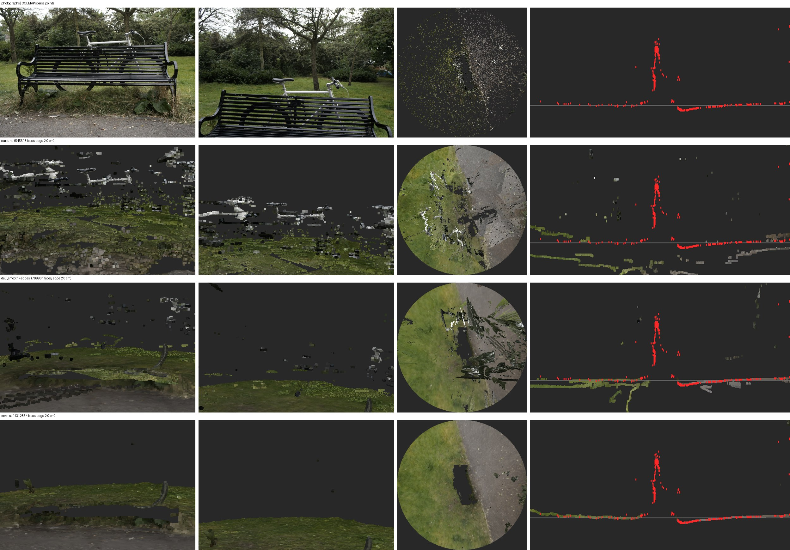
Park bench. Rows: ORIGINAL SCENE (two photographs, COLMAP's sparse points); the old backdrop; Depth Anything 3, corrected; COLMAP dense stereo. Columns: the backdrop from two of the cameras; from above, 8 m across (dark grey: no surface; the gap is the bench, cut out for its twin); a vertical cut through the bench (red: COLMAP's points, grey line: height 0, height scale doubled).
Footballs dropped from 1.5 m onto tiles of each material, 6 s, on the terrain alone.
| Scene | Ground | Tiles | Friction / restitution | Median first rebound (m) | Fell through | Rolled off the 4 m edge |
|---|---|---|---|---|---|---|
| Garden | grass | 1077 | 0.80 / 0.35 | 0.11 | 0 of 8 | 0 |
| Garden | paving | 216 | 0.60 / 0.75 | 0.52 | 0 of 7 | 0 |
| Park bench | grass | 764 | 0.80 / 0.35 | 0.11 | 0 of 8 | 0 |
| Park bench | paving | 539 | 0.60 / 0.75 | 0.52 | 0 of 8 | 0 |
The green steps A to E replace what the indoor pipeline took from ScanNet++; steps 4 to 11 of section 2 (SAM 3D, placement, colliders, grounding, layout, Isaac) run unchanged, and the dense-stereo backdrop feeds the ground tiles.
No single part does it. Indoors: SAM 3D Objects run on each photograph, the candidate that agrees best with all masks, GATOR's placement, CoACD colliders, grounding, the stand-alone test with a box for twins that fall (unless they lean), then the layout step and the nudge. That gives 87 of 88 twins standing together across 6 rooms. Outdoors: the same chain behind OWLv2 and SAM 2, MoGe-2's scale and the fitted ground, with the dense-stereo backdrop and terrain tiles: 4 of 4 twins standing together. The generator supplies shape and pose; only the physics steps make the result simulate; and neither would run outdoors without the pieces recovered above.
Not solved. Shape is still behind GATOR's (shape error 0.056 against 0.031). SAM 3D placed two tables visibly tilted: the living room's top by 5° and the bedroom desk's by 11°, so things slide on them; and it put the living room table's legs on top of its round top (the photographs show only the top), reaching 29 cm above it. Outdoors nothing is scored for shape or pose. The backdrop covers 4 m around the objects and has holes where no photograph sees the ground (under the bench); beyond it the clips show an empty background.
On the terrain unless it says flat floor; the clips are in section 5 under "Outdoor scenes".
| Garden: round table, vase on it | Park bench: bench, bicycle leaning on it | |
|---|---|---|
| Photographs | 185 in the capture; 7 to 10 per object go to SAM 3D | 194 in the capture; 10 per object go to SAM 3D |
| Stand alone (6 s each) | 2 of 2 | 1 of 2 (the bicycle falls: it needs the bench) |
| Stand together, flat floor / terrain (8 s) | 2 of 2 / 2 of 2 | 2 of 2 / 2 of 2 |
| A football dropped on the ground from 1.2 m, thrown at 2 m/s | the ball bounces 3 times (first rebound 0.41 m), rolls 3.8 m over grass and paving and stops on the paving | the ball bounces 4 times (first rebound 0.46 m), rolls 3.4 m over paving and stops on the paving |
| The table flipped (up at 2.6 m/s, 6 rad/s spin) / the bicycle pushed off the bench (1.5 m/s) | the table rises 0.42 m and comes to rest on its edge, tilted 70°; the vase on it falls 0.94 m and lands 1.34 m away | the bicycle moves 0.88 m and falls over (tilt 87°) |
| A ball thrown at the table | the ball lands without bouncing and ends on the floor | – |
| A box slid along the table | the box slides 0.21 m and stays on the table | – |
The push is a hard 1.5 m/s shove, so the bicycle goes from leaning on the bench to lying on the ground in 0.7 s. Slowed to half speed so the fall can be seen; click to play.
IN ISAAC · Park bench (outdoor, Mip-NeRF 360) · the bicycle pushed off the bench at 1.5 m/s, on the terrain collider, in slow motion: the first 3 s at 1/2 speed, seen from a capture photograph's viewpoint. Result: the bicycle moves 0.88 m and falls over (tilt 87°).
The estimated metres per COLMAP unit (and its spread over the photographs used), the ground's angle to the cameras' up, the measured heights.
| Scene | Objects (text prompt) | Metres per COLMAP unit (frame spread) | Ground vs cameras' up | Measured heights | Stand alone | Stand together |
|---|---|---|---|---|---|---|
| Garden | table (a round wooden table), vase (a vase with a plant) | 0.568 (0.52-0.63) | 1.4° | table_1 0.77 m tall, vase_1 0.51 m tall | 2 of 2 | 2 of 2 |
| Park bench | bicycle (a bicycle), bench (a park bench) | 0.895 (0.71-0.95) | 0.6° | bicycle_1 1.20 m tall, bench_1 0.98 m tall | 1 of 2 | 2 of 2 |
| Measure | Ours, GATOR's 3 rooms (51 objects) | Ours, 3 more ScanNet++ rooms (36 objects) | GATOR (paper, 229 objects) |
|---|---|---|---|
| Pose error, ADD-SB (lower is better) | 0.035 | 0.059 | 0.041 |
| Objects with ADD-SB below 0.1 | 100% | 94% | 95.6 % |
| Shape error, CD (lower is better) | 0.056 | 0.092 | 0.031 |
| Shape F1 at 2 % of the object's size | 0.44 | 0.23 | 0.60 |
| Outline agreement with the masks, IoU2D | 0.66 | 0.65 | 0.73 |
| Stand alone in Isaac Sim (6 s) | 49 of 51 | 32 of 37 | chairs only: topple 40-79° before its agent, within 1.3° after |
| Stand when the whole room settles (8 s) | 50 of 51 (51 upright) | 37 of 37 (37 upright) | not reported |
| Agent in the loop | none | none | a Blender agent per object |
Pose error (ADD-SB) compares the twin as placed with the scanned object, relative to the object's size, with no alignment: it measures position, orientation and shape together. Shape error (CD) and F1 are measured after the best alignment, so they judge the shape alone. The first column is the 51 objects of the three GATOR benchmark rooms in the local download (33 of them chairs, the hard case), the one comparable with GATOR's Table 3. The three more rooms (a living room, a bedroom, a kitchen) are outside GATOR's benchmark: their reference objects are cut from the laser scan by the annotation, as DP-Recon cut GATOR's, so GATOR has no numbers for them. GATOR's other three DP-Recon rooms are not in the ScanNet++ download, under any annotation (checked by label and by geometry). One object is left out of the means of the three more rooms and kept in the per-object table: the living room's box_1 scores ADD-SB 22.6 under every method, because the scanned box is not the box the chosen photographs show (a target-preparation mismatch, not a reconstruction error); with it the mean would read 0.667.
Our final pipeline with the capture's cameras and with cameras estimated by VGGT, against GATOR and the baselines in its Table 3.
| Method | Objects | ADD-SB | ADD-SB < 0.1 | CD | NC | F1 | IoU2D |
|---|---|---|---|---|---|---|---|
| Ours: Final pipeline (SAM 3D, placed, the capture's cameras) | 51 | 0.035 | 100% | 0.056 | 0.644 | 0.441 | 0.661 |
| Ours: Final pipeline with cameras estimated by VGGT | 51 | 0.037 | 98% | 0.058 | 0.638 | 0.427 | 0.650 |
| GATOR (paper, 229 objects in 49 scenes) | – | 0.041 | 95.6 % | 0.031 | 0.726 | 0.603 | 0.733 |
| GPT-6 agent from scratch (paper) | – | 0.049 | 90.8 % | 0.033 | 0.716 | 0.581 | 0.716 |
| MV-SAM3D (paper) | – | 0.057 | 90.8 % | 0.042 | 0.699 | 0.493 | 0.648 |
| ShapeR (paper) | – | 0.071 | 81.7 % | 0.060 | 0.684 | 0.458 | 0.610 |
The same measures on the living room, the bedroom and the kitchen (GATOR's rows are for its own rooms, shown only for scale).
| Method | Objects | ADD-SB | ADD-SB < 0.1 | CD | NC | F1 | IoU2D |
|---|---|---|---|---|---|---|---|
| Ours: Final pipeline (SAM 3D, placed, the capture's cameras) | 36 | 0.059 | 94% | 0.092 | 0.524 | 0.232 | 0.651 |
| Ours: Final pipeline with cameras estimated by VGGT | 36 | 0.070 | 92% | 0.088 | 0.537 | 0.262 | 0.642 |
| GATOR (paper, 229 objects in 49 scenes) | – | 0.041 | 95.6 % | 0.031 | 0.726 | 0.603 | 0.733 |
| GPT-6 agent from scratch (paper) | – | 0.049 | 90.8 % | 0.033 | 0.716 | 0.581 | 0.716 |
| MV-SAM3D (paper) | – | 0.057 | 90.8 % | 0.042 | 0.699 | 0.493 | 0.648 |
| ShapeR (paper) | – | 0.071 | 81.7 % | 0.060 | 0.684 | 0.458 | 0.610 |
The final pipeline's mean per object category; chairs (thin legs, occlusion) are the hard case.
| Category | Objects | ADD-SB | CD | F1 | IoU2D |
|---|---|---|---|---|---|
| chair | 45 | 0.048 | 0.068 | 0.353 | 0.591 |
| table | 8 | 0.027 | 0.057 | 0.456 | 0.679 |
| cabinet | 7 | 0.056 | 0.119 | 0.165 | 0.748 |
| bookshelf | 3 | 0.029 | 0.031 | 0.530 | 0.673 |
| storage cabinet | 2 | 0.040 | 0.134 | 0.010 | 0.891 |
| box | 2 | 0.056 | 0.087 | 0.338 | 0.752 |
| office chair | 2 | 0.027 | 0.048 | 0.375 | 0.693 |
| trash can | 2 | 0.036 | 0.029 | 0.645 | 0.762 |
| bench | 2 | 0.039 | 0.084 | 0.225 | 0.712 |
| kitchen cabinet | 2 | 0.050 | 0.074 | 0.328 | 0.632 |
| trash bin | 1 | 0.063 | 0.040 | 0.542 | 0.720 |
| monitor | 1 | 0.014 | 0.015 | 0.743 | 0.912 |
| object | 1 | 0.027 | 0.074 | 0.238 | 0.826 |
| armchair | 1 | 0.045 | 0.128 | 0.045 | 0.759 |
| bed | 1 | 0.056 | 0.107 | 0.090 | 0.714 |
| desk | 1 | 0.046 | 0.015 | 0.930 | 0.571 |
| dresser | 1 | 0.081 | 0.135 | 0.008 | 0.731 |
| wheeled chair | 1 | 0.032 | 0.030 | 0.436 | 0.793 |
| mini sofa | 1 | 0.094 | 0.180 | 0.004 | 0.607 |
| sofa | 1 | 0.042 | 0.056 | 0.269 | 0.628 |
| tv cabinet | 1 | 0.032 | 0.055 | 0.459 | 0.816 |
| tv | 1 | 0.010 | 0.009 | 0.923 | 0.877 |
Shape error (CD) and pose error (ADD-SB) of every object, final pipeline with both camera conditions.
| Room | Object | Category | Views | CD final | CD final, VGGT cameras | ADD-SB final | ADD-SB final, VGGT cameras |
|---|---|---|---|---|---|---|---|
| Conference room A | cabinet_1 | bookshelf | 4 | 0.032 | 0.032 | 0.024 | 0.023 |
| Conference room A | cabinet_2 | cabinet | 4 | 0.044 | 0.044 | 0.043 | 0.041 |
| Conference room A | chair_1 | chair | 5 | 0.123 | 0.121 | 0.064 | 0.063 |
| Conference room A | chair_10 | chair | 4 | 0.025 | 0.025 | 0.025 | 0.026 |
| Conference room A | chair_11 | chair | 7 | 0.114 | 0.114 | 0.076 | 0.077 |
| Conference room A | chair_2 | chair | 6 | 0.017 | 0.017 | 0.016 | 0.015 |
| Conference room A | chair_3 | chair | 7 | 0.133 | 0.106 | 0.053 | 0.025 |
| Conference room A | chair_4 | chair | 6 | 0.092 | 0.092 | 0.044 | 0.044 |
| Conference room A | chair_5 | chair | 4 | 0.026 | 0.026 | 0.023 | 0.025 |
| Conference room A | chair_6 | chair | 8 | 0.057 | 0.057 | 0.040 | 0.041 |
| Conference room A | chair_7 | chair | 8 | 0.022 | 0.022 | 0.017 | 0.017 |
| Conference room A | chair_8 | chair | 4 | 0.026 | 0.026 | 0.033 | 0.036 |
| Conference room A | chair_9 | chair | 5 | 0.012 | 0.012 | 0.019 | 0.017 |
| Conference room A | table_1 | table | 8 | 0.112 | 0.111 | 0.023 | 0.024 |
| Conference room A | trash bin_1 | trash bin | 5 | 0.040 | 0.040 | 0.063 | 0.058 |
| Conference room B | cabinet_1 | cabinet | 4 | 0.141 | 0.141 | 0.091 | 0.089 |
| Conference room B | chair_1 | chair | 8 | 0.031 | 0.030 | 0.030 | 0.030 |
| Conference room B | chair_10 | chair | 6 | 0.020 | 0.020 | 0.022 | 0.021 |
| Conference room B | chair_11 | chair | 8 | 0.116 | 0.120 | 0.048 | 0.051 |
| Conference room B | chair_12 | chair | 4 | 0.133 | 0.123 | 0.073 | 0.073 |
| Conference room B | chair_13 | chair | 6 | 0.044 | 0.044 | 0.035 | 0.037 |
| Conference room B | chair_14 | chair | 7 | 0.029 | 0.029 | 0.027 | 0.027 |
| Conference room B | chair_15 | chair | 9 | 0.018 | 0.018 | 0.024 | 0.025 |
| Conference room B | chair_16 | chair | 7 | 0.050 | 0.050 | 0.026 | 0.026 |
| Conference room B | chair_17 | chair | 7 | 0.051 | 0.051 | 0.023 | 0.022 |
| Conference room B | chair_18 | chair | 6 | 0.061 | 0.031 | 0.042 | 0.025 |
| Conference room B | chair_2 | chair | 7 | 0.082 | 0.087 | 0.035 | 0.084 |
| Conference room B | chair_3 | chair | 3 | 0.023 | 0.023 | 0.033 | 0.039 |
| Conference room B | chair_4 | chair | 6 | 0.023 | 0.136 | 0.026 | 0.106 |
| Conference room B | chair_5 | chair | 7 | 0.041 | 0.040 | 0.023 | 0.022 |
| Conference room B | chair_6 | chair | 7 | 0.082 | 0.082 | 0.035 | 0.026 |
| Conference room B | chair_7 | chair | 7 | 0.066 | 0.066 | 0.049 | 0.052 |
| Conference room B | chair_8 | chair | 7 | 0.048 | 0.048 | 0.023 | 0.024 |
| Conference room B | chair_9 | chair | 6 | 0.033 | 0.032 | 0.020 | 0.021 |
| Conference room B | large conference table_1 | table | 8 | 0.016 | 0.023 | 0.016 | 0.026 |
| Conference room B | small coffee table_1 | table | 9 | 0.032 | 0.032 | 0.050 | 0.049 |
| Conference room B | storage cabinet_1 | storage cabinet | 3 | 0.136 | 0.136 | 0.030 | 0.030 |
| Office | bookshelf_1 | bookshelf | 4 | 0.029 | 0.023 | 0.025 | 0.023 |
| Office | box_1 | box | 4 | 0.041 | 0.041 | 0.045 | 0.046 |
| Office | cabinet_1 | cabinet | 5 | 0.191 | 0.191 | 0.057 | 0.058 |
| Office | chair_1 | chair | 8 | 0.019 | 0.019 | 0.016 | 0.017 |
| Office | chair_2 | chair | 8 | 0.018 | 0.018 | 0.021 | 0.021 |
| Office | monitor_1 | monitor | 10 | 0.015 | 0.015 | 0.014 | 0.014 |
| Office | notebook_1 | object | 8 | 0.074 | 0.073 | 0.027 | 0.027 |
| Office | office chair_1 | office chair | 9 | 0.069 | 0.070 | 0.026 | 0.027 |
| Office | office chair_2 | office chair | 7 | 0.027 | 0.027 | 0.027 | 0.027 |
| Office | storage cabinet_1 | storage cabinet | 5 | 0.133 | 0.132 | 0.049 | 0.048 |
| Office | table_1 | table | 10 | 0.015 | 0.047 | 0.019 | 0.029 |
| Office | table_2 | table | 9 | 0.027 | 0.046 | 0.022 | 0.030 |
| Office | trash bin_1 | trash can | 5 | 0.024 | 0.024 | 0.028 | 0.029 |
| Office | trash bin_2 | trash can | 5 | 0.035 | 0.035 | 0.045 | 0.049 |
| Bedroom | armchair_1 | armchair | 3 | 0.128 | 0.045 | 0.045 | 0.051 |
| Bedroom | bed_1 | bed | 4 | 0.107 | 0.107 | 0.056 | 0.055 |
| Bedroom | bookshelf_1 | bookshelf | 3 | 0.031 | 0.031 | 0.038 | 0.034 |
| Bedroom | cabinet_1 | cabinet | 3 | 0.168 | 0.167 | 0.047 | 0.058 |
| Bedroom | cabinet_2 | cabinet | 4 | 0.086 | 0.092 | 0.040 | 0.050 |
| Bedroom | cabinet_3 | cabinet | 4 | 0.047 | 0.049 | 0.060 | 0.075 |
| Bedroom | chair_1 | chair | 3 | 0.117 | 0.118 | 0.134 | 0.149 |
| Bedroom | chair_2 | chair | 4 | 0.107 | 0.106 | 0.323 | 0.578 |
| Bedroom | desk_1 | desk | 4 | 0.015 | 0.025 | 0.046 | 0.055 |
| Bedroom | dresser_1 | dresser | 3 | 0.135 | 0.135 | 0.081 | 0.079 |
| Bedroom | wheeled chair_1 | wheeled chair | 3 | 0.030 | 0.030 | 0.032 | 0.036 |
| Living room | box_1 | box | 2 | 0.115 | 0.111 | 22.554 | 22.533 |
| Living room | box_2 | box | 4 | 0.133 | 0.136 | 0.067 | 0.072 |
| Living room | cabinet_1 | cabinet | 4 | 0.158 | 0.156 | 0.056 | 0.055 |
| Living room | chair_1 | chair | 7 | 0.151 | 0.074 | 0.064 | 0.061 |
| Living room | chair_2 | chair | 3 | 0.133 | 0.132 | 0.086 | 0.095 |
| Living room | chair_3 | chair | 6 | 0.123 | 0.075 | 0.035 | 0.032 |
| Living room | chair_4 | chair | 9 | 0.073 | 0.073 | 0.028 | 0.028 |
| Living room | chair_5 | chair | 8 | 0.045 | 0.046 | 0.025 | 0.027 |
| Living room | chair_6 | chair | 8 | 0.125 | 0.143 | 0.042 | 0.052 |
| Living room | mini sofa_1 | mini sofa | 3 | 0.180 | 0.178 | 0.094 | 0.093 |
| Living room | sofa_1 | sofa | 4 | 0.056 | 0.056 | 0.042 | 0.042 |
| Living room | table_1 | table | 8 | 0.030 | 0.034 | 0.031 | 0.034 |
| Living room | tv cabinet_1 | tv cabinet | 5 | 0.055 | 0.055 | 0.032 | 0.030 |
| Living room | tv_1 | tv | 5 | 0.009 | 0.008 | 0.010 | 0.015 |
| Kitchen | bench_1 | bench | 5 | 0.090 | 0.059 | 0.036 | 0.033 |
| Kitchen | bench_2 | bench | 5 | 0.078 | 0.059 | 0.042 | 0.042 |
| Kitchen | chair_1 | chair | 7 | 0.054 | 0.054 | 0.050 | 0.049 |
| Kitchen | chair_2 | chair | 7 | 0.066 | 0.171 | 0.067 | 0.083 |
| Kitchen | chair_3 | chair | 9 | 0.137 | 0.137 | 0.061 | 0.060 |
| Kitchen | chair_4 | chair | 7 | 0.062 | 0.084 | 0.042 | 0.050 |
| Kitchen | chair_5 | chair | 8 | 0.144 | 0.149 | 0.087 | 0.066 |
| Kitchen | chair_6 | chair | 7 | 0.077 | 0.077 | 0.071 | 0.069 |
| Kitchen | kitchen cabinet_1 | kitchen cabinet | 3 | 0.121 | 0.136 | 0.072 | 0.125 |
| Kitchen | kitchen cabinet_2 | kitchen cabinet | 5 | 0.027 | 0.027 | 0.027 | 0.027 |
| Kitchen | table_1 | table | 7 | 0.113 | 0.113 | 0.029 | 0.032 |
| Kitchen | table_2 | table | 7 | 0.113 | 0.037 | 0.024 | 0.022 |
Alone: each twin by itself on a floor for 6 s. Together: every twin of the room at once for 8 s, after grounding and the layout step. Upright: tilt below 10°; stands: also moved less than 5 cm and did not sink.
| Room | Twins | Stand alone | Upright together | Stand together | Median drift (m) | Box colliders |
|---|---|---|---|---|---|---|
| Office (acd69a1746) | 14 | 13 of 14 | 14 | 13 | 0.00 | 1 |
| Conference room A (07ff1c45bb) | 15 | 15 of 15 | 15 | 15 | 0.00 | 0 |
| Conference room B (1b75758486) | 22 | 21 of 22 | 22 | 22 | 0.00 | 1 |
| Living room (e3ef8b690b) | 14 | 13 of 14 | 14 | 14 | 0.00 | 1 |
| Bedroom (b2632b738a) | 11 | 9 of 11 | 11 | 11 | 0.00 | 2 |
| Kitchen (f2ec1f6a04) | 12 | 10 of 12 | 12 | 12 | 0.00 | 2 |
| Garden (outdoor, Mip-NeRF 360) | 2 | 2 of 2 | 2 | 2 | 0.01 | 0 |
| Park bench (outdoor, Mip-NeRF 360) | 2 | 1 of 2 | 2 | 2 | 0.01 | 0 |
After two seconds of settling, one action at t = 0, then 8 s. The last column counts the other twins that moved more than 5 cm: nothing should touch them after a push, a throw or a slide; after the flipped table or the football they are the twins it hit. The thrown ball rolls off the table in every room: it lands without bouncing and keeps most of its 1.5 m/s, and nothing slows a rolling ball; walls are not simulated, so it can roll on past the drawn wall. Indoors the football bounces on a hard floor (restitution 0.75, as the outdoor paving). 'The table top' is the table's collider surface, not the highest point of its box.
| Room | Action | Outcome | Untouched twins that moved |
|---|---|---|---|
| Office (acd69a1746) | a chair pushed away from the table at 1.5 m/s | the chair slides 0.55 m and tips over | 0 of 14 |
| Office (acd69a1746) | a laptop-sized box (blue) sent sliding along the table at 1.5 m/s | the box slides 0.34 m and stays on the table | 0 of 14 |
| Office (acd69a1746) | a 10 cm ball (red) thrown onto the table from 1.2 m above it | the ball lands on the table without bouncing and ends on the floor | 0 of 14 |
| Office (acd69a1746) | a football (white) dropped from 1.2 m onto the most open patch of floor, with a gentle 0.5 m/s throw | the ball bounces 4 times (first rebound 0.38 m), rolls 0.9 m over the ground and stops on the floor | 0 of 14 |
| Office (acd69a1746) | the table launched upwards at 2.6 m/s with a 6 rad/s spin | the table rises 0.54 m and comes to rest upside down | 1 of 14 |
| Conference room A (07ff1c45bb) | a chair pushed away from the table at 1.5 m/s | the chair slides 0.84 m and tips over | 0 of 15 |
| Conference room A (07ff1c45bb) | a laptop-sized box (blue) sent sliding along the table at 1.5 m/s | the box slides 0.13 m and stays on the table | 0 of 15 |
| Conference room A (07ff1c45bb) | a 10 cm ball (red) thrown onto the table from 1.2 m above it | the ball lands on the table without bouncing and ends on the floor | 0 of 15 |
| Conference room A (07ff1c45bb) | a football (white) dropped from 1.2 m onto the most open patch of floor, with a gentle 0.5 m/s throw | the ball bounces 4 times (first rebound 0.38 m), rolls 0.9 m over the ground and stops on the floor | 0 of 15 |
| Conference room A (07ff1c45bb) | the table launched upwards at 2.6 m/s with a 6 rad/s spin | the table rises 0.30 m and comes to rest upright, tilted 0° | 5 of 15 |
| Conference room B (1b75758486) | a chair pushed away from the table at 1.5 m/s | the chair slides 0.31 m and stays upright | 0 of 22 |
| Conference room B (1b75758486) | a laptop-sized box (blue) sent sliding along the table at 1.5 m/s | the box slides 0.32 m and stays on the table | 0 of 22 |
| Conference room B (1b75758486) | a 10 cm ball (red) thrown onto the table from 1.2 m above it | the ball lands on the table without bouncing and ends on the floor | 0 of 22 |
| Conference room B (1b75758486) | a football (white) dropped from 1.2 m onto the most open patch of floor, with a gentle 0.5 m/s throw | the ball bounces 4 times (first rebound 0.38 m), rolls 0.9 m over the ground and stops on the floor | 0 of 22 |
| Conference room B (1b75758486) | the table launched upwards at 2.6 m/s with a 6 rad/s spin | the table rises 1.13 m and comes to rest upright, tilted 0° | 5 of 22 |
| Living room (e3ef8b690b) | a chair pushed away from the table at 1.5 m/s | the chair slides 0.32 m and stays upright | 0 of 14 |
| Living room (e3ef8b690b) | a laptop-sized box (blue) sent sliding along the table at 1.5 m/s | the box slides 0.28 m and stays on the table | 0 of 14 |
| Living room (e3ef8b690b) | a 10 cm ball (red) thrown onto the table from 1.2 m above it | the ball lands on the table without bouncing and ends on the chair beside the table | 0 of 14 |
| Living room (e3ef8b690b) | a football (white) dropped from 1.2 m onto the most open patch of floor, with a gentle 0.5 m/s throw | the ball bounces 4 times (first rebound 0.38 m), rolls 0.9 m over the ground and stops on the floor | 0 of 14 |
| Living room (e3ef8b690b) | the table launched upwards at 2.6 m/s with a 6 rad/s spin | the table rises 0.33 m and comes to rest upright, tilted 1° | 1 of 14 |
| Bedroom (b2632b738a) | a chair pushed away from the table at 1.5 m/s | the chair slides 0.73 m and tips over | 0 of 11 |
| Bedroom (b2632b738a) | a laptop-sized box (blue) sent sliding along the table at 1.5 m/s | the box slides 0.44 m and stays on the table | 0 of 11 |
| Bedroom (b2632b738a) | a 10 cm ball (red) thrown onto the table from 1.2 m above it | the ball lands on the table without bouncing and ends on the floor | 0 of 11 |
| Bedroom (b2632b738a) | a football (white) dropped from 1.2 m onto the most open patch of floor, with a gentle 0.5 m/s throw | the ball bounces 4 times (first rebound 0.38 m), rolls 0.9 m over the ground and stops on the floor | 0 of 11 |
| Bedroom (b2632b738a) | the table launched upwards at 2.6 m/s with a 6 rad/s spin | the table rises 0.31 m and comes to rest upside down | 0 of 11 |
| Kitchen (f2ec1f6a04) | a chair pushed away from the table at 1.5 m/s | the chair slides 0.32 m and stays upright | 0 of 12 |
| Kitchen (f2ec1f6a04) | a laptop-sized box (blue) sent sliding along the table at 1.5 m/s | the box slides 0.32 m and stays on the table | 0 of 12 |
| Kitchen (f2ec1f6a04) | a 10 cm ball (red) thrown onto the table from 1.2 m above it | the ball lands on the table without bouncing and ends on the floor | 0 of 12 |
| Kitchen (f2ec1f6a04) | a football (white) dropped from 1.2 m onto the most open patch of floor, with a gentle 0.5 m/s throw | the ball bounces 4 times (first rebound 0.38 m), rolls 0.9 m over the ground and stops on the floor | 0 of 12 |
| Kitchen (f2ec1f6a04) | the table launched upwards at 2.6 m/s with a 6 rad/s spin | the table rises 0.41 m and comes to rest propped up, tilted 36° | 4 of 12 |
| Garden (outdoor, Mip-NeRF 360) | a laptop-sized box (blue) sent sliding along the table at 1.5 m/s | the box slides 0.21 m and stays on the table | 0 of 2 |
| Garden (outdoor, Mip-NeRF 360) | a 10 cm ball (red) thrown onto the table from 1.2 m above it | the ball lands without bouncing and ends on the floor | 0 of 2 |
| Garden (outdoor, Mip-NeRF 360) | a laptop-sized box (blue) sent sliding along the table at 1.5 m/s (on the terrain) | the box slides 0.21 m and stays on the table | 0 of 2 |
| Garden (outdoor, Mip-NeRF 360) | a 10 cm ball (red) thrown onto the table from 1.2 m above it (on the terrain) | the ball lands without bouncing and ends on the floor | 0 of 2 |
| Garden (outdoor, Mip-NeRF 360) | a football (white) dropped onto the lawn from 1.2 m with a 2 m/s throw towards the twins (on the terrain) | the ball bounces 3 times (first rebound 0.41 m), rolls 3.8 m over grass and paving and stops on the paving | 0 of 2 |
| Garden (outdoor, Mip-NeRF 360) | the table launched upwards at 2.6 m/s with a 6 rad/s spin (on the terrain) | the table rises 0.42 m and comes to rest on its edge, tilted 70°; the vase on it falls 0.94 m and lands 1.34 m away | 1 of 2 |
| Park bench (outdoor, Mip-NeRF 360) | a football (white) dropped onto the lawn from 1.2 m with a 2 m/s throw towards the twins (on the terrain) | the ball bounces 4 times (first rebound 0.46 m), rolls 3.4 m over paving and stops on the paving | 0 of 2 |
| Park bench (outdoor, Mip-NeRF 360) | the bicycle pushed off the bench at 1.5 m/s (on the terrain) | the bicycle moves 0.88 m and falls over (tilt 87°) | 0 of 2 |
Clips play in real time, at 7.5 frames per second. Until 6 November they played at twice real speed and this page stated half the physics time, because the simulations step at 960 Hz while the rollout counted its steps for 1920 Hz. Where things end and whether they stand were not affected.
GATOR's three benchmark rooms and three more. In each, every twin released together and standing in Isaac, then one action at a time: a chair pushed until it tips or slides, a ball thrown at the table, a box slid along it, a football bouncing on the floor, the table flipped.
Conference room B from above, every twin released together for 8 s: as placed, after the layout step, and the final pipeline. Hover or click to play.
IN ISAAC · 1. Released as placed: 5 of 22 stand.
IN ISAAC · 2. After the layout step: 10 of 22 stand.
IN ISAAC · 3. Grounded, layout step and nudge (final): 22 of 22 stand.
Pictures, simulation clips and every extracted asset of this room.
The real room, the twins placed in its laser scan, and the scan itself, from above and from capture photographs.
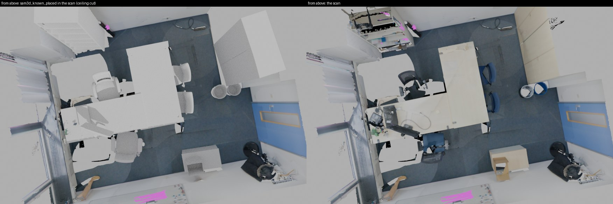
DIGITAL TWIN vs GROUND TRUTH, from above with the ceiling cut away · Office (acd69a1746): left the 14 SAM 3D twins in the scan, right the laser scan as captured.
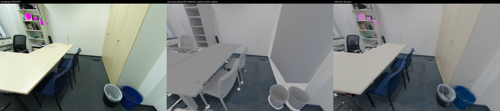
ORIGINAL SCENE vs DIGITAL TWIN vs GROUND TRUTH · Office (acd69a1746), photograph DSC04767: left the photograph, middle the twins in the scan from the same camera, right the laser scan.
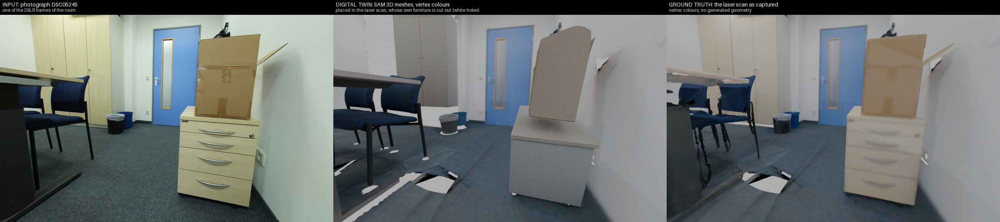
ORIGINAL SCENE vs DIGITAL TWIN vs GROUND TRUTH · Office (acd69a1746), photograph DSC05245: left the photograph, middle the twins in the scan from the same camera, right the laser scan.
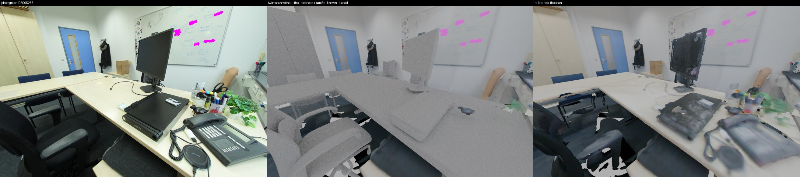
ORIGINAL SCENE vs DIGITAL TWIN vs GROUND TRUTH · Office (acd69a1746), photograph DSC05256: left the photograph, middle the twins in the scan from the same camera, right the laser scan.
The final twins of this room, 8 s of PhysX: 13 of 14 stand.
IN ISAAC · Office (acd69a1746) · all 14 twins released together for 8 s, seen from a capture photograph's viewpoint. Result: 13 of 14 stand.
One action after two seconds of settling, each from the camera that shows it best (a camera placed for the action, from above or from a photograph's viewpoint).
IN ISAAC · Office (acd69a1746) · a football (white) dropped from 1.2 m onto the most open patch of floor, with a gentle 0.5 m/s throw, seen from a camera placed for the action. Result: the ball bounces 4 times (first rebound 0.38 m), rolls 0.9 m over the ground and stops on the floor.
IN ISAAC · Office (acd69a1746) · the table launched upwards at 2.6 m/s with a 6 rad/s spin, seen from a camera placed for the action. Result: the table rises 0.54 m and comes to rest upside down.
IN ISAAC · Office (acd69a1746) · a chair pushed away from the table at 1.5 m/s, seen from a camera placed for the action. Result: the chair slides 0.55 m and tips over.
IN ISAAC · Office (acd69a1746) · a laptop-sized box (blue) sent sliding along the table at 1.5 m/s, seen from a camera placed for the action. Result: the box slides 0.34 m and stays on the table.
IN ISAAC · Office (acd69a1746) · a 10 cm ball (red) thrown onto the table from 1.2 m above it, seen from a camera placed for the action. Result: the ball lands on the table without bouncing and ends on the floor.
14 objects: photograph, SAM 3D twin, scanned object.
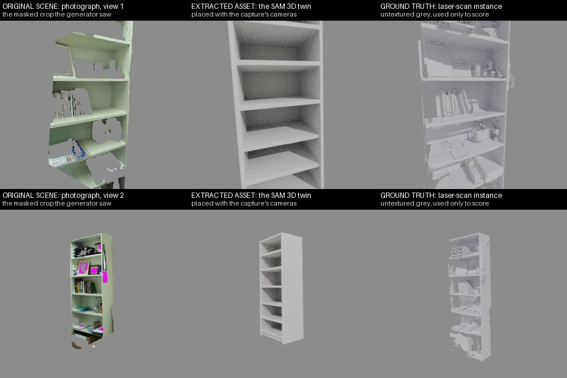
EXTRACTED ASSET · Office (acd69a1746) · bookshelf_1 (bookshelf): left the photograph the generator saw, middle the SAM 3D twin, right the scanned object; two viewpoints.
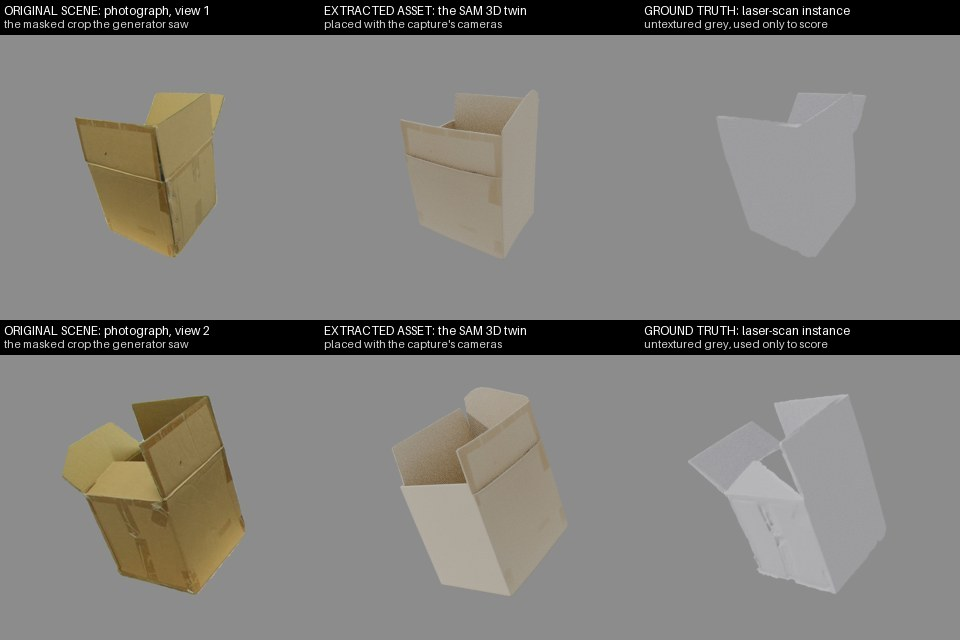
EXTRACTED ASSET · Office (acd69a1746) · box_1 (box): left the photograph the generator saw, middle the SAM 3D twin, right the scanned object; two viewpoints.
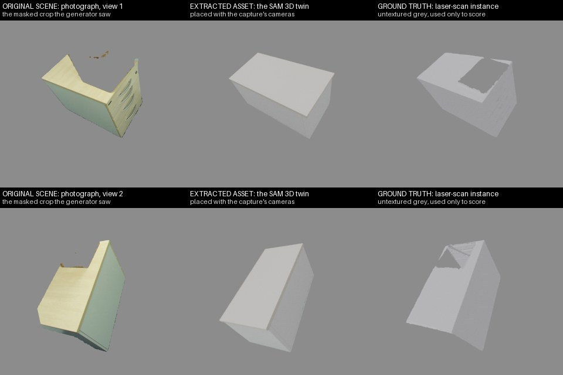
EXTRACTED ASSET · Office (acd69a1746) · cabinet_1 (cabinet): left the photograph the generator saw, middle the SAM 3D twin, right the scanned object; two viewpoints.
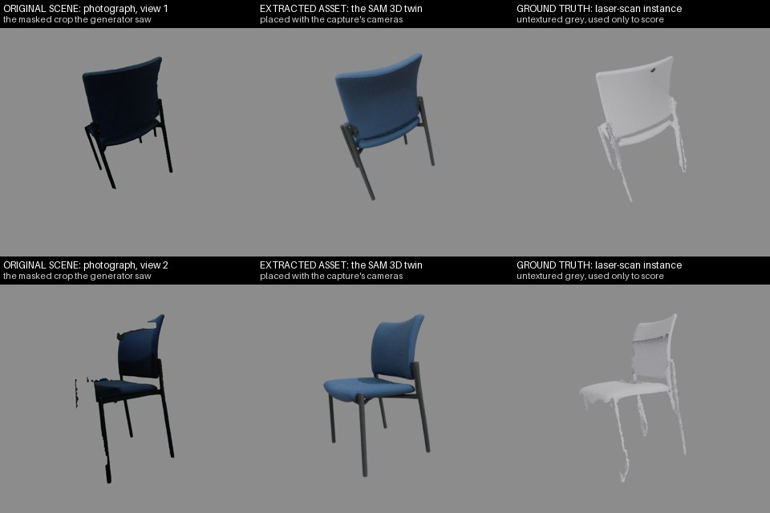
EXTRACTED ASSET · Office (acd69a1746) · chair_1 (chair): left the photograph the generator saw, middle the SAM 3D twin, right the scanned object; two viewpoints.
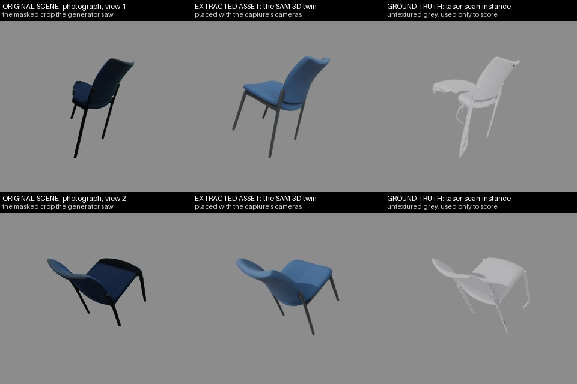
EXTRACTED ASSET · Office (acd69a1746) · chair_2 (chair): left the photograph the generator saw, middle the SAM 3D twin, right the scanned object; two viewpoints.
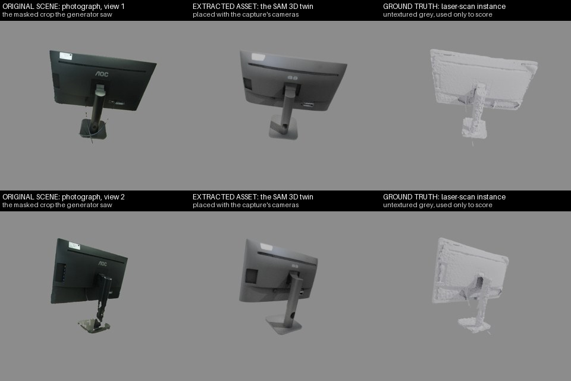
EXTRACTED ASSET · Office (acd69a1746) · monitor_1 (monitor): left the photograph the generator saw, middle the SAM 3D twin, right the scanned object; two viewpoints.
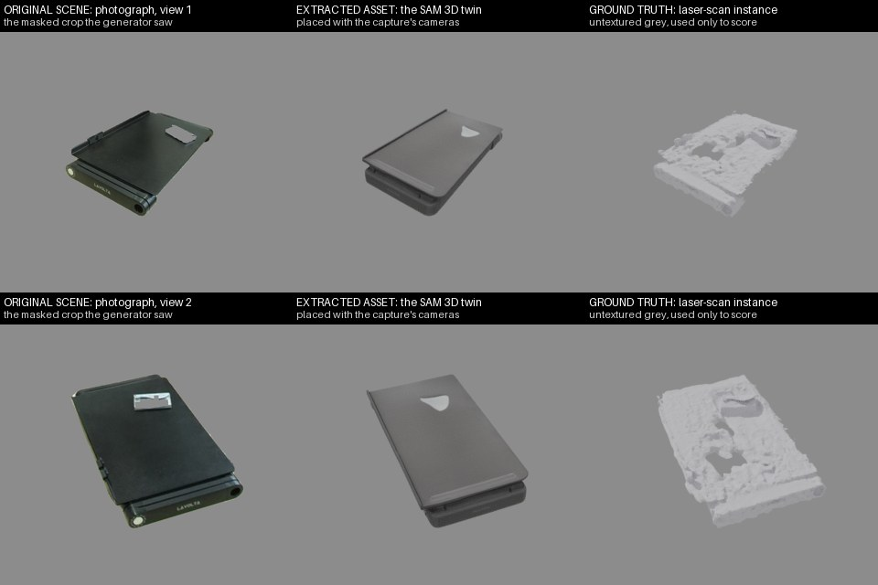
EXTRACTED ASSET · Office (acd69a1746) · notebook_1 (object): left the photograph the generator saw, middle the SAM 3D twin, right the scanned object; two viewpoints.
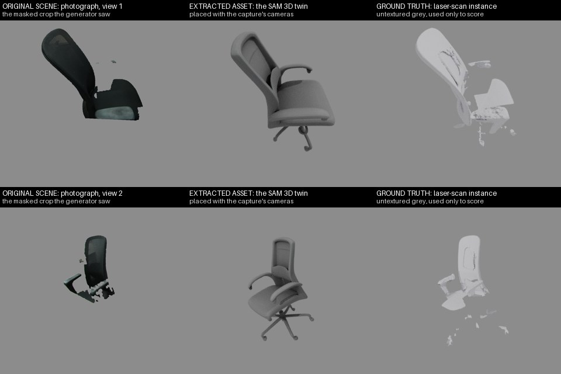
EXTRACTED ASSET · Office (acd69a1746) · office chair_1 (office chair): left the photograph the generator saw, middle the SAM 3D twin, right the scanned object; two viewpoints.
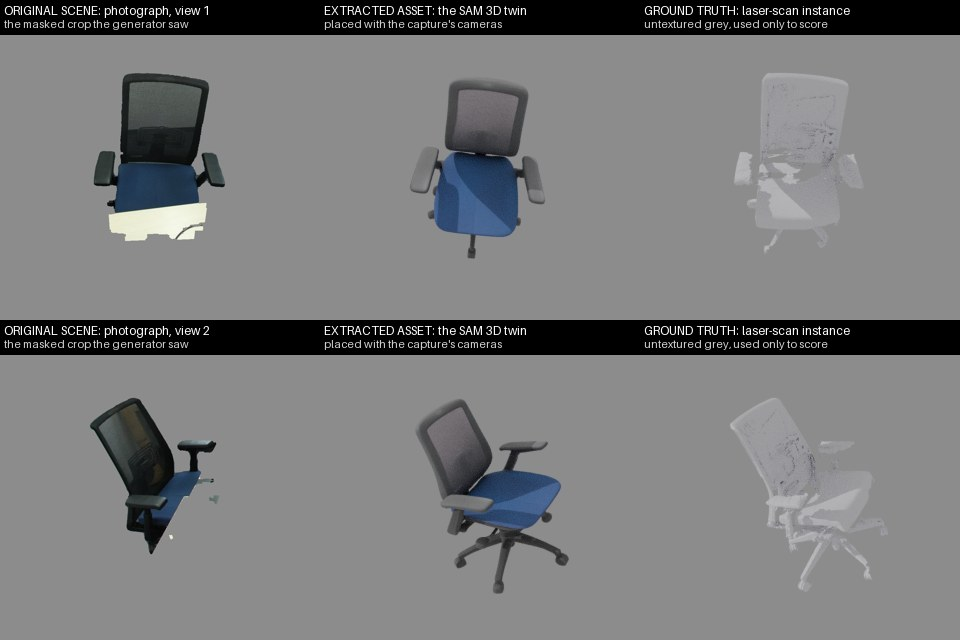
EXTRACTED ASSET · Office (acd69a1746) · office chair_2 (office chair): left the photograph the generator saw, middle the SAM 3D twin, right the scanned object; two viewpoints.
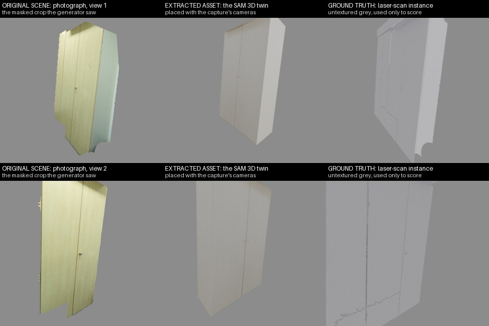
EXTRACTED ASSET · Office (acd69a1746) · storage cabinet_1 (storage cabinet): left the photograph the generator saw, middle the SAM 3D twin, right the scanned object; two viewpoints.
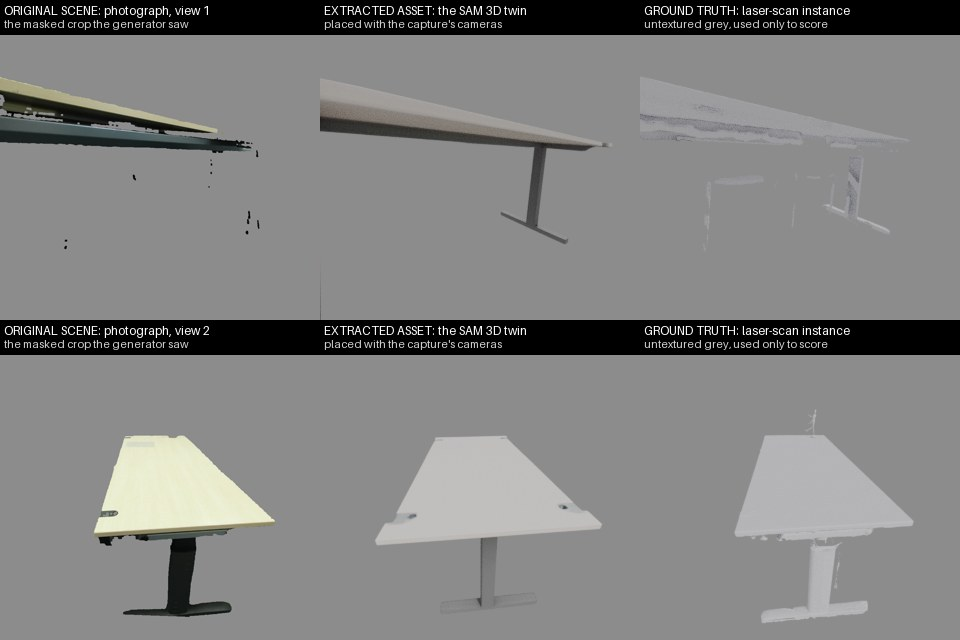
EXTRACTED ASSET · Office (acd69a1746) · table_1 (table): left the photograph the generator saw, middle the SAM 3D twin, right the scanned object; two viewpoints.
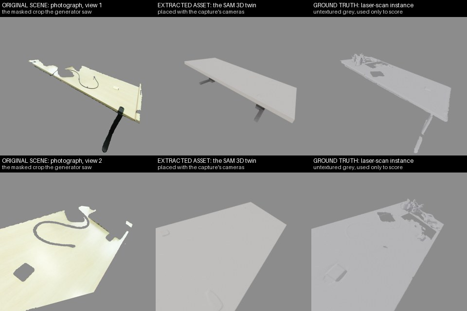
EXTRACTED ASSET · Office (acd69a1746) · table_2 (table): left the photograph the generator saw, middle the SAM 3D twin, right the scanned object; two viewpoints.
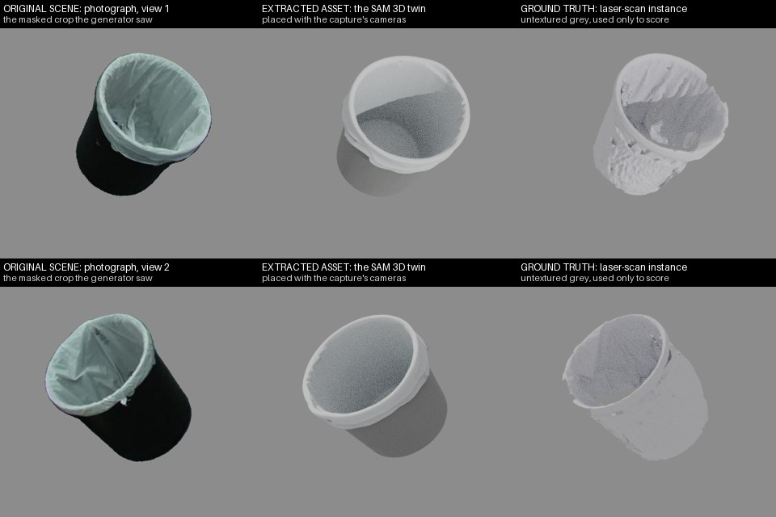
EXTRACTED ASSET · Office (acd69a1746) · trash bin_1 (trash can): left the photograph the generator saw, middle the SAM 3D twin, right the scanned object; two viewpoints.
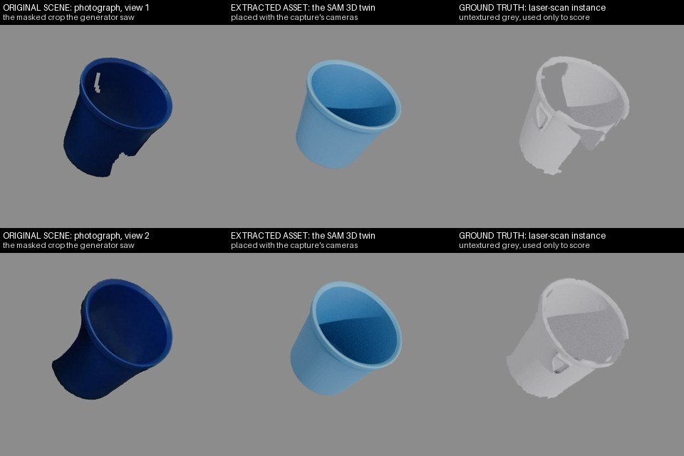
EXTRACTED ASSET · Office (acd69a1746) · trash bin_2 (trash can): left the photograph the generator saw, middle the SAM 3D twin, right the scanned object; two viewpoints.
Pictures, simulation clips and every extracted asset of this room.
The real room, the twins placed in its laser scan, and the scan itself, from above and from capture photographs.
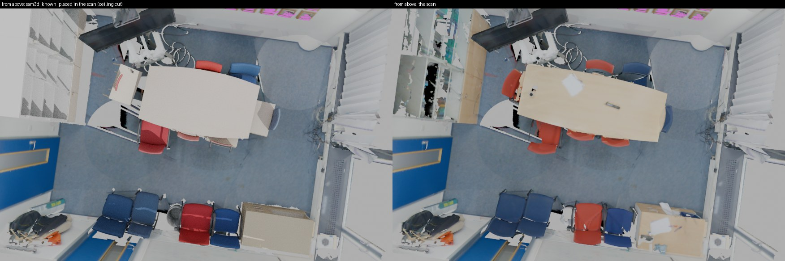
DIGITAL TWIN vs GROUND TRUTH, from above with the ceiling cut away · Conference room A (07ff1c45bb): left the 15 SAM 3D twins in the scan, right the laser scan as captured.
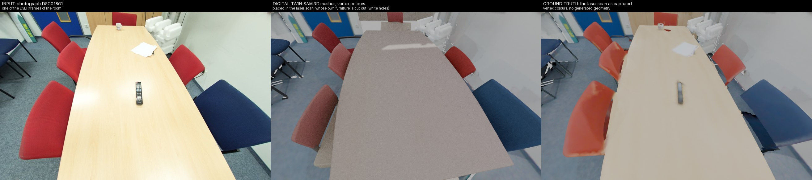
ORIGINAL SCENE vs DIGITAL TWIN vs GROUND TRUTH · Conference room A (07ff1c45bb), photograph DSC01861: left the photograph, middle the twins in the scan from the same camera, right the laser scan.
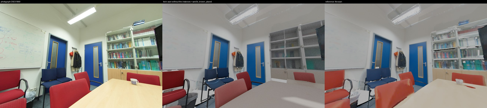
ORIGINAL SCENE vs DIGITAL TWIN vs GROUND TRUTH · Conference room A (07ff1c45bb), photograph DSC01869: left the photograph, middle the twins in the scan from the same camera, right the laser scan.
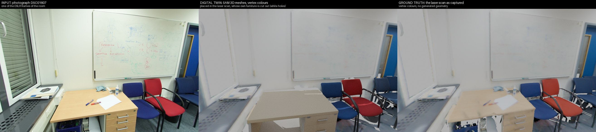
ORIGINAL SCENE vs DIGITAL TWIN vs GROUND TRUTH · Conference room A (07ff1c45bb), photograph DSC01607: left the photograph, middle the twins in the scan from the same camera, right the laser scan.
The final twins of this room, 8 s of PhysX: 15 of 15 stand.
IN ISAAC · Conference room A (07ff1c45bb) · all 15 twins released together for 8 s, seen from a capture photograph's viewpoint. Result: 15 of 15 stand.
One action after two seconds of settling, each from the camera that shows it best (a camera placed for the action, from above or from a photograph's viewpoint).
IN ISAAC · Conference room A (07ff1c45bb) · a football (white) dropped from 1.2 m onto the most open patch of floor, with a gentle 0.5 m/s throw, seen from a camera placed for the action. Result: the ball bounces 4 times (first rebound 0.38 m), rolls 0.9 m over the ground and stops on the floor.
IN ISAAC · Conference room A (07ff1c45bb) · the table launched upwards at 2.6 m/s with a 6 rad/s spin, seen from a capture photograph's viewpoint. Result: the table rises 0.30 m and comes to rest upright, tilted 0°.
IN ISAAC · Conference room A (07ff1c45bb) · a chair pushed away from the table at 1.5 m/s, seen from a camera placed for the action. Result: the chair slides 0.84 m and tips over.
IN ISAAC · Conference room A (07ff1c45bb) · a laptop-sized box (blue) sent sliding along the table at 1.5 m/s, seen from a camera placed for the action. Result: the box slides 0.13 m and stays on the table.
IN ISAAC · Conference room A (07ff1c45bb) · a 10 cm ball (red) thrown onto the table from 1.2 m above it, seen from a capture photograph's viewpoint. Result: the ball lands on the table without bouncing and ends on the floor.
15 objects: photograph, SAM 3D twin, scanned object.
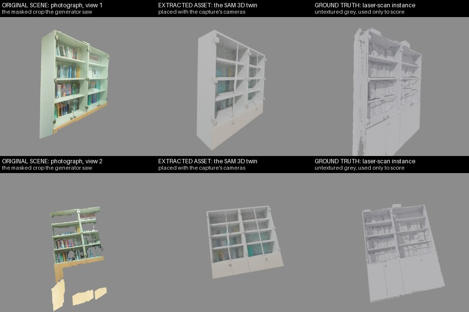
EXTRACTED ASSET · Conference room A (07ff1c45bb) · cabinet_1 (bookshelf): left the photograph the generator saw, middle the SAM 3D twin, right the scanned object; two viewpoints.
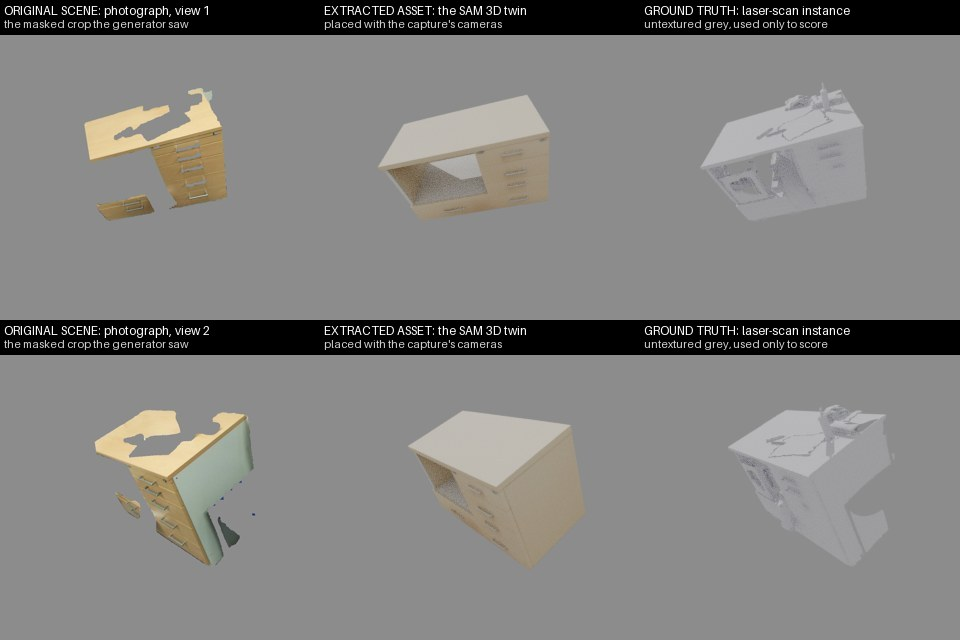
EXTRACTED ASSET · Conference room A (07ff1c45bb) · cabinet_2 (cabinet): left the photograph the generator saw, middle the SAM 3D twin, right the scanned object; two viewpoints.
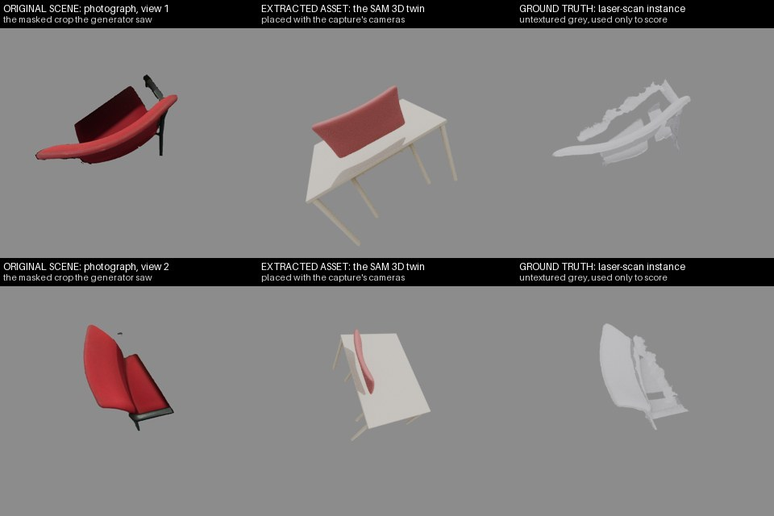
EXTRACTED ASSET · Conference room A (07ff1c45bb) · chair_1 (chair): left the photograph the generator saw, middle the SAM 3D twin, right the scanned object; two viewpoints.
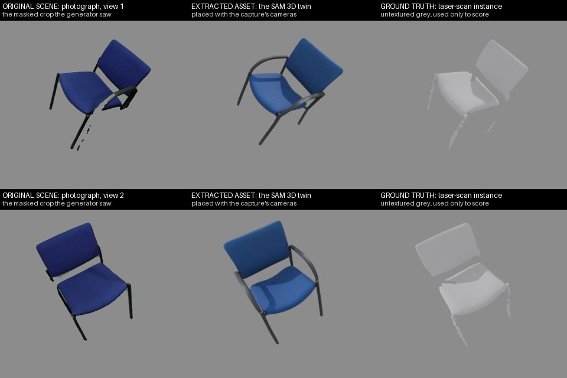
EXTRACTED ASSET · Conference room A (07ff1c45bb) · chair_10 (chair): left the photograph the generator saw, middle the SAM 3D twin, right the scanned object; two viewpoints.
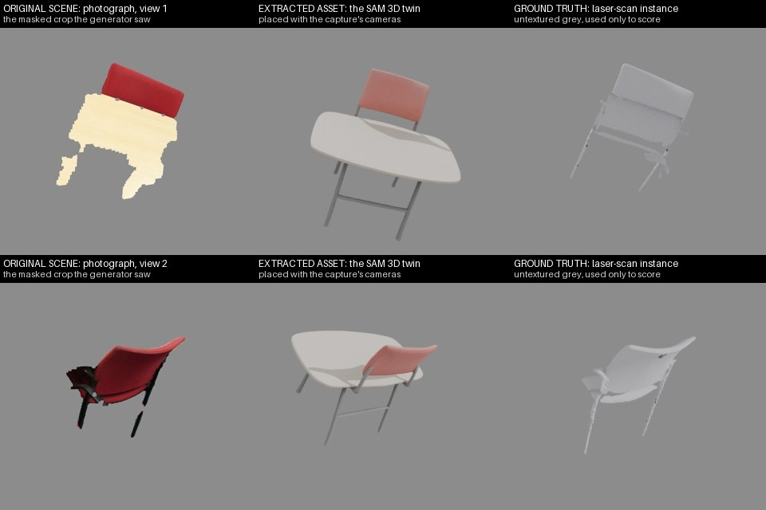
EXTRACTED ASSET · Conference room A (07ff1c45bb) · chair_11 (chair): left the photograph the generator saw, middle the SAM 3D twin, right the scanned object; two viewpoints.
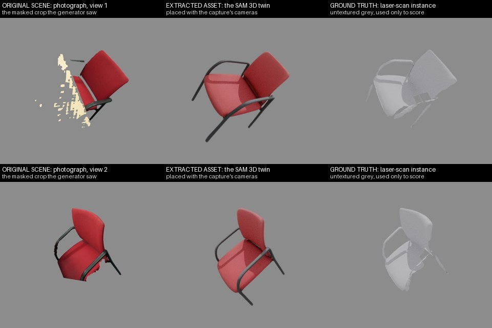
EXTRACTED ASSET · Conference room A (07ff1c45bb) · chair_2 (chair): left the photograph the generator saw, middle the SAM 3D twin, right the scanned object; two viewpoints.
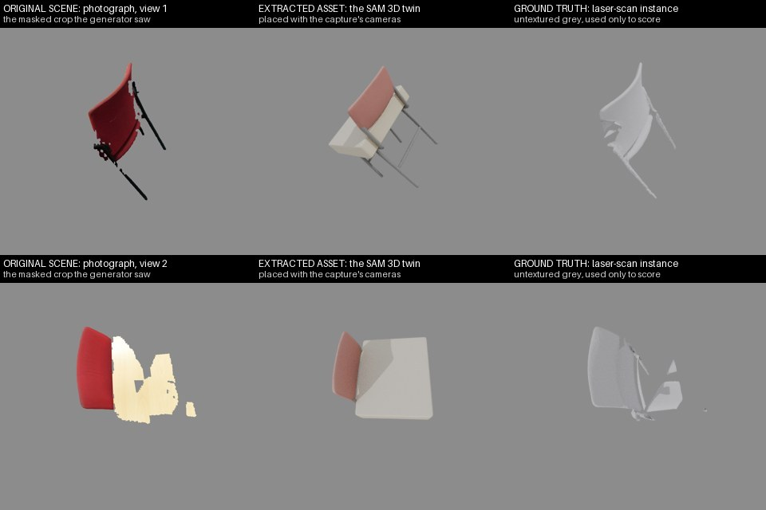
EXTRACTED ASSET · Conference room A (07ff1c45bb) · chair_3 (chair): left the photograph the generator saw, middle the SAM 3D twin, right the scanned object; two viewpoints.
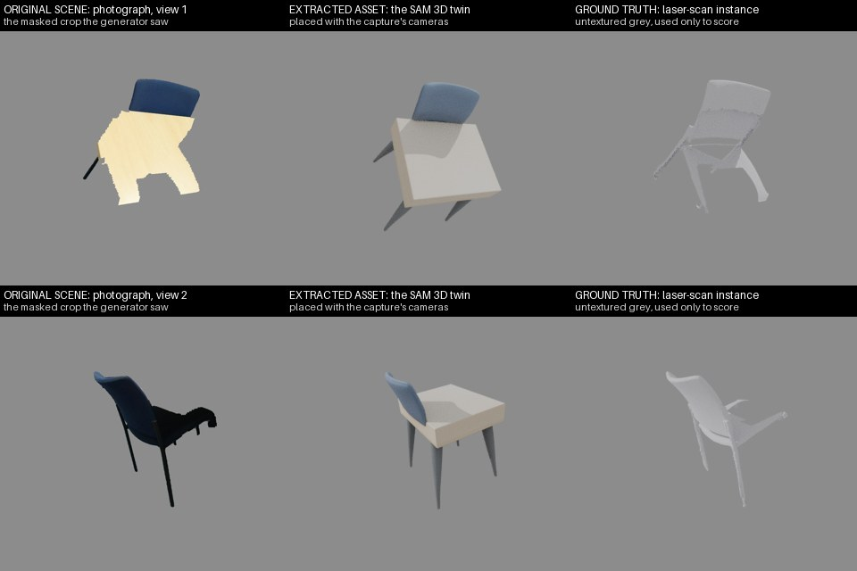
EXTRACTED ASSET · Conference room A (07ff1c45bb) · chair_4 (chair): left the photograph the generator saw, middle the SAM 3D twin, right the scanned object; two viewpoints.
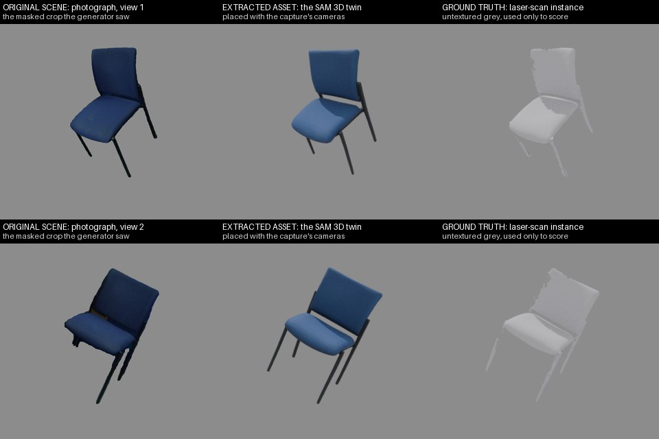
EXTRACTED ASSET · Conference room A (07ff1c45bb) · chair_5 (chair): left the photograph the generator saw, middle the SAM 3D twin, right the scanned object; two viewpoints.
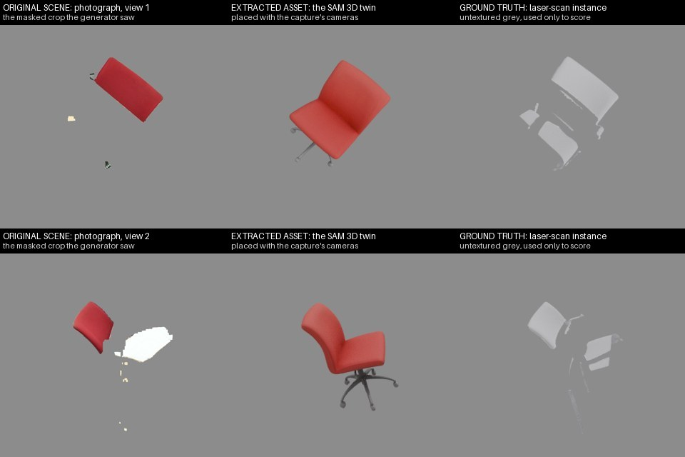
EXTRACTED ASSET · Conference room A (07ff1c45bb) · chair_6 (chair): left the photograph the generator saw, middle the SAM 3D twin, right the scanned object; two viewpoints.
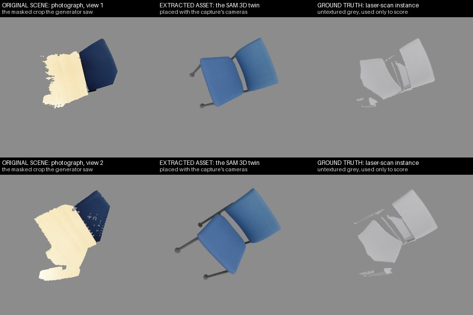
EXTRACTED ASSET · Conference room A (07ff1c45bb) · chair_7 (chair): left the photograph the generator saw, middle the SAM 3D twin, right the scanned object; two viewpoints.
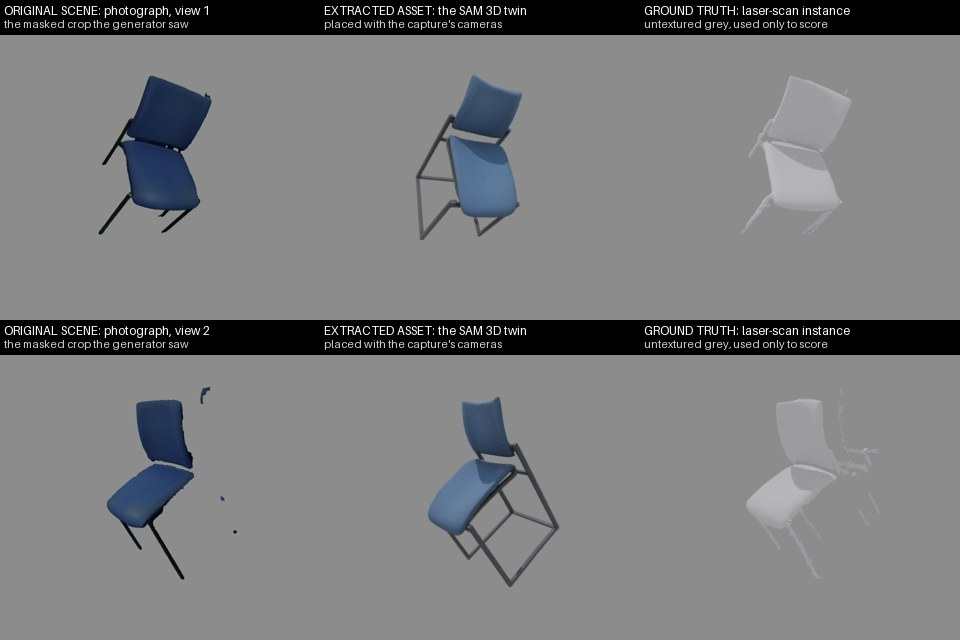
EXTRACTED ASSET · Conference room A (07ff1c45bb) · chair_8 (chair): left the photograph the generator saw, middle the SAM 3D twin, right the scanned object; two viewpoints.
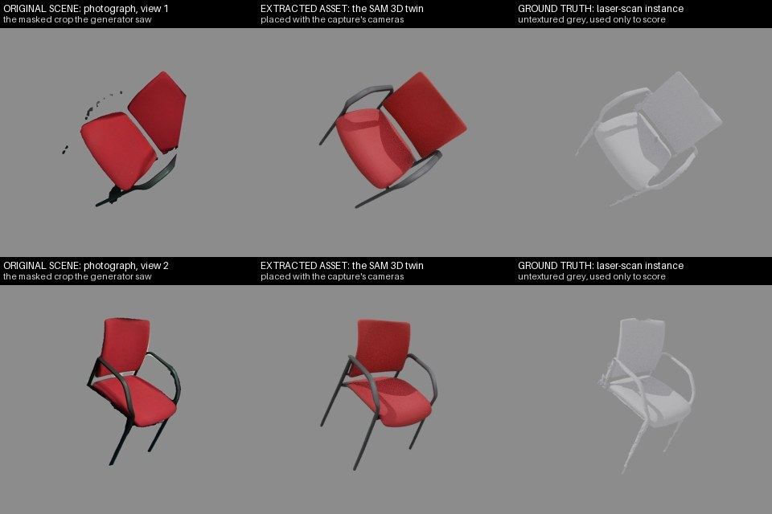
EXTRACTED ASSET · Conference room A (07ff1c45bb) · chair_9 (chair): left the photograph the generator saw, middle the SAM 3D twin, right the scanned object; two viewpoints.
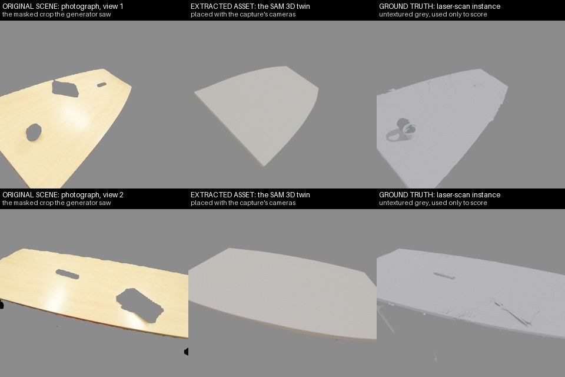
EXTRACTED ASSET · Conference room A (07ff1c45bb) · table_1 (table): left the photograph the generator saw, middle the SAM 3D twin, right the scanned object; two viewpoints.
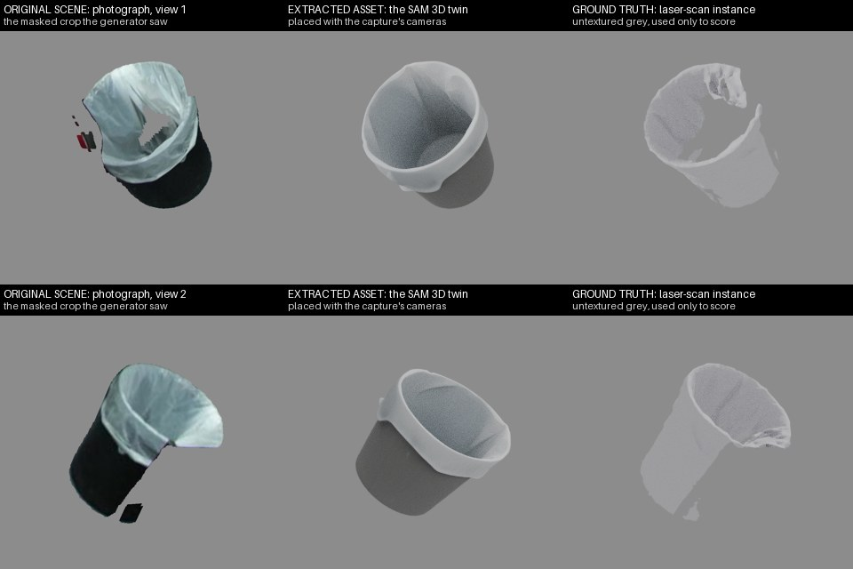
EXTRACTED ASSET · Conference room A (07ff1c45bb) · trash bin_1 (trash bin): left the photograph the generator saw, middle the SAM 3D twin, right the scanned object; two viewpoints.
Pictures, simulation clips and every extracted asset of this room.
The real room, the twins placed in its laser scan, and the scan itself, from above and from capture photographs.
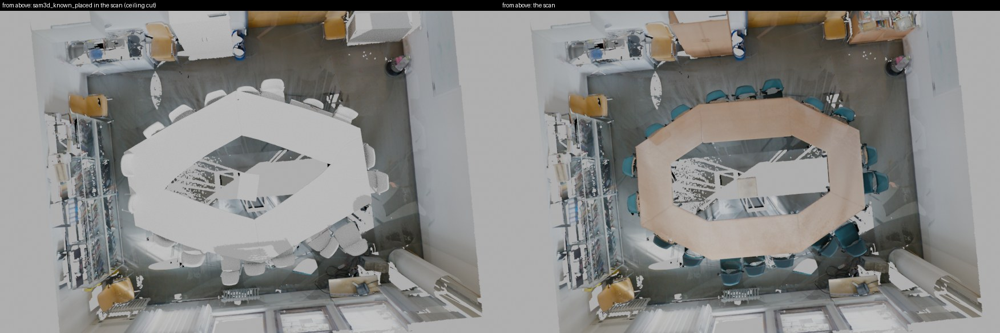
DIGITAL TWIN vs GROUND TRUTH, from above with the ceiling cut away · Conference room B (1b75758486): left the 22 SAM 3D twins in the scan, right the laser scan as captured.
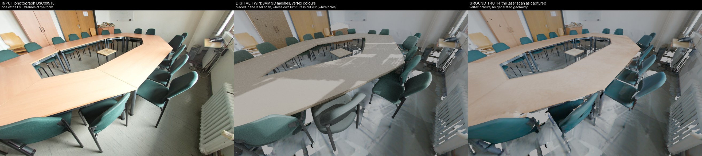
ORIGINAL SCENE vs DIGITAL TWIN vs GROUND TRUTH · Conference room B (1b75758486), photograph DSC09515: left the photograph, middle the twins in the scan from the same camera, right the laser scan.
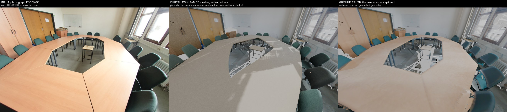
ORIGINAL SCENE vs DIGITAL TWIN vs GROUND TRUTH · Conference room B (1b75758486), photograph DSC09451: left the photograph, middle the twins in the scan from the same camera, right the laser scan.
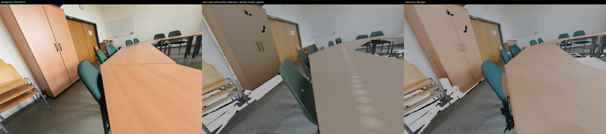
ORIGINAL SCENE vs DIGITAL TWIN vs GROUND TRUTH · Conference room B (1b75758486), photograph DSC09570: left the photograph, middle the twins in the scan from the same camera, right the laser scan.
The final twins of this room, 8 s of PhysX: 22 of 22 stand.
IN ISAAC · Conference room B (1b75758486) · all 22 twins released together for 8 s, seen from a capture photograph's viewpoint. Result: 22 of 22 stand.
One action after two seconds of settling, each from the camera that shows it best (a camera placed for the action, from above or from a photograph's viewpoint).
IN ISAAC · Conference room B (1b75758486) · a football (white) dropped from 1.2 m onto the most open patch of floor, with a gentle 0.5 m/s throw, seen from a camera placed for the action. Result: the ball bounces 4 times (first rebound 0.38 m), rolls 0.9 m over the ground and stops on the floor.
IN ISAAC · Conference room B (1b75758486) · the table launched upwards at 2.6 m/s with a 6 rad/s spin, seen from a camera placed for the action. Result: the table rises 1.13 m and comes to rest upright, tilted 0°.
IN ISAAC · Conference room B (1b75758486) · a chair pushed away from the table at 1.5 m/s, seen from a camera placed for the action. Result: the chair slides 0.31 m and stays upright.
IN ISAAC · Conference room B (1b75758486) · a laptop-sized box (blue) sent sliding along the table at 1.5 m/s, seen from a camera placed for the action. Result: the box slides 0.32 m and stays on the table.
IN ISAAC · Conference room B (1b75758486) · a 10 cm ball (red) thrown onto the table from 1.2 m above it, seen from a camera placed for the action. Result: the ball lands on the table without bouncing and ends on the floor.
22 objects: photograph, SAM 3D twin, scanned object.
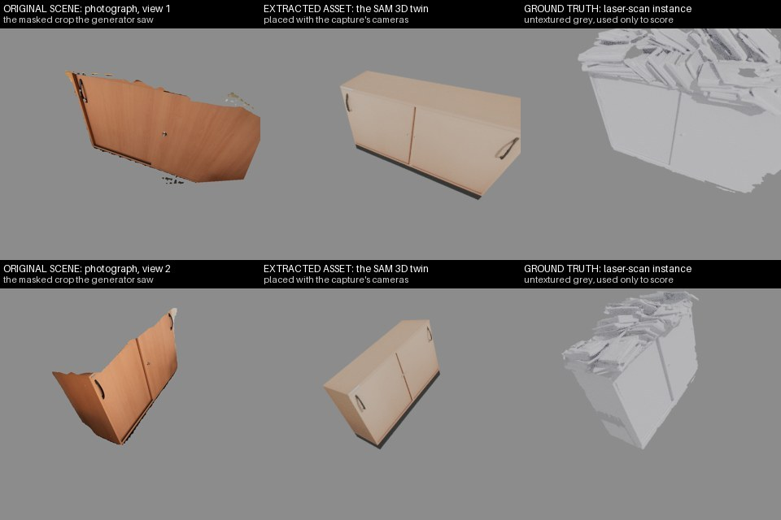
EXTRACTED ASSET · Conference room B (1b75758486) · cabinet_1 (cabinet): left the photograph the generator saw, middle the SAM 3D twin, right the scanned object; two viewpoints.
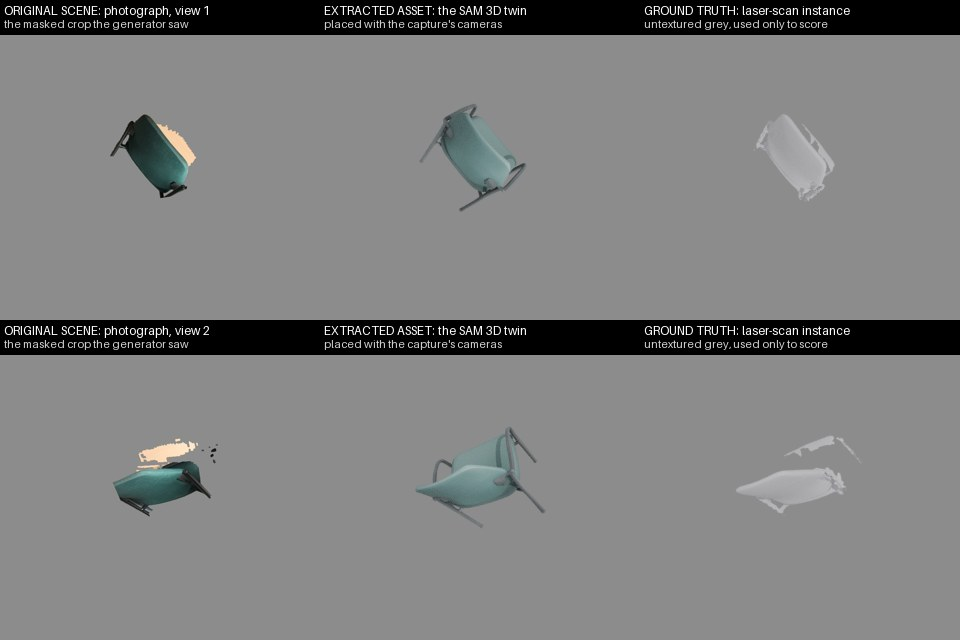
EXTRACTED ASSET · Conference room B (1b75758486) · chair_1 (chair): left the photograph the generator saw, middle the SAM 3D twin, right the scanned object; two viewpoints.
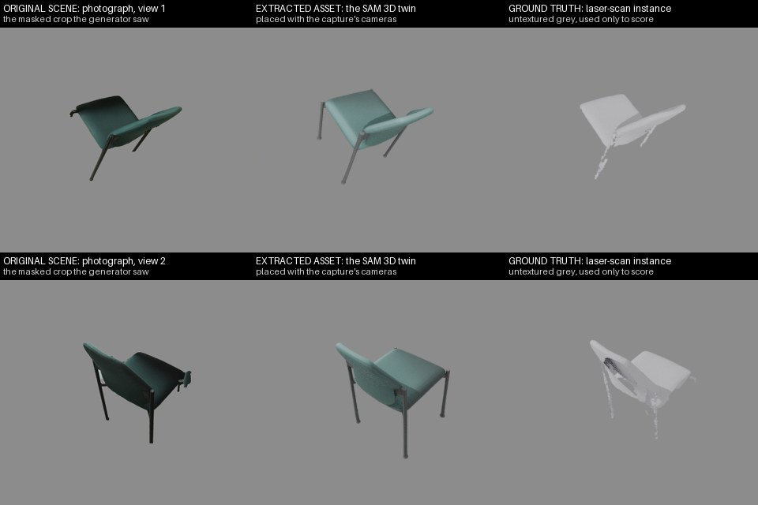
EXTRACTED ASSET · Conference room B (1b75758486) · chair_10 (chair): left the photograph the generator saw, middle the SAM 3D twin, right the scanned object; two viewpoints.
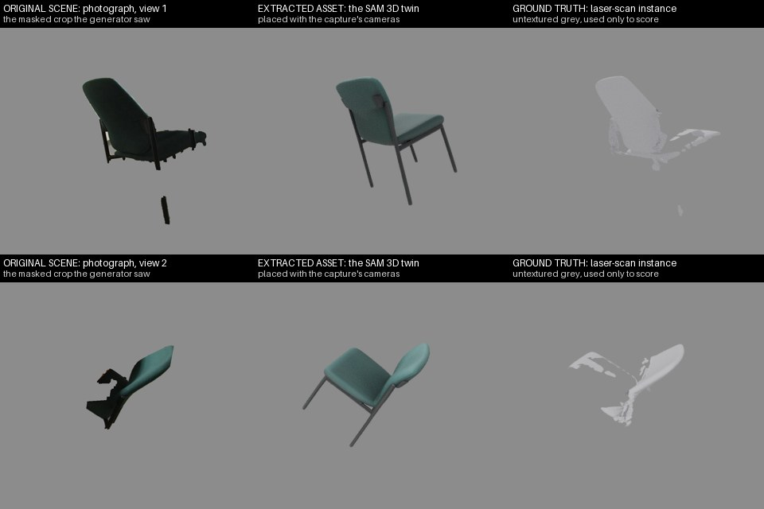
EXTRACTED ASSET · Conference room B (1b75758486) · chair_11 (chair): left the photograph the generator saw, middle the SAM 3D twin, right the scanned object; two viewpoints.
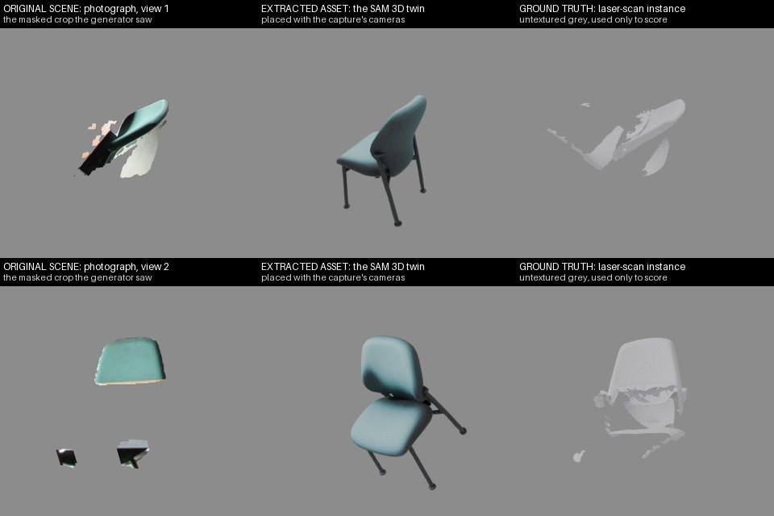
EXTRACTED ASSET · Conference room B (1b75758486) · chair_12 (chair): left the photograph the generator saw, middle the SAM 3D twin, right the scanned object; two viewpoints.
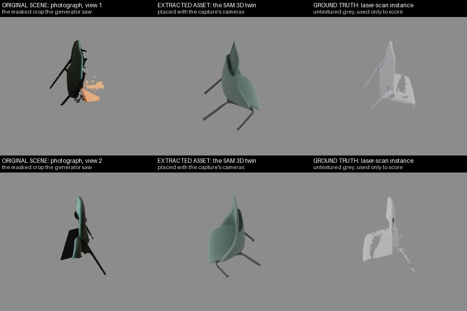
EXTRACTED ASSET · Conference room B (1b75758486) · chair_13 (chair): left the photograph the generator saw, middle the SAM 3D twin, right the scanned object; two viewpoints.
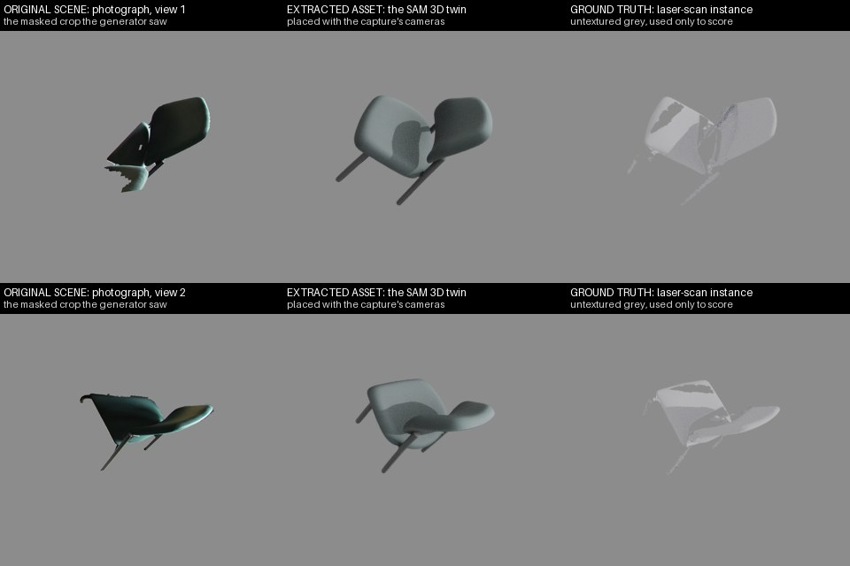
EXTRACTED ASSET · Conference room B (1b75758486) · chair_14 (chair): left the photograph the generator saw, middle the SAM 3D twin, right the scanned object; two viewpoints.
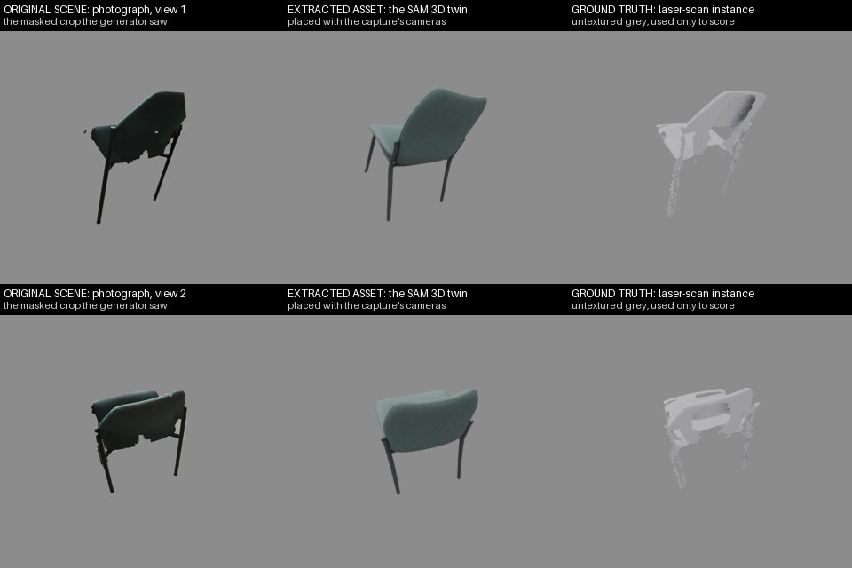
EXTRACTED ASSET · Conference room B (1b75758486) · chair_15 (chair): left the photograph the generator saw, middle the SAM 3D twin, right the scanned object; two viewpoints.
EXTRACTED ASSET · Conference room B (1b75758486) · chair_16 (chair): left the photograph the generator saw, middle the SAM 3D twin, right the scanned object; two viewpoints.
EXTRACTED ASSET · Conference room B (1b75758486) · chair_17 (chair): left the photograph the generator saw, middle the SAM 3D twin, right the scanned object; two viewpoints.
EXTRACTED ASSET · Conference room B (1b75758486) · chair_18 (chair): left the photograph the generator saw, middle the SAM 3D twin, right the scanned object; two viewpoints.
EXTRACTED ASSET · Conference room B (1b75758486) · chair_2 (chair): left the photograph the generator saw, middle the SAM 3D twin, right the scanned object; two viewpoints.
EXTRACTED ASSET · Conference room B (1b75758486) · chair_3 (chair): left the photograph the generator saw, middle the SAM 3D twin, right the scanned object; two viewpoints.
EXTRACTED ASSET · Conference room B (1b75758486) · chair_4 (chair): left the photograph the generator saw, middle the SAM 3D twin, right the scanned object; two viewpoints.
EXTRACTED ASSET · Conference room B (1b75758486) · chair_5 (chair): left the photograph the generator saw, middle the SAM 3D twin, right the scanned object; two viewpoints.
EXTRACTED ASSET · Conference room B (1b75758486) · chair_6 (chair): left the photograph the generator saw, middle the SAM 3D twin, right the scanned object; two viewpoints.
EXTRACTED ASSET · Conference room B (1b75758486) · chair_7 (chair): left the photograph the generator saw, middle the SAM 3D twin, right the scanned object; two viewpoints.
EXTRACTED ASSET · Conference room B (1b75758486) · chair_8 (chair): left the photograph the generator saw, middle the SAM 3D twin, right the scanned object; two viewpoints.
EXTRACTED ASSET · Conference room B (1b75758486) · chair_9 (chair): left the photograph the generator saw, middle the SAM 3D twin, right the scanned object; two viewpoints.
EXTRACTED ASSET · Conference room B (1b75758486) · large conference table_1 (table): left the photograph the generator saw, middle the SAM 3D twin, right the scanned object; two viewpoints.
EXTRACTED ASSET · Conference room B (1b75758486) · small coffee table_1 (table): left the photograph the generator saw, middle the SAM 3D twin, right the scanned object; two viewpoints.
EXTRACTED ASSET · Conference room B (1b75758486) · storage cabinet_1 (storage cabinet): left the photograph the generator saw, middle the SAM 3D twin, right the scanned object; two viewpoints.
Pictures, simulation clips and every extracted asset of this room.
The real room, the twins placed in its laser scan, and the scan itself, from above and from capture photographs.
DIGITAL TWIN vs GROUND TRUTH, from above with the ceiling cut away · Living room (e3ef8b690b): left the 14 SAM 3D twins in the scan, right the laser scan as captured.
ORIGINAL SCENE vs DIGITAL TWIN vs GROUND TRUTH · Living room (e3ef8b690b), photograph d792f7be_DSC02869: left the photograph, middle the twins in the scan from the same camera, right the laser scan.
ORIGINAL SCENE vs DIGITAL TWIN vs GROUND TRUTH · Living room (e3ef8b690b), photograph d792f7be_DSC02864: left the photograph, middle the twins in the scan from the same camera, right the laser scan.
ORIGINAL SCENE vs DIGITAL TWIN vs GROUND TRUTH · Living room (e3ef8b690b), photograph d792f7be_DSC01544: left the photograph, middle the twins in the scan from the same camera, right the laser scan.
The final twins of this room, 8 s of PhysX: 14 of 14 stand.
IN ISAAC · Living room (e3ef8b690b) · all 14 twins released together for 8 s, seen from above. Result: 14 of 14 stand.
One action after two seconds of settling, each from the camera that shows it best (a camera placed for the action, from above or from a photograph's viewpoint).
IN ISAAC · Living room (e3ef8b690b) · a football (white) dropped from 1.2 m onto the most open patch of floor, with a gentle 0.5 m/s throw, seen from a camera placed for the action. Result: the ball bounces 4 times (first rebound 0.38 m), rolls 0.9 m over the ground and stops on the floor.
IN ISAAC · Living room (e3ef8b690b) · the table launched upwards at 2.6 m/s with a 6 rad/s spin, seen from a camera placed for the action. Result: the table rises 0.33 m and comes to rest upright, tilted 1°.
IN ISAAC · Living room (e3ef8b690b) · a chair pushed away from the table at 1.5 m/s, seen from a camera placed for the action. Result: the chair slides 0.32 m and stays upright.
IN ISAAC · Living room (e3ef8b690b) · a laptop-sized box (blue) sent sliding along the table at 1.5 m/s, seen from a camera placed for the action. Result: the box slides 0.28 m and stays on the table.
IN ISAAC · Living room (e3ef8b690b) · a 10 cm ball (red) thrown onto the table from 1.2 m above it, seen from a capture photograph's viewpoint. Result: the ball lands on the table without bouncing and ends on the chair beside the table.
14 objects: photograph, SAM 3D twin, scanned object.
EXTRACTED ASSET · Living room (e3ef8b690b) · box_1 (box): left the photograph the generator saw, middle the SAM 3D twin, right the scanned object; two viewpoints.
EXTRACTED ASSET · Living room (e3ef8b690b) · box_2 (box): left the photograph the generator saw, middle the SAM 3D twin, right the scanned object; two viewpoints.
EXTRACTED ASSET · Living room (e3ef8b690b) · cabinet_1 (cabinet): left the photograph the generator saw, middle the SAM 3D twin, right the scanned object; two viewpoints.
EXTRACTED ASSET · Living room (e3ef8b690b) · chair_1 (chair): left the photograph the generator saw, middle the SAM 3D twin, right the scanned object; two viewpoints.
EXTRACTED ASSET · Living room (e3ef8b690b) · chair_2 (chair): left the photograph the generator saw, middle the SAM 3D twin, right the scanned object; two viewpoints.
EXTRACTED ASSET · Living room (e3ef8b690b) · chair_3 (chair): left the photograph the generator saw, middle the SAM 3D twin, right the scanned object; two viewpoints.
EXTRACTED ASSET · Living room (e3ef8b690b) · chair_4 (chair): left the photograph the generator saw, middle the SAM 3D twin, right the scanned object; two viewpoints.
EXTRACTED ASSET · Living room (e3ef8b690b) · chair_5 (chair): left the photograph the generator saw, middle the SAM 3D twin, right the scanned object; two viewpoints.
EXTRACTED ASSET · Living room (e3ef8b690b) · chair_6 (chair): left the photograph the generator saw, middle the SAM 3D twin, right the scanned object; two viewpoints.
EXTRACTED ASSET · Living room (e3ef8b690b) · mini sofa_1 (mini sofa): left the photograph the generator saw, middle the SAM 3D twin, right the scanned object; two viewpoints.
EXTRACTED ASSET · Living room (e3ef8b690b) · sofa_1 (sofa): left the photograph the generator saw, middle the SAM 3D twin, right the scanned object; two viewpoints.
EXTRACTED ASSET · Living room (e3ef8b690b) · table_1 (table): left the photograph the generator saw, middle the SAM 3D twin, right the scanned object; two viewpoints.
EXTRACTED ASSET · Living room (e3ef8b690b) · tv cabinet_1 (tv cabinet): left the photograph the generator saw, middle the SAM 3D twin, right the scanned object; two viewpoints.
EXTRACTED ASSET · Living room (e3ef8b690b) · tv_1 (tv): left the photograph the generator saw, middle the SAM 3D twin, right the scanned object; two viewpoints.
Pictures, simulation clips and every extracted asset of this room.
The real room, the twins placed in its laser scan, and the scan itself, from above and from capture photographs.
DIGITAL TWIN vs GROUND TRUTH, from above with the ceiling cut away · Bedroom (b2632b738a): left the 11 SAM 3D twins in the scan, right the laser scan as captured.
ORIGINAL SCENE vs DIGITAL TWIN vs GROUND TRUTH · Bedroom (b2632b738a), photograph 6e61513c_DSC08185: left the photograph, middle the twins in the scan from the same camera, right the laser scan.
ORIGINAL SCENE vs DIGITAL TWIN vs GROUND TRUTH · Bedroom (b2632b738a), photograph 6e61513c_DSC08179: left the photograph, middle the twins in the scan from the same camera, right the laser scan.
ORIGINAL SCENE vs DIGITAL TWIN vs GROUND TRUTH · Bedroom (b2632b738a), photograph 6e61513c_DSC08171: left the photograph, middle the twins in the scan from the same camera, right the laser scan.
The final twins of this room, 8 s of PhysX: 11 of 11 stand.
IN ISAAC · Bedroom (b2632b738a) · all 11 twins released together for 8 s, seen from a capture photograph's viewpoint. Result: 11 of 11 stand.
One action after two seconds of settling, each from the camera that shows it best (a camera placed for the action, from above or from a photograph's viewpoint).
IN ISAAC · Bedroom (b2632b738a) · a football (white) dropped from 1.2 m onto the most open patch of floor, with a gentle 0.5 m/s throw, seen from a camera placed for the action. Result: the ball bounces 4 times (first rebound 0.38 m), rolls 0.9 m over the ground and stops on the floor.
IN ISAAC · Bedroom (b2632b738a) · the table launched upwards at 2.6 m/s with a 6 rad/s spin, seen from a camera placed for the action. Result: the table rises 0.31 m and comes to rest upside down.
IN ISAAC · Bedroom (b2632b738a) · a chair pushed away from the table at 1.5 m/s, seen from a capture photograph's viewpoint. Result: the chair slides 0.73 m and tips over.
IN ISAAC · Bedroom (b2632b738a) · a laptop-sized box (blue) sent sliding along the table at 1.5 m/s, seen from a camera placed for the action. Result: the box slides 0.44 m and stays on the table.
IN ISAAC · Bedroom (b2632b738a) · a 10 cm ball (red) thrown onto the table from 1.2 m above it, seen from a camera placed for the action. Result: the ball lands on the table without bouncing and ends on the floor.
11 objects: photograph, SAM 3D twin, scanned object.
EXTRACTED ASSET · Bedroom (b2632b738a) · armchair_1 (armchair): left the photograph the generator saw, middle the SAM 3D twin, right the scanned object; two viewpoints.
EXTRACTED ASSET · Bedroom (b2632b738a) · bed_1 (bed): left the photograph the generator saw, middle the SAM 3D twin, right the scanned object; two viewpoints.
EXTRACTED ASSET · Bedroom (b2632b738a) · bookshelf_1 (bookshelf): left the photograph the generator saw, middle the SAM 3D twin, right the scanned object; two viewpoints.
EXTRACTED ASSET · Bedroom (b2632b738a) · cabinet_1 (cabinet): left the photograph the generator saw, middle the SAM 3D twin, right the scanned object; two viewpoints.
EXTRACTED ASSET · Bedroom (b2632b738a) · cabinet_2 (cabinet): left the photograph the generator saw, middle the SAM 3D twin, right the scanned object; two viewpoints.
EXTRACTED ASSET · Bedroom (b2632b738a) · cabinet_3 (cabinet): left the photograph the generator saw, middle the SAM 3D twin, right the scanned object; two viewpoints.
EXTRACTED ASSET · Bedroom (b2632b738a) · chair_1 (chair): left the photograph the generator saw, middle the SAM 3D twin, right the scanned object; two viewpoints.
EXTRACTED ASSET · Bedroom (b2632b738a) · chair_2 (chair): left the photograph the generator saw, middle the SAM 3D twin, right the scanned object; two viewpoints.
EXTRACTED ASSET · Bedroom (b2632b738a) · desk_1 (desk): left the photograph the generator saw, middle the SAM 3D twin, right the scanned object; two viewpoints.
EXTRACTED ASSET · Bedroom (b2632b738a) · dresser_1 (dresser): left the photograph the generator saw, middle the SAM 3D twin, right the scanned object; two viewpoints.
EXTRACTED ASSET · Bedroom (b2632b738a) · wheeled chair_1 (wheeled chair): left the photograph the generator saw, middle the SAM 3D twin, right the scanned object; two viewpoints.
Pictures, simulation clips and every extracted asset of this room.
The real room, the twins placed in its laser scan, and the scan itself, from above and from capture photographs.
DIGITAL TWIN vs GROUND TRUTH, from above with the ceiling cut away · Kitchen (f2ec1f6a04): left the 12 SAM 3D twins in the scan, right the laser scan as captured.
ORIGINAL SCENE vs DIGITAL TWIN vs GROUND TRUTH · Kitchen (f2ec1f6a04), photograph DSC08490: left the photograph, middle the twins in the scan from the same camera, right the laser scan.
ORIGINAL SCENE vs DIGITAL TWIN vs GROUND TRUTH · Kitchen (f2ec1f6a04), photograph DSC09171: left the photograph, middle the twins in the scan from the same camera, right the laser scan.
ORIGINAL SCENE vs DIGITAL TWIN vs GROUND TRUTH · Kitchen (f2ec1f6a04), photograph DSC08804: left the photograph, middle the twins in the scan from the same camera, right the laser scan.
The final twins of this room, 8 s of PhysX: 12 of 12 stand.
IN ISAAC · Kitchen (f2ec1f6a04) · all 12 twins released together for 8 s, seen from a capture photograph's viewpoint. Result: 12 of 12 stand.
One action after two seconds of settling, each from the camera that shows it best (a camera placed for the action, from above or from a photograph's viewpoint).
IN ISAAC · Kitchen (f2ec1f6a04) · a football (white) dropped from 1.2 m onto the most open patch of floor, with a gentle 0.5 m/s throw, seen from a camera placed for the action. Result: the ball bounces 4 times (first rebound 0.38 m), rolls 0.9 m over the ground and stops on the floor.
IN ISAAC · Kitchen (f2ec1f6a04) · the table launched upwards at 2.6 m/s with a 6 rad/s spin, seen from a camera placed for the action. Result: the table rises 0.41 m and comes to rest propped up, tilted 36°.
IN ISAAC · Kitchen (f2ec1f6a04) · a chair pushed away from the table at 1.5 m/s, seen from a camera placed for the action. Result: the chair slides 0.32 m and stays upright.
IN ISAAC · Kitchen (f2ec1f6a04) · a laptop-sized box (blue) sent sliding along the table at 1.5 m/s, seen from a camera placed for the action. Result: the box slides 0.32 m and stays on the table.
IN ISAAC · Kitchen (f2ec1f6a04) · a 10 cm ball (red) thrown onto the table from 1.2 m above it, seen from a camera placed for the action. Result: the ball lands on the table without bouncing and ends on the floor.
12 objects: photograph, SAM 3D twin, scanned object.
EXTRACTED ASSET · Kitchen (f2ec1f6a04) · bench_1 (bench): left the photograph the generator saw, middle the SAM 3D twin, right the scanned object; two viewpoints.
EXTRACTED ASSET · Kitchen (f2ec1f6a04) · bench_2 (bench): left the photograph the generator saw, middle the SAM 3D twin, right the scanned object; two viewpoints.
EXTRACTED ASSET · Kitchen (f2ec1f6a04) · chair_1 (chair): left the photograph the generator saw, middle the SAM 3D twin, right the scanned object; two viewpoints.
EXTRACTED ASSET · Kitchen (f2ec1f6a04) · chair_2 (chair): left the photograph the generator saw, middle the SAM 3D twin, right the scanned object; two viewpoints.
EXTRACTED ASSET · Kitchen (f2ec1f6a04) · chair_3 (chair): left the photograph the generator saw, middle the SAM 3D twin, right the scanned object; two viewpoints.
EXTRACTED ASSET · Kitchen (f2ec1f6a04) · chair_4 (chair): left the photograph the generator saw, middle the SAM 3D twin, right the scanned object; two viewpoints.
EXTRACTED ASSET · Kitchen (f2ec1f6a04) · chair_5 (chair): left the photograph the generator saw, middle the SAM 3D twin, right the scanned object; two viewpoints.
EXTRACTED ASSET · Kitchen (f2ec1f6a04) · chair_6 (chair): left the photograph the generator saw, middle the SAM 3D twin, right the scanned object; two viewpoints.
EXTRACTED ASSET · Kitchen (f2ec1f6a04) · kitchen cabinet_1 (kitchen cabinet): left the photograph the generator saw, middle the SAM 3D twin, right the scanned object; two viewpoints.
EXTRACTED ASSET · Kitchen (f2ec1f6a04) · kitchen cabinet_2 (kitchen cabinet): left the photograph the generator saw, middle the SAM 3D twin, right the scanned object; two viewpoints.
EXTRACTED ASSET · Kitchen (f2ec1f6a04) · table_1 (table): left the photograph the generator saw, middle the SAM 3D twin, right the scanned object; two viewpoints.
EXTRACTED ASSET · Kitchen (f2ec1f6a04) · table_2 (table): left the photograph the generator saw, middle the SAM 3D twin, right the scanned object; two viewpoints.
Built from photographs alone (section 3). The same tests, on the scene's own ground: a football bouncing on the lawn and the paving, the table flipped, the bicycle pushed off the bench.
Pictures, simulation clips and every extracted asset of this scene.
The final twins of this room, 8 s of PhysX: 2 of 2 stand.
IN ISAAC · Garden (outdoor, Mip-NeRF 360) · all 2 twins released together for 8 s, on a flat floor, seen from a capture photograph's viewpoint. Result: 2 of 2 stand.
IN ISAAC · Garden (outdoor, Mip-NeRF 360) · all 2 twins released together for 8 s, on the terrain collider, seen from a capture photograph's viewpoint. Result: 2 of 2 stand.
One action after two seconds of settling, each from the camera that shows it best (a camera placed for the action, from above or from a photograph's viewpoint): on the flat floor and on the terrain collider (a ball dropped on the lawn, the table flipped, the bicycle pushed off the bench).
IN ISAAC · Garden (outdoor, Mip-NeRF 360) · a laptop-sized box (blue) sent sliding along the table at 1.5 m/s, on a flat floor, seen from a capture photograph's viewpoint. Result: the box slides 0.21 m and stays on the table.
IN ISAAC · Garden (outdoor, Mip-NeRF 360) · a 10 cm ball (red) thrown onto the table from 1.2 m above it, on a flat floor, seen from a capture photograph's viewpoint. Result: the ball lands without bouncing and ends on the floor.
IN ISAAC · Garden (outdoor, Mip-NeRF 360) · a football (white) dropped onto the lawn from 1.2 m with a 2 m/s throw towards the twins, on the terrain collider, seen from a capture photograph's viewpoint. Result: the ball bounces 3 times (first rebound 0.41 m), rolls 3.8 m over grass and paving and stops on the paving.
IN ISAAC · Garden (outdoor, Mip-NeRF 360) · the table launched upwards at 2.6 m/s with a 6 rad/s spin, on the terrain collider, seen from a capture photograph's viewpoint. Result: the table rises 0.42 m and comes to rest on its edge, tilted 70°; the vase on it falls 0.94 m and lands 1.34 m away.
IN ISAAC · Garden (outdoor, Mip-NeRF 360) · a laptop-sized box (blue) sent sliding along the table at 1.5 m/s, on the terrain collider, seen from a capture photograph's viewpoint. Result: the box slides 0.21 m and stays on the table.
IN ISAAC · Garden (outdoor, Mip-NeRF 360) · a 10 cm ball (red) thrown onto the table from 1.2 m above it, on the terrain collider, seen from a capture photograph's viewpoint. Result: the ball lands without bouncing and ends on the floor.
Pictures, simulation clips and every extracted asset of this scene.
The final twins of this room, 8 s of PhysX: 2 of 2 stand.
IN ISAAC · Park bench (outdoor, Mip-NeRF 360) · all 2 twins released together for 8 s, on a flat floor, seen from a capture photograph's viewpoint. Result: 2 of 2 stand.
IN ISAAC · Park bench (outdoor, Mip-NeRF 360) · all 2 twins released together for 8 s, on the terrain collider, seen from a capture photograph's viewpoint. Result: 2 of 2 stand.
One action after two seconds of settling, each from the camera that shows it best (a camera placed for the action, from above or from a photograph's viewpoint): on the flat floor and on the terrain collider (a ball dropped on the lawn, the table flipped, the bicycle pushed off the bench).
IN ISAAC · Park bench (outdoor, Mip-NeRF 360) · the bicycle pushed off the bench at 1.5 m/s, on the terrain collider, in slow motion: the first 3 s at 1/2 speed, seen from a capture photograph's viewpoint. Result: the bicycle moves 0.88 m and falls over (tilt 87°).
IN ISAAC · Park bench (outdoor, Mip-NeRF 360) · a football (white) dropped onto the lawn from 1.2 m with a 2 m/s throw towards the twins, on the terrain collider, seen from a capture photograph's viewpoint. Result: the ball bounces 4 times (first rebound 0.46 m), rolls 3.4 m over paving and stops on the paving.
IN ISAAC · Park bench (outdoor, Mip-NeRF 360) · the bicycle pushed off the bench at 1.5 m/s, on the terrain collider, seen from a capture photograph's viewpoint. Result: the bicycle moves 0.88 m and falls over (tilt 87°).
One twin at a time on a plain floor, before and after grounding.
21 twins, one row each: left the SAM 3D mesh as extracted, right the same twin after grounding added legs or a plinth; 6 s alone on a floor.
EXTRACTED ASSET IN ISAAC · Conference room A (07ff1c45bb) · cabinet_1 (bookshelf) alone on a floor for 6 s, before grounding: the SAM 3D mesh as extracted. Stands (tilt 0°).
EXTRACTED ASSET IN ISAAC · Conference room A (07ff1c45bb) · cabinet_1 (bookshelf) alone on a floor for 6 s, after grounding: grey legs or plinth added. Stands (tilt 0°).
EXTRACTED ASSET IN ISAAC · Conference room A (07ff1c45bb) · cabinet_2 (cabinet) alone on a floor for 6 s, before grounding: the SAM 3D mesh as extracted. Stands (tilt 3°).
EXTRACTED ASSET IN ISAAC · Conference room A (07ff1c45bb) · cabinet_2 (cabinet) alone on a floor for 6 s, after grounding: grey legs or plinth added. Stands (tilt 3°).
EXTRACTED ASSET IN ISAAC · Conference room A (07ff1c45bb) · chair_1 (chair) alone on a floor for 6 s, before grounding: the SAM 3D mesh as extracted. Falls (tilt 31°).
EXTRACTED ASSET IN ISAAC · Conference room A (07ff1c45bb) · chair_1 (chair) alone on a floor for 6 s, after grounding: grey legs or plinth added. Stands (tilt 0°).
EXTRACTED ASSET IN ISAAC · Conference room A (07ff1c45bb) · chair_10 (chair) alone on a floor for 6 s, before grounding: the SAM 3D mesh as extracted. Stands (tilt 3°).
EXTRACTED ASSET IN ISAAC · Conference room A (07ff1c45bb) · chair_10 (chair) alone on a floor for 6 s, after grounding: grey legs or plinth added. Stands (tilt 0°).
EXTRACTED ASSET IN ISAAC · Conference room A (07ff1c45bb) · chair_11 (chair) alone on a floor for 6 s, before grounding: the SAM 3D mesh as extracted. Stands (tilt 5°).
EXTRACTED ASSET IN ISAAC · Conference room A (07ff1c45bb) · chair_11 (chair) alone on a floor for 6 s, after grounding: grey legs or plinth added. Stands (tilt 0°).
EXTRACTED ASSET IN ISAAC · Conference room A (07ff1c45bb) · chair_2 (chair) alone on a floor for 6 s, before grounding: the SAM 3D mesh as extracted. Stands (tilt 2°).
EXTRACTED ASSET IN ISAAC · Conference room A (07ff1c45bb) · chair_2 (chair) alone on a floor for 6 s, after grounding: grey legs or plinth added. Stands (tilt 0°).
EXTRACTED ASSET IN ISAAC · Conference room A (07ff1c45bb) · chair_3 (chair) alone on a floor for 6 s, before grounding: the SAM 3D mesh as extracted. Falls (tilt 15°).
EXTRACTED ASSET IN ISAAC · Conference room A (07ff1c45bb) · chair_3 (chair) alone on a floor for 6 s, after grounding: grey legs or plinth added. Stands (tilt 0°).
EXTRACTED ASSET IN ISAAC · Conference room A (07ff1c45bb) · chair_4 (chair) alone on a floor for 6 s, before grounding: the SAM 3D mesh as extracted. Falls (tilt 10°).
EXTRACTED ASSET IN ISAAC · Conference room A (07ff1c45bb) · chair_4 (chair) alone on a floor for 6 s, after grounding: grey legs or plinth added. Stands (tilt 10°).
EXTRACTED ASSET IN ISAAC · Conference room A (07ff1c45bb) · chair_5 (chair) alone on a floor for 6 s, before grounding: the SAM 3D mesh as extracted. Stands (tilt 1°).
EXTRACTED ASSET IN ISAAC · Conference room A (07ff1c45bb) · chair_5 (chair) alone on a floor for 6 s, after grounding: grey legs or plinth added. Stands (tilt 1°).
EXTRACTED ASSET IN ISAAC · Conference room B (1b75758486) · chair_12 (chair) alone on a floor for 6 s, before grounding: the SAM 3D mesh as extracted. Falls (tilt 117°).
EXTRACTED ASSET IN ISAAC · Conference room B (1b75758486) · chair_12 (chair) alone on a floor for 6 s, after grounding: grey legs or plinth added. Stands (tilt 0°).
EXTRACTED ASSET IN ISAAC · Conference room B (1b75758486) · chair_18 (chair) alone on a floor for 6 s, before grounding: the SAM 3D mesh as extracted. Falls (tilt 11°).
EXTRACTED ASSET IN ISAAC · Conference room B (1b75758486) · chair_18 (chair) alone on a floor for 6 s, after grounding: grey legs or plinth added. Falls (tilt 11°).
EXTRACTED ASSET IN ISAAC · Office (acd69a1746) · monitor_1 (monitor) alone on a floor for 6 s, before grounding: the SAM 3D mesh as extracted. Falls (tilt 100°).
EXTRACTED ASSET IN ISAAC · Office (acd69a1746) · monitor_1 (monitor) alone on a floor for 6 s, after grounding: grey legs or plinth added. Falls (tilt 100°).
EXTRACTED ASSET IN ISAAC · Park bench (outdoor, Mip-NeRF 360) · bench_1 (bench) alone on a floor for 6 s, before grounding: the SAM 3D mesh as extracted. Stands (tilt 6°).
EXTRACTED ASSET IN ISAAC · Park bench (outdoor, Mip-NeRF 360) · bench_1 (bench) alone on a floor for 6 s, after grounding: grey legs or plinth added. Stands (tilt 0°).
EXTRACTED ASSET IN ISAAC · Park bench (outdoor, Mip-NeRF 360) · bicycle_1 (bicycle) alone on a floor for 6 s, before grounding: the SAM 3D mesh as extracted. Falls (tilt 87°).
EXTRACTED ASSET IN ISAAC · Park bench (outdoor, Mip-NeRF 360) · bicycle_1 (bicycle) alone on a floor for 6 s, after grounding: grey legs or plinth added. Falls (tilt 87°).
EXTRACTED ASSET IN ISAAC · Living room (e3ef8b690b) · box_1 (box) alone on a floor for 6 s, before grounding: the SAM 3D mesh as extracted. Falls (tilt 51°).
EXTRACTED ASSET IN ISAAC · Living room (e3ef8b690b) · box_1 (box) alone on a floor for 6 s, after grounding: grey legs or plinth added. Stands (tilt 0°).
EXTRACTED ASSET IN ISAAC · Living room (e3ef8b690b) · box_2 (box) alone on a floor for 6 s, before grounding: the SAM 3D mesh as extracted. Stands (tilt 4°).
EXTRACTED ASSET IN ISAAC · Living room (e3ef8b690b) · box_2 (box) alone on a floor for 6 s, after grounding: grey legs or plinth added. Stands (tilt 4°).
EXTRACTED ASSET IN ISAAC · Living room (e3ef8b690b) · cabinet_1 (cabinet) alone on a floor for 6 s, before grounding: the SAM 3D mesh as extracted. Stands (tilt 2°).
EXTRACTED ASSET IN ISAAC · Living room (e3ef8b690b) · cabinet_1 (cabinet) alone on a floor for 6 s, after grounding: grey legs or plinth added. Stands (tilt 0°).
EXTRACTED ASSET IN ISAAC · Living room (e3ef8b690b) · chair_1 (chair) alone on a floor for 6 s, before grounding: the SAM 3D mesh as extracted. Stands (tilt 4°).
EXTRACTED ASSET IN ISAAC · Living room (e3ef8b690b) · chair_1 (chair) alone on a floor for 6 s, after grounding: grey legs or plinth added. Stands (tilt 0°).
EXTRACTED ASSET IN ISAAC · Kitchen (f2ec1f6a04) · bench_2 (bench) alone on a floor for 6 s, before grounding: the SAM 3D mesh as extracted. Falls (tilt 47°).
EXTRACTED ASSET IN ISAAC · Kitchen (f2ec1f6a04) · bench_2 (bench) alone on a floor for 6 s, after grounding: grey legs or plinth added. Falls (tilt 47°).
EXTRACTED ASSET IN ISAAC · Garden (outdoor, Mip-NeRF 360) · table_1 (table) alone on a floor for 6 s, before grounding: the SAM 3D mesh as extracted. Stands (tilt 1°).
EXTRACTED ASSET IN ISAAC · Garden (outdoor, Mip-NeRF 360) · table_1 (table) alone on a floor for 6 s, after grounding: grey legs or plinth added. Stands (tilt 0°).
EXTRACTED ASSET IN ISAAC · Garden (outdoor, Mip-NeRF 360) · vase_1 (vase) alone on a floor for 6 s, before grounding: the SAM 3D mesh as extracted. Stands (tilt 4°).
EXTRACTED ASSET IN ISAAC · Garden (outdoor, Mip-NeRF 360) · vase_1 (vase) alone on a floor for 6 s, after grounding: grey legs or plinth added. Stands (tilt 4°).
17 further twins after grounding, 6 s alone on a floor.
EXTRACTED ASSET IN ISAAC · Conference room A (07ff1c45bb) · table_1 (table) alone on a floor for 6 s, after grounding: grey legs or plinth added. Stands (tilt 0°).
EXTRACTED ASSET IN ISAAC · Conference room B (1b75758486) · cabinet_1 (cabinet) alone on a floor for 6 s, after grounding: grey legs or plinth added. Stands (tilt 4°).
EXTRACTED ASSET IN ISAAC · Conference room B (1b75758486) · chair_1 (chair) alone on a floor for 6 s, after grounding: grey legs or plinth added. Stands (tilt 0°).
EXTRACTED ASSET IN ISAAC · Conference room B (1b75758486) · chair_10 (chair) alone on a floor for 6 s, after grounding: grey legs or plinth added. Stands (tilt 0°).
EXTRACTED ASSET IN ISAAC · Conference room B (1b75758486) · chair_11 (chair) alone on a floor for 6 s, after grounding: grey legs or plinth added. Stands (tilt 0°).
EXTRACTED ASSET IN ISAAC · Conference room B (1b75758486) · chair_2 (chair) alone on a floor for 6 s, after grounding: grey legs or plinth added. Stands (tilt 0°).
EXTRACTED ASSET IN ISAAC · Conference room B (1b75758486) · chair_3 (chair) alone on a floor for 6 s, after grounding: grey legs or plinth added. Stands (tilt 0°).
EXTRACTED ASSET IN ISAAC · Conference room B (1b75758486) · chair_4 (chair) alone on a floor for 6 s, after grounding: grey legs or plinth added. Stands (tilt 0°).
EXTRACTED ASSET IN ISAAC · Conference room B (1b75758486) · chair_5 (chair) alone on a floor for 6 s, after grounding: grey legs or plinth added. Stands (tilt 0°).
EXTRACTED ASSET IN ISAAC · Office (acd69a1746) · cabinet_1 (cabinet) alone on a floor for 6 s, after grounding: grey legs or plinth added. Stands (tilt 0°).
EXTRACTED ASSET IN ISAAC · Office (acd69a1746) · chair_1 (chair) alone on a floor for 6 s, after grounding: grey legs or plinth added. Stands (tilt 2°).
EXTRACTED ASSET IN ISAAC · Office (acd69a1746) · chair_2 (chair) alone on a floor for 6 s, after grounding: grey legs or plinth added. Stands (tilt 2°).
EXTRACTED ASSET IN ISAAC · Office (acd69a1746) · table_1 (table) alone on a floor for 6 s, after grounding: grey legs or plinth added. Stands (tilt 0°).
EXTRACTED ASSET IN ISAAC · Office (acd69a1746) · table_2 (table) alone on a floor for 6 s, after grounding: grey legs or plinth added. Stands (tilt 0°).
EXTRACTED ASSET IN ISAAC · Bedroom (b2632b738a) · bed_1 (bed) alone on a floor for 6 s, after grounding: grey legs or plinth added. Falls (tilt 26°).
EXTRACTED ASSET IN ISAAC · Living room (e3ef8b690b) · tv cabinet_1 (tv cabinet) alone on a floor for 6 s, after grounding: grey legs or plinth added. Falls (tilt 24°).
EXTRACTED ASSET IN ISAAC · Kitchen (f2ec1f6a04) · chair_6 (chair) alone on a floor for 6 s, after grounding: grey legs or plinth added. Falls (tilt 64°).
Routes we tried and retired, in the order of the figure at the top; none of them is part of the final pipeline. Each has its reason, its numbers and its clips.
Fragmented chairs; replaced by SAM 3D Objects. Also the HANDAL results.
GATOR's own route with the open Pixal3D multi-view weights (the model GATOR's flows were initialised from). Pixal3D is not pose-aware, so a rotation search had to come before GATOR's placement. Placement was good (pose error 0.052), but chairs came out as fragments: shape error 0.076, and only 11 of 51 twins stand alone in Isaac. On HANDAL's small table-top objects it did well (pose error on par with GATOR); SAM 3D was not run there. Retired for SAM 3D Objects.
Pixal3D placed with the capture's and with VGGT's cameras, against GATOR's table.
| Method | Objects | ADD-SB | ADD-SB < 0.1 | CD | NC | F1 | IoU2D |
|---|---|---|---|---|---|---|---|
| Ours: Pixal3D, placed (retired) | 51 | 0.052 | 92% | 0.076 | 0.611 | 0.321 | 0.638 |
| Ours: Pixal3D, placed, VGGT cameras (retired) | 51 | 0.077 | 84% | 0.087 | 0.593 | 0.249 | 0.578 |
| GATOR (paper, 229 objects in 49 scenes) | – | 0.041 | 95.6 % | 0.031 | 0.726 | 0.603 | 0.733 |
| GPT-6 agent from scratch (paper) | – | 0.049 | 90.8 % | 0.033 | 0.716 | 0.581 | 0.716 |
| MV-SAM3D (paper) | – | 0.057 | 90.8 % | 0.042 | 0.699 | 0.493 | 0.648 |
| ShapeR (paper) | – | 0.071 | 81.7 % | 0.060 | 0.684 | 0.458 | 0.610 |
Pixal3D on the objects of the four HANDAL scenes on GATOR's page, against GATOR's Table 7.
| Method | Objects | ADD-SB | ADD-SB < 0.1 | CD | NC | F1 | IoU2D |
|---|---|---|---|---|---|---|---|
| Ours: Pixal3D, placed (retired) | 20 | 0.029 | 100% | 0.024 | 0.769 | 0.751 | 0.718 |
| Ours: Pixal3D, placed, VGGT cameras (retired) | 21 | 0.032 | 95% | 0.032 | 0.732 | 0.691 | 0.686 |
| GATOR (paper, 55 objects) | – | 0.033 | 96.4 % | 0.009 | 0.832 | 0.923 | 0.728 |
| GATOR without agent (paper) | – | 0.032 | 96.4 % | 0.008 | 0.826 | 0.936 | 0.757 |
| GPT-6 agent from scratch (paper) | – | 0.032 | 100.0 % | 0.012 | – | – | – |
| Room | Object | Category | Views | CD Pixal3D | CD Pixal3D, VGGT cameras | ADD-SB Pixal3D | ADD-SB Pixal3D, VGGT cameras |
|---|---|---|---|---|---|---|---|
| 000003 | obj_11 | handal object 11 | 4 | 0.006 | 0.005 | 0.061 | 0.025 |
| 000003 | obj_16 | handal object 16 | 4 | 0.086 | 0.061 | 0.051 | 0.062 |
| 000003 | obj_33 | handal object 33 | 4 | 0.056 | 0.078 | 0.066 | 0.061 |
| 000003 | obj_36 | handal object 36 | 4 | 0.006 | 0.007 | 0.014 | 0.014 |
| 000003 | obj_37 | handal object 37 | 4 | 0.011 | 0.010 | 0.011 | 0.012 |
| 000005 | obj_02 | handal object 2 | 4 | 0.076 | 0.027 | 0.029 | 0.028 |
| 000005 | obj_17 | handal object 17 | 4 | 0.011 | 0.012 | 0.012 | 0.013 |
| 000005 | obj_29 | handal object 29 | 4 | 0.004 | 0.059 | 0.026 | 0.033 |
| 000005 | obj_33 | handal object 33 | 4 | 0.027 | 0.166 | 0.029 | 0.106 |
| 000005 | obj_37 | handal object 37 | 4 | 0.010 | 0.008 | 0.021 | 0.018 |
| 000009 | obj_09 | handal object 9 | 4 | – | 0.006 | – | 0.018 |
| 000009 | obj_10 | handal object 10 | 4 | 0.004 | 0.004 | 0.005 | 0.007 |
| 000009 | obj_12 | handal object 12 | 4 | 0.009 | 0.006 | 0.022 | 0.014 |
| 000009 | obj_16 | handal object 16 | 4 | 0.003 | 0.008 | 0.004 | 0.011 |
| 000009 | obj_28 | handal object 28 | 4 | 0.002 | 0.005 | 0.008 | 0.024 |
| 000010 | obj_02 | handal object 2 | 4 | 0.003 | 0.004 | 0.024 | 0.028 |
| 000010 | obj_08 | handal object 8 | 4 | 0.010 | 0.011 | 0.016 | 0.019 |
| 000010 | obj_20 | handal object 20 | 4 | 0.010 | 0.012 | 0.010 | 0.013 |
| 000010 | obj_33 | handal object 33 | 4 | 0.075 | 0.095 | 0.074 | 0.071 |
| 000010 | obj_34 | handal object 34 | 4 | 0.061 | 0.059 | 0.063 | 0.066 |
| 000010 | obj_37 | handal object 37 | 4 | 0.009 | 0.037 | 0.026 | 0.026 |
Per object: the Pixal3D twin with the capture's cameras, with VGGT's cameras, and the reference model.
HANDAL scene 000003 · obj_11: generated, known cameras, generated, estimated cameras, reference (scan instance)
HANDAL scene 000003 · obj_16: generated, known cameras, generated, estimated cameras, reference (scan instance)
HANDAL scene 000003 · obj_33: generated, known cameras, generated, estimated cameras, reference (scan instance)
HANDAL scene 000003 · obj_36: generated, known cameras, generated, estimated cameras, reference (scan instance)
HANDAL scene 000003 · obj_37: generated, known cameras, generated, estimated cameras, reference (scan instance)
HANDAL scene 000005 · obj_02: generated, known cameras, generated, estimated cameras, reference (scan instance)
HANDAL scene 000005 · obj_17: generated, known cameras, generated, estimated cameras, reference (scan instance)
HANDAL scene 000005 · obj_29: generated, known cameras, generated, estimated cameras, reference (scan instance)
HANDAL scene 000005 · obj_33: generated, known cameras, generated, estimated cameras, reference (scan instance)
HANDAL scene 000005 · obj_37: generated, known cameras, generated, estimated cameras, reference (scan instance)
HANDAL scene 000009 · obj_09: generated, estimated cameras, reference (scan instance)
HANDAL scene 000009 · obj_10: generated, known cameras, generated, estimated cameras, reference (scan instance)
HANDAL scene 000009 · obj_12: generated, known cameras, generated, estimated cameras, reference (scan instance)
HANDAL scene 000009 · obj_16: generated, known cameras, generated, estimated cameras, reference (scan instance)
HANDAL scene 000009 · obj_28: generated, known cameras, generated, estimated cameras, reference (scan instance)
HANDAL scene 000010 · obj_02: generated, known cameras, generated, estimated cameras, reference (scan instance)
HANDAL scene 000010 · obj_08: generated, known cameras, generated, estimated cameras, reference (scan instance)
HANDAL scene 000010 · obj_20: generated, known cameras, generated, estimated cameras, reference (scan instance)
HANDAL scene 000010 · obj_33: generated, known cameras, generated, estimated cameras, reference (scan instance)
HANDAL scene 000010 · obj_34: generated, known cameras, generated, estimated cameras, reference (scan instance)
HANDAL scene 000010 · obj_37: generated, known cameras, generated, estimated cameras, reference (scan instance)
The Pixal3D twins placed in the laser scans.
Conference room A (07ff1c45bb) · DIGITAL TWIN with Pixal3D meshes (retired) · from above
Conference room A (07ff1c45bb) · DIGITAL TWIN with Pixal3D meshes (retired) · photograph DSC01861
Conference room A (07ff1c45bb) · DIGITAL TWIN with Pixal3D meshes (retired) · photograph DSC01869
Conference room A (07ff1c45bb) · DIGITAL TWIN with Pixal3D meshes (retired) · photograph DSC01607
Conference room B (1b75758486) · DIGITAL TWIN with Pixal3D meshes (retired) · from above
Conference room B (1b75758486) · DIGITAL TWIN with Pixal3D meshes (retired) · photograph DSC09515
Conference room B (1b75758486) · DIGITAL TWIN with Pixal3D meshes (retired) · photograph DSC09451
Conference room B (1b75758486) · DIGITAL TWIN with Pixal3D meshes (retired) · photograph DSC09570
Office (acd69a1746) · DIGITAL TWIN with Pixal3D meshes (retired) · from above
Office (acd69a1746) · DIGITAL TWIN with Pixal3D meshes (retired) · photograph DSC04767
Office (acd69a1746) · DIGITAL TWIN with Pixal3D meshes (retired) · photograph DSC05245
Office (acd69a1746) · DIGITAL TWIN with Pixal3D meshes (retired) · photograph DSC05256
Released together as placed, convex parts and box colliders.
IN ISAAC · Conference room A (07ff1c45bb) · Pixal3D twins, snapped to the floor (before grounding), no layout step, convex-part colliders only. all 15 twins released together for 8 s, seen from a capture photograph's viewpoint. Result: 0 of 15 stand.
IN ISAAC · Conference room A (07ff1c45bb) · Pixal3D twins, snapped to the floor (before grounding), no layout step, box colliders where a twin fell alone. all 15 twins released together for 8 s, seen from a capture photograph's viewpoint. Result: 2 of 15 stand.
IN ISAAC · Conference room B (1b75758486) · Pixal3D twins, snapped to the floor (before grounding), no layout step, convex-part colliders only. all 22 twins released together for 8 s, seen from above. Result: 3 of 22 stand.
IN ISAAC · Conference room B (1b75758486) · Pixal3D twins, snapped to the floor (before grounding), no layout step, box colliders where a twin fell alone. all 22 twins released together for 8 s, seen from above. Result: 3 of 22 stand.
IN ISAAC · Office (acd69a1746) · Pixal3D twins, snapped to the floor (before grounding), no layout step, convex-part colliders only. all 14 twins released together for 8 s, seen from a capture photograph's viewpoint. Result: 3 of 14 stand.
IN ISAAC · Office (acd69a1746) · Pixal3D twins, snapped to the floor (before grounding), no layout step, box colliders where a twin fell alone. all 14 twins released together for 8 s, seen from a capture photograph's viewpoint. Result: 2 of 14 stand.
6 s alone on a floor.
EXTRACTED ASSET IN ISAAC · Conference room A (07ff1c45bb) · chair_5 (chair) alone on a floor for 6 s, Pixal3D mesh (retired). Stands (tilt 8°).
EXTRACTED ASSET IN ISAAC · Conference room A (07ff1c45bb) · table_1 (table) alone on a floor for 6 s, Pixal3D mesh (retired). Stands (tilt 3°).
EXTRACTED ASSET IN ISAAC · Conference room A (07ff1c45bb) · trash bin_1 (trash bin) alone on a floor for 6 s, Pixal3D mesh (retired). Falls (tilt 149°).
EXTRACTED ASSET IN ISAAC · Conference room A (07ff1c45bb) · chair_3 (chair) alone on a floor for 6 s, Pixal3D mesh (retired). Falls (tilt 139°).
EXTRACTED ASSET IN ISAAC · Conference room A (07ff1c45bb) · chair_4 (chair) alone on a floor for 6 s, Pixal3D mesh (retired). Falls (tilt 136°).
EXTRACTED ASSET IN ISAAC · Conference room B (1b75758486) · chair_17 (chair) alone on a floor for 6 s, Pixal3D mesh (retired). Stands (tilt 9°).
EXTRACTED ASSET IN ISAAC · Conference room B (1b75758486) · chair_9 (chair) alone on a floor for 6 s, Pixal3D mesh (retired). Stands (tilt 3°).
EXTRACTED ASSET IN ISAAC · Conference room B (1b75758486) · large conference table_1 (table) alone on a floor for 6 s, Pixal3D mesh (retired). Stands (tilt 0°).
EXTRACTED ASSET IN ISAAC · Conference room B (1b75758486) · storage cabinet_1 (storage cabinet) alone on a floor for 6 s, Pixal3D mesh (retired). Stands (tilt 1°).
EXTRACTED ASSET IN ISAAC · Conference room B (1b75758486) · chair_3 (chair) alone on a floor for 6 s, Pixal3D mesh (retired). Falls (tilt 94°).
EXTRACTED ASSET IN ISAAC · Office (acd69a1746) · trash bin_2 (trash can) alone on a floor for 6 s, Pixal3D mesh (retired). Falls (tilt 110°).
EXTRACTED ASSET IN ISAAC · Office (acd69a1746) · office chair_2 (office chair) alone on a floor for 6 s, Pixal3D mesh (retired). Falls (tilt 95°).
Kept repairs were all leg extensions; grounding does that for every twin.
GATOR repairs each mesh with an agent in Blender. Here Claude Sonnet 5.5 drove headless Blender 4.2 (inspect, render the photograph next to the mesh, edit, checkpoint, revert, finish); an edit was kept only if the agent reported an improvement and the outline agreement with the masks held. On Pixal3D meshes 2 of 14 repairs were kept: fragments cannot be mended. On SAM 3D meshes 3 of 14 were kept, and every kept edit extended legs to the floor or clipped leg ends below it; the agent judged the other meshes complete. About $5 of API use in total. Grounding (step 8) now does that one useful repair for every twin, without a model.
Tool calls, checkpoints, mask agreement before and after, the verdict and the agent's own summary.
| Generator | Room | Object | Category | Tool calls | Checkpoints | Mask IoU before | after | Verdict | Tokens in / out | Agent's summary |
|---|---|---|---|---|---|---|---|---|---|---|
| Pixal3D | Conference room A | cabinet_2 | cabinet | 13 | 0 | 0.629 | 0.629 | fallback | 60k / 4.1k | I made no successful refinement, and the unchanged original is the fallback. The desk's legs are missing at the open end, but I could not place them reliably. I |
| Pixal3D | Conference room A | chair_1 | chair | 13 | 0 | 0.701 | 0.701 | fallback | 72k / 2.7k | I made no improvement, and the candidate is the unchanged original. The scaffold is badly broken. It has about 6,300 fragments, it sits 0.17 m below the floor, |
| Pixal3D | Conference room A | chair_2 | chair | 9 | 0 | 0.659 | 0.659 | fallback | 44k / 2.7k | I did not improve the asset, so the unchanged original is the fallback. The mesh is mostly disconnected triangle soup. Welding vertices and deleting components |
| Pixal3D | Conference room A | chair_3 | chair | 12 | 0 | 0.771 | 0.771 | fallback | 88k / 4.7k | I did not improve the asset. The only edit was deleting connected components under 500 faces, such as the lone blob near (2.89, 2.02, 0.15). It removed 876 face |
| Pixal3D | Conference room A | table_1 | table | 10 | 1 | 0.769 | 0.826 | kept | 56k / 5.1k | In the original, the leg geometry stuck up above the tabletop slab. The photographs (views 5 and 7 especially) show the legs hanging below it. I mirrored all ge |
| Pixal3D | Conference room B | chair_1 | chair | 5 | 0 | 0.434 | 0.434 | fallback | 16k / 1.1k | I made no improvement, and the final result is the unchanged original asset as a fallback. The photographs don't give enough reliable evidence for supported rep |
| Pixal3D | Conference room B | chair_2 | chair | 5 | 0 | 0.554 | 0.554 | fallback | 23k / 1.2k | I made no improvement, so the unchanged original is the fallback. I tried one edit and reverted it. - **The edit:** I removed small floating fragments (compone |
| Pixal3D | Conference room B | chair_3 | chair | 9 | 1 | 0.366 | 0.359 | kept | 34k / 2.9k | I removed about 4,900 faces of small disconnected fragments (components under 1,500 faces) and stretched the lowest region of the legs down, so the lowest point |
| Pixal3D | Conference room B | large conference table_1 | table | 17 | 0 | 0.924 | 0.924 | fallback | 157k / 8.4k | The change is small and uncertain. I added five thin vertical leg cylinders, joined into the mesh. They sit under outer-edge stub clusters at about (5.0,1.57), |
| Pixal3D | Office | bookshelf_1 | bookshelf | 8 | 0 | 0.714 | 0.714 | fallback | 33k / 2.1k | No improvement. The original asset is unchanged and is the fallback. I tried to remove small floating fragments and pieces below the floor. Each cleanup edit br |
| Pixal3D | Office | chair_1 | chair | 6 | 0 | 0.555 | 0.555 | fallback | 33k / 1.3k | I made no improvement, and the unchanged original is the fallback. I tried removing small floating fragments, those under 1500 faces. That raised mean IoU only |
| Pixal3D | Office | chair_2 | chair | 12 | 1 | 0.459 | 0.459 | fallback | 71k / 4.4k | I made one small cleanup and no structural repairs. I welded the duplicate vertices. This turned the 6,425 reported components into one main body plus 21 specks |
| Pixal3D | Office | office chair_1 | office chair | 12 | 0 | 0.447 | 0.447 | fallback | 74k / 4.2k | I made no accepted repair, so the unchanged original is the fallback and this is not a successful refinement. The original's mean silhouette IoU is 0.138. The s |
| Pixal3D | Office | table_1 | table | 9 | 0 | 0.599 | 0.599 | fallback | 54k / 4.6k | I made no repairs, so the candidate is the unchanged original and is only a fallback. The original's silhouette IoU is about 0.045, and it is still that. My fir |
| SAM 3D | Conference room A | cabinet_2 | cabinet | 10 | 0 | 0.645 | 0.645 | fallback | 53k / 3.1k | I made no repairs. The submitted candidate is the unchanged original, so this is the fallback and not a successful refinement. The photographs are heavily maske |
| SAM 3D | Conference room A | chair_1 | chair | 8 | 1 | 0.699 | 0.703 | kept | 40k / 2.0k | The only repair was to clip the geometry that sank below the floor plane (z=0.415). That was the leg ends, which went down to z=0.203, 0.21 m under the floor. A |
| SAM 3D | Conference room A | chair_2 | chair | 8 | 0 | 0.732 | 0.732 | fallback | 31k / 1.7k | I made no repairs, so the original asset stays as the fallback and this is not a successful refinement. The chair already has four legs, two arms, a seat and a |
| SAM 3D | Conference room A | chair_3 | chair | 9 | 0 | 0.544 | 0.544 | fallback | 50k / 2.2k | I made no lasting repairs, and the unchanged original is the fallback. The asset already looks like a complete school chair with a desk tablet and four splayed |
| SAM 3D | Conference room A | table_1 | table | 10 | 0 | 0.738 | 0.738 | fallback | 74k / 5.5k | I made no repairs, and the final candidate is the unchanged original, which is only the fallback. The photographs and the asset's coordinates disagree, so I cou |
| SAM 3D | Conference room B | chair_1 | chair | 6 | 0 | 0.500 | 0.500 | fallback | 23k / 1.1k | I made no repairs, so the asset is the unchanged original and this is a fallback, not a refinement. The renders show a complete chair: four legs, two arms, a se |
| SAM 3D | Conference room B | chair_2 | chair | 3 | 0 | 0.616 | 0.616 | fallback | 10k / 0.7k | I made no edits, so the original asset stays as the fallback and is not a refinement. The chair already has a seat, a backrest and four legs, and the legs look |
| SAM 3D | Conference room B | chair_3 | chair | 5 | 1 | 0.505 | 0.500 | kept | 14k / 1.1k | The original chair floated 0.086 m above the floor. I stretched the leg and foot vertices below z=0.45 m downward, so the four legs now reach the floor at z=0.1 |
| SAM 3D | Conference room B | large conference table_1 | table | 10 | 0 | 0.735 | 0.735 | fallback | 76k / 5.7k | I made no repair, so the final candidate is the unchanged original and does not count as a successful refinement. The mesh is a ring-shaped table top at z≈0.85– |
| SAM 3D | Office | bookshelf_1 | bookshelf | 5 | 1 | 0.723 | 0.717 | kept | 15k / 1.3k | The original bookshelf floated 0.154 m above the floor. I stretched only its lowest vertices (z < 0.5) downward, so the plinth and side panels now reach the flo |
| SAM 3D | Office | chair_1 | chair | 6 | 0 | 0.687 | 0.687 | fallback | 29k / 1.1k | I made no repairs, so the original asset stays as the fallback. This is not a successful refinement. The chair already has a seat, a back and four legs that rea |
| SAM 3D | Office | chair_2 | chair | 6 | 0 | 0.644 | 0.644 | fallback | 26k / 1.3k | I made no repairs, so the unchanged original is the fallback and not an improvement. The asset already looks like a complete four-legged chair with a seat, back |
| SAM 3D | Office | office chair_1 | office chair | 7 | 0 | 0.692 | 0.692 | fallback | 30k / 1.9k | I made no repairs, so the final result is the unchanged original. It is only the fallback, not a successful refinement. - **What the asset already has:** the r |
| SAM 3D | Office | table_1 | table | 2 | 0 | 0.770 | 0.770 | fallback | 9k / 0.6k | I made no edits, so the original asset is the fallback and nothing was improved. The asset already has a trapezoidal top and two T-shaped legs, and the legs rea |
Boxes always stand but are not twins; kept only as the collider of twins that fall alone.
Mundo gives every object a box for the physics engine and keeps appearance separate. Its physics half was run without any generator: from VGGT's depth inside the masks, a point is kept only if it falls inside the mask in at least half of the photographs that see it; the largest component gives a box (turned to the footprint, extended down to the floor for furniture, since legs are rarely seen) and a convex hull. The box stands every time (51 of 51) but is not a twin (pose error 0.094). One idea survived: a twin that falls on its own gets its bounding box as collider (the hybrid rule, step 9). Mundo's VLM look-and-nudge layout loop was not replicated; the layout step plays that role.
Box and hull of the observed points, no generator, against GATOR's table.
| Method | Objects | ADD-SB | ADD-SB < 0.1 | CD | NC | F1 | IoU2D |
|---|---|---|---|---|---|---|---|
| Ours: Mundo-style box from the VGGT points (no generator) | 51 | 0.094 | 61% | 0.110 | 0.467 | 0.120 | 0.460 |
| Ours: convex hull of the VGGT points (no generator) | 51 | 0.062 | 92% | 0.096 | 0.559 | 0.210 | 0.598 |
| GATOR (paper, 229 objects in 49 scenes) | – | 0.041 | 95.6 % | 0.031 | 0.726 | 0.603 | 0.733 |
| GPT-6 agent from scratch (paper) | – | 0.049 | 90.8 % | 0.033 | 0.716 | 0.581 | 0.716 |
| MV-SAM3D (paper) | – | 0.057 | 90.8 % | 0.042 | 0.699 | 0.493 | 0.648 |
| ShapeR (paper) | – | 0.071 | 81.7 % | 0.060 | 0.684 | 0.458 | 0.610 |
The boxes placed in the laser scans.
Conference room A (07ff1c45bb) · PHYSICS PROXY boxes (retired) · from above
Conference room A (07ff1c45bb) · PHYSICS PROXY boxes (retired) · photograph DSC01861
Conference room A (07ff1c45bb) · PHYSICS PROXY boxes (retired) · photograph DSC01869
Conference room A (07ff1c45bb) · PHYSICS PROXY boxes (retired) · photograph DSC01607
Conference room B (1b75758486) · PHYSICS PROXY boxes (retired) · from above
Conference room B (1b75758486) · PHYSICS PROXY boxes (retired) · photograph DSC09515
Conference room B (1b75758486) · PHYSICS PROXY boxes (retired) · photograph DSC09451
Conference room B (1b75758486) · PHYSICS PROXY boxes (retired) · photograph DSC09570
Office (acd69a1746) · PHYSICS PROXY boxes (retired) · from above
Office (acd69a1746) · PHYSICS PROXY boxes (retired) · photograph DSC04767
Office (acd69a1746) · PHYSICS PROXY boxes (retired) · photograph DSC05245
Office (acd69a1746) · PHYSICS PROXY boxes (retired) · photograph DSC05256
Released as placed, then with the layout step alone; why both grounding and the layout step are needed.
The physics of whole rooms before grounding. Released as placed, every twin snapped to the floor on its own: legless tables and shelves were lowered by up to half a metre onto the chairs beneath them, a table whose mesh reached below the floor was raised by 48 cm, and a monitor and a notebook went from the desk to the floor, into the desk. PhysX then shot the overlapping twins apart in the first 0.2 s. The layout step (a gentle PhysX push-apart) helped but keeps only sideways moves, so stacked overlaps came back. Grounding without the layout step fixes the office, where the errors were supports, but the conference rooms still explode; both halves are needed.
Each room as placed, after the layout step, grounded without and with the layout step; upright = tilt below 10°, stand = also moved less than 5 cm.
| Room | Variant | Twins | Upright | Stand | Median drift (m) |
|---|---|---|---|---|---|
| Conference room A (07ff1c45bb) | SAM 3D twins, snapped to the floor (before grounding), no layout step, convex-part colliders only | 15 | 3 | 1 | 1.11 |
| Conference room A (07ff1c45bb) | SAM 3D twins, grounded, no layout step, box colliders where a twin fell alone | 15 | 7 | 3 | 0.67 |
| Conference room A (07ff1c45bb) | SAM 3D twins, grounded, after the layout step, box colliders where a twin fell alone | 15 | 15 | 15 | 0.00 |
| Conference room A (07ff1c45bb) | SAM 3D twins, snapped to the floor (before grounding), no layout step, box colliders where a twin fell alone | 15 | 4 | 0 | 1.52 |
| Conference room A (07ff1c45bb) | SAM 3D twins, snapped to the floor (before grounding), after the layout step, box colliders where a twin fell alone | 15 | 14 | 9 | 0.01 |
| Conference room B (1b75758486) | SAM 3D twins, snapped to the floor (before grounding), no layout step, convex-part colliders only | 22 | 17 | 7 | 0.09 |
| Conference room B (1b75758486) | SAM 3D twins, grounded, no layout step, box colliders where a twin fell alone | 22 | 12 | 6 | 0.48 |
| Conference room B (1b75758486) | SAM 3D twins, grounded, after the layout step, box colliders where a twin fell alone | 22 | 22 | 22 | 0.00 |
| Conference room B (1b75758486) | SAM 3D twins, snapped to the floor (before grounding), no layout step, box colliders where a twin fell alone | 22 | 17 | 5 | 0.32 |
| Conference room B (1b75758486) | SAM 3D twins, snapped to the floor (before grounding), after the layout step, box colliders where a twin fell alone | 22 | 19 | 10 | 0.06 |
| Office (acd69a1746) | SAM 3D twins, snapped to the floor (before grounding), no layout step, convex-part colliders only | 14 | 13 | 8 | 0.05 |
| Office (acd69a1746) | SAM 3D twins, grounded, no layout step, box colliders where a twin fell alone | 14 | 13 | 12 | 0.01 |
| Office (acd69a1746) | SAM 3D twins, grounded, after the layout step, box colliders where a twin fell alone | 14 | 14 | 13 | 0.00 |
| Office (acd69a1746) | SAM 3D twins, snapped to the floor (before grounding), no layout step, box colliders where a twin fell alone | 14 | 11 | 8 | 0.05 |
| Office (acd69a1746) | SAM 3D twins, snapped to the floor (before grounding), after the layout step, box colliders where a twin fell alone | 14 | 13 | 10 | 0.02 |
| Bedroom (b2632b738a) | SAM 3D twins, grounded, after the layout step, box colliders where a twin fell alone | 11 | 11 | 11 | 0.00 |
| Park bench (outdoor, Mip-NeRF 360) | SAM 3D twins, grounded, after the layout step, box colliders where a twin fell alone | 2 | 2 | 2 | 0.01 |
| Park bench (outdoor, Mip-NeRF 360) | SAM 3D twins, grounded, after the layout step, on the terrain, box colliders where a twin fell alone | 2 | 2 | 2 | 0.01 |
| Living room (e3ef8b690b) | SAM 3D twins, grounded, after the layout step, box colliders where a twin fell alone | 14 | 14 | 14 | 0.00 |
| Kitchen (f2ec1f6a04) | SAM 3D twins, grounded, after the layout step, box colliders where a twin fell alone | 12 | 12 | 12 | 0.00 |
| Garden (outdoor, Mip-NeRF 360) | SAM 3D twins, grounded, after the layout step, box colliders where a twin fell alone | 2 | 2 | 2 | 0.01 |
| Garden (outdoor, Mip-NeRF 360) | SAM 3D twins, grounded, after the layout step, on the terrain, box colliders where a twin fell alone | 2 | 2 | 2 | 0.01 |
The same three actions in the earlier room versions.
| Room | Variant | Action | Outcome | Untouched twins that moved |
|---|---|---|---|---|
| Conference room A (07ff1c45bb) | SAM 3D twins, snapped to the floor (before grounding), no layout step, box colliders where a twin fell alone | a chair pushed away from the table at 1.5 m/s | the chair slides 0.25 m and stays upright | 5 of 15 |
| Conference room A (07ff1c45bb) | SAM 3D twins, snapped to the floor (before grounding), no layout step, box colliders where a twin fell alone | a laptop-sized box (blue) sent sliding along the table at 1.5 m/s | the box slides 1.00 m and falls to the floor | 6 of 15 |
| Conference room A (07ff1c45bb) | SAM 3D twins, snapped to the floor (before grounding), no layout step, box colliders where a twin fell alone | a 10 cm ball (red) thrown onto the table from 1.2 m above it | the ball lands on the table without bouncing and ends on the floor | 6 of 15 |
| Conference room A (07ff1c45bb) | SAM 3D twins, snapped to the floor (before grounding), after the layout step, box colliders where a twin fell alone | a chair pushed away from the table at 1.5 m/s | the chair slides 0.02 m and stays upright | 3 of 15 |
| Conference room A (07ff1c45bb) | SAM 3D twins, snapped to the floor (before grounding), after the layout step, box colliders where a twin fell alone | a laptop-sized box (blue) sent sliding along the table at 1.5 m/s | the box slides 0.32 m and stays on the table | 3 of 15 |
| Conference room A (07ff1c45bb) | SAM 3D twins, snapped to the floor (before grounding), after the layout step, box colliders where a twin fell alone | a 10 cm ball (red) thrown onto the table from 1.2 m above it | the ball lands on the table without bouncing and ends on the floor | 3 of 15 |
| Conference room B (1b75758486) | SAM 3D twins, snapped to the floor (before grounding), no layout step, box colliders where a twin fell alone | a chair pushed away from the table at 1.5 m/s | the chair slides 0.14 m and stays upright | 7 of 22 |
| Conference room B (1b75758486) | SAM 3D twins, snapped to the floor (before grounding), no layout step, box colliders where a twin fell alone | a laptop-sized box (blue) sent sliding along the table at 1.5 m/s | the box slides 1.47 m and falls to the floor | 7 of 22 |
| Conference room B (1b75758486) | SAM 3D twins, snapped to the floor (before grounding), no layout step, box colliders where a twin fell alone | a 10 cm ball (red) thrown onto the table from 1.2 m above it | the ball lands on the table without bouncing and ends on the floor | 7 of 22 |
| Conference room B (1b75758486) | SAM 3D twins, snapped to the floor (before grounding), after the layout step, box colliders where a twin fell alone | a chair pushed away from the table at 1.5 m/s | the chair slides 0.30 m and stays upright | 2 of 22 |
| Conference room B (1b75758486) | SAM 3D twins, snapped to the floor (before grounding), after the layout step, box colliders where a twin fell alone | a laptop-sized box (blue) sent sliding along the table at 1.5 m/s | the box slides 0.50 m and stays on the table | 4 of 22 |
| Conference room B (1b75758486) | SAM 3D twins, snapped to the floor (before grounding), after the layout step, box colliders where a twin fell alone | a 10 cm ball (red) thrown onto the table from 1.2 m above it | the ball lands on the table without bouncing and ends on the floor | 6 of 22 |
| Office (acd69a1746) | SAM 3D twins, snapped to the floor (before grounding), no layout step, box colliders where a twin fell alone | a chair pushed away from the table at 1.5 m/s | the chair slides 0.56 m and tips over | 0 of 14 |
| Office (acd69a1746) | SAM 3D twins, snapped to the floor (before grounding), no layout step, box colliders where a twin fell alone | a laptop-sized box (blue) sent sliding along the table at 1.5 m/s | the box slides 0.34 m and stays on the table | 0 of 14 |
| Office (acd69a1746) | SAM 3D twins, snapped to the floor (before grounding), no layout step, box colliders where a twin fell alone | a 10 cm ball (red) thrown onto the table from 1.2 m above it | the ball lands on the table without bouncing and ends on the floor | 0 of 14 |
| Office (acd69a1746) | SAM 3D twins, snapped to the floor (before grounding), after the layout step, box colliders where a twin fell alone | a chair pushed away from the table at 1.5 m/s | the chair slides 0.58 m and tips over | 0 of 14 |
| Office (acd69a1746) | SAM 3D twins, snapped to the floor (before grounding), after the layout step, box colliders where a twin fell alone | a laptop-sized box (blue) sent sliding along the table at 1.5 m/s | the box slides 0.34 m and stays on the table | 0 of 14 |
| Office (acd69a1746) | SAM 3D twins, snapped to the floor (before grounding), after the layout step, box colliders where a twin fell alone | a 10 cm ball (red) thrown onto the table from 1.2 m above it | the ball lands on the table without bouncing and ends on the floor | 0 of 14 |
As placed, after the layout step, grounded without the layout step, and the interactions before grounding.
IN ISAAC · Conference room A (07ff1c45bb) · SAM 3D twins, snapped to the floor (before grounding), no layout step, convex-part colliders only. all 15 twins released together for 8 s, seen from a capture photograph's viewpoint. Result: 1 of 15 stand.
IN ISAAC · Conference room A (07ff1c45bb) · SAM 3D twins, grounded, no layout step, box colliders where a twin fell alone. all 15 twins released together for 8 s, seen from a capture photograph's viewpoint. Result: 3 of 15 stand.
IN ISAAC · Conference room A (07ff1c45bb) · SAM 3D twins, snapped to the floor (before grounding), no layout step, box colliders where a twin fell alone. all 15 twins released together for 8 s, seen from a capture photograph's viewpoint. Result: 0 of 15 stand.
IN ISAAC · Conference room A (07ff1c45bb) · SAM 3D twins, snapped to the floor (before grounding), no layout step, box colliders where a twin fell alone. a chair pushed away from the table at 1.5 m/s, seen from a capture photograph's viewpoint. Result: the chair slides 0.25 m and stays upright.
IN ISAAC · Conference room A (07ff1c45bb) · SAM 3D twins, snapped to the floor (before grounding), no layout step, box colliders where a twin fell alone. a laptop-sized box (blue) sent sliding along the table at 1.5 m/s, seen from a capture photograph's viewpoint. Result: the box slides 1.00 m and falls to the floor.
IN ISAAC · Conference room A (07ff1c45bb) · SAM 3D twins, snapped to the floor (before grounding), no layout step, box colliders where a twin fell alone. a 10 cm ball (red) thrown onto the table from 1.2 m above it, seen from a capture photograph's viewpoint. Result: the ball lands on the table without bouncing and ends on the floor.
IN ISAAC · Conference room A (07ff1c45bb) · SAM 3D twins, snapped to the floor (before grounding), after the layout step, box colliders where a twin fell alone. all 15 twins released together for 8 s, seen from a capture photograph's viewpoint. Result: 9 of 15 stand.
IN ISAAC · Conference room A (07ff1c45bb) · SAM 3D twins, snapped to the floor (before grounding), after the layout step, box colliders where a twin fell alone. a chair pushed away from the table at 1.5 m/s, seen from a capture photograph's viewpoint. Result: the chair slides 0.02 m and stays upright.
IN ISAAC · Conference room A (07ff1c45bb) · SAM 3D twins, snapped to the floor (before grounding), after the layout step, box colliders where a twin fell alone. a laptop-sized box (blue) sent sliding along the table at 1.5 m/s, seen from a capture photograph's viewpoint. Result: the box slides 0.32 m and stays on the table.
IN ISAAC · Conference room A (07ff1c45bb) · SAM 3D twins, snapped to the floor (before grounding), after the layout step, box colliders where a twin fell alone. a 10 cm ball (red) thrown onto the table from 1.2 m above it, seen from a capture photograph's viewpoint. Result: the ball lands on the table without bouncing and ends on the floor.
IN ISAAC · Conference room B (1b75758486) · SAM 3D twins, snapped to the floor (before grounding), no layout step, convex-part colliders only. all 22 twins released together for 8 s, seen from above. Result: 7 of 22 stand.
IN ISAAC · Conference room B (1b75758486) · SAM 3D twins, grounded, no layout step, box colliders where a twin fell alone. all 22 twins released together for 8 s, seen from above. Result: 6 of 22 stand.
IN ISAAC · Conference room B (1b75758486) · SAM 3D twins, snapped to the floor (before grounding), no layout step, box colliders where a twin fell alone. all 22 twins released together for 8 s, seen from a capture photograph's viewpoint. Result: 5 of 22 stand.
IN ISAAC · Conference room B (1b75758486) · SAM 3D twins, snapped to the floor (before grounding), no layout step, box colliders where a twin fell alone. a chair pushed away from the table at 1.5 m/s, seen from a capture photograph's viewpoint. Result: the chair slides 0.14 m and stays upright.
IN ISAAC · Conference room B (1b75758486) · SAM 3D twins, snapped to the floor (before grounding), no layout step, box colliders where a twin fell alone. a laptop-sized box (blue) sent sliding along the table at 1.5 m/s, seen from a capture photograph's viewpoint. Result: the box slides 1.47 m and falls to the floor.
IN ISAAC · Conference room B (1b75758486) · SAM 3D twins, snapped to the floor (before grounding), no layout step, box colliders where a twin fell alone. a 10 cm ball (red) thrown onto the table from 1.2 m above it, seen from a capture photograph's viewpoint. Result: the ball lands on the table without bouncing and ends on the floor.
IN ISAAC · Conference room B (1b75758486) · SAM 3D twins, snapped to the floor (before grounding), after the layout step, box colliders where a twin fell alone. all 22 twins released together for 8 s, seen from above. Result: 10 of 22 stand.
IN ISAAC · Conference room B (1b75758486) · SAM 3D twins, snapped to the floor (before grounding), after the layout step, box colliders where a twin fell alone. a chair pushed away from the table at 1.5 m/s, seen from above. Result: the chair slides 0.30 m and stays upright.
IN ISAAC · Conference room B (1b75758486) · SAM 3D twins, snapped to the floor (before grounding), after the layout step, box colliders where a twin fell alone. a laptop-sized box (blue) sent sliding along the table at 1.5 m/s, seen from above. Result: the box slides 0.50 m and stays on the table.
IN ISAAC · Conference room B (1b75758486) · SAM 3D twins, snapped to the floor (before grounding), after the layout step, box colliders where a twin fell alone. a 10 cm ball (red) thrown onto the table from 1.2 m above it, seen from above. Result: the ball lands on the table without bouncing and ends on the floor.
IN ISAAC · Office (acd69a1746) · SAM 3D twins, snapped to the floor (before grounding), no layout step, convex-part colliders only. all 14 twins released together for 8 s, seen from above. Result: 8 of 14 stand.
IN ISAAC · Office (acd69a1746) · SAM 3D twins, grounded, no layout step, box colliders where a twin fell alone. all 14 twins released together for 8 s, seen from a capture photograph's viewpoint. Result: 12 of 14 stand.
IN ISAAC · Office (acd69a1746) · SAM 3D twins, snapped to the floor (before grounding), no layout step, box colliders where a twin fell alone. all 14 twins released together for 8 s, seen from above. Result: 8 of 14 stand.
IN ISAAC · Office (acd69a1746) · SAM 3D twins, snapped to the floor (before grounding), no layout step, box colliders where a twin fell alone. a chair pushed away from the table at 1.5 m/s, seen from a capture photograph's viewpoint. Result: the chair slides 0.56 m and tips over.
IN ISAAC · Office (acd69a1746) · SAM 3D twins, snapped to the floor (before grounding), no layout step, box colliders where a twin fell alone. a laptop-sized box (blue) sent sliding along the table at 1.5 m/s, seen from a capture photograph's viewpoint. Result: the box slides 0.34 m and stays on the table.
IN ISAAC · Office (acd69a1746) · SAM 3D twins, snapped to the floor (before grounding), no layout step, box colliders where a twin fell alone. a 10 cm ball (red) thrown onto the table from 1.2 m above it, seen from a capture photograph's viewpoint. Result: the ball lands on the table without bouncing and ends on the floor.
IN ISAAC · Office (acd69a1746) · SAM 3D twins, snapped to the floor (before grounding), after the layout step, box colliders where a twin fell alone. all 14 twins released together for 8 s, seen from a capture photograph's viewpoint. Result: 10 of 14 stand.
IN ISAAC · Office (acd69a1746) · SAM 3D twins, snapped to the floor (before grounding), after the layout step, box colliders where a twin fell alone. a chair pushed away from the table at 1.5 m/s, seen from a capture photograph's viewpoint. Result: the chair slides 0.58 m and tips over.
IN ISAAC · Office (acd69a1746) · SAM 3D twins, snapped to the floor (before grounding), after the layout step, box colliders where a twin fell alone. a laptop-sized box (blue) sent sliding along the table at 1.5 m/s, seen from a capture photograph's viewpoint. Result: the box slides 0.34 m and stays on the table.
IN ISAAC · Office (acd69a1746) · SAM 3D twins, snapped to the floor (before grounding), after the layout step, box colliders where a twin fell alone. a 10 cm ball (red) thrown onto the table from 1.2 m above it, seen from a capture photograph's viewpoint. Result: the ball lands on the table without bouncing and ends on the floor.
No better than SAM 2.1.
SAM 3 (tracker head and concept model) against SAM 2.1 with the same prompts: no better, so SAM 2.1 stayed.
Per segmenter; the reference is itself approximate.
| Segmenter | Views | IoU raw | IoU cleaned | Precision | Recall | Views below 0.5 |
|---|---|---|---|---|---|---|
| SAM 2.1, box + points, best of 3 (used) | 203 | 0.684 | 0.739 | 0.830 | 0.796 | 8 |
| SAM 3 tracker head, same prompts | 203 | 0.697 | 0.749 | 0.835 | 0.809 | 11 |
| SAM 3 concept model, category text + box exemplar | 203 | 0.661 | 0.670 | 0.938 | 0.692 | 39 |
The masks the generator saw: 324 views, mean IoU 0.73, precision 0.90, recall 0.80.
Rooms, all scores, all colliders, all objects, and the measures defined.
GATOR's ScanNet++ benchmark extends DP-Recon's six scenes; the three in the local download were identified by instance ids and checked by geometry.
| DP-Recon scene | ScanNet++ id | Name on this page | Room | Objects |
|---|---|---|---|---|
| scan1 | acd69a1746 | Office | office | 14 |
| scan2 | 07ff1c45bb | Conference room A | conference room | 15 |
| scan3 | not downloaded | – | – | 16 |
| scan4 | 1b75758486 | Conference room B | conference room | 22 |
| scan5 | not downloaded | – | – | 8 |
| scan6 | not downloaded | – | – | 12 |
All methods on GATOR's three rooms, including the generators' own poses before placement and the repaired subsets; the three more rooms have their own block in section 4.
| Method | Objects | ADD-SB | ADD-SB < 0.1 | CD | NC | F1 | IoU2D |
|---|---|---|---|---|---|---|---|
| Ours: Final pipeline (SAM 3D, placed, the capture's cameras) | 51 | 0.035 | 100% | 0.056 | 0.644 | 0.441 | 0.661 |
| Ours: Final pipeline with cameras estimated by VGGT | 51 | 0.037 | 98% | 0.058 | 0.638 | 0.427 | 0.650 |
| Ours: SAM 3D, placed, then the repair agent (14 objects) | 14 | 0.030 | 100% | 0.051 | 0.646 | 0.475 | 0.658 |
| Ours: SAM 3D before placement (its own pose) | 51 | 0.086 | 75% | 0.064 | 0.614 | 0.394 | 0.445 |
| Ours: SAM 3D before placement, VGGT cameras | 51 | 0.088 | 75% | 0.064 | 0.613 | 0.388 | 0.441 |
| Ours: Pixal3D, placed (retired) | 51 | 0.052 | 92% | 0.076 | 0.611 | 0.321 | 0.638 |
| Ours: Pixal3D, placed, VGGT cameras (retired) | 51 | 0.077 | 84% | 0.087 | 0.593 | 0.249 | 0.578 |
| Ours: Pixal3D, placed, then the repair agent (14 objects) | 14 | 0.048 | 100% | 0.072 | 0.622 | 0.349 | 0.615 |
| Ours: Pixal3D before placement | 51 | 0.095 | 65% | 0.106 | 0.533 | 0.132 | 0.353 |
| Ours: Pixal3D before placement, VGGT cameras | 51 | 0.184 | 24% | 0.105 | 0.535 | 0.130 | 0.258 |
| Ours: Mundo-style box from the VGGT points (no generator) | 51 | 0.094 | 61% | 0.110 | 0.467 | 0.120 | 0.460 |
| Ours: convex hull of the VGGT points (no generator) | 51 | 0.062 | 92% | 0.096 | 0.559 | 0.210 | 0.598 |
| GATOR (paper, 229 objects in 49 scenes) | – | 0.041 | 95.6 % | 0.031 | 0.726 | 0.603 | 0.733 |
| GPT-6 agent from scratch (paper) | – | 0.049 | 90.8 % | 0.033 | 0.716 | 0.581 | 0.716 |
| MV-SAM3D (paper) | – | 0.057 | 90.8 % | 0.042 | 0.699 | 0.493 | 0.648 |
| ShapeR (paper) | – | 0.071 | 81.7 % | 0.060 | 0.684 | 0.458 | 0.610 |
Each twin alone on a floor for 6 s, for every collider tried.
| Collider | Tested | Stand (tilt < 10°, drift < 5 cm) | Median tilt (°) | Median drift (m) | Chairs that stand | Chairs |
|---|---|---|---|---|---|---|
| final: SAM 3D, grounded | 88 | 92% | 0.000 | 0.000 | 94% | 49 |
| SAM 3D, as extracted | 88 | 70% | 4.273 | 0.022 | 71% | 49 |
| Pixal3D | 51 | 22% | 49.735 | 0.167 | 9% | 33 |
| Pixal3D after the repair agent | 14 | 21% | 47.502 | 0.144 | 0% | 9 |
| convex hull of the Pixal3D mesh | 51 | 20% | 34.868 | 0.170 | 6% | 33 |
| convex hull of the Pixal3D mesh, VGGT cameras | 51 | 16% | 47.382 | 0.202 | 6% | 33 |
| hull of the VGGT points | 51 | 27% | 48.645 | 0.169 | 18% | 33 |
| Mundo box proxy | 51 | 100% | 0.000 | 0.000 | 100% | 33 |
Tilt and drift per object and collider.
| Room | Object | Category | final: SAM 3D, grounded: tilt / drift | SAM 3D, as extracted: tilt / drift | Pixal3D: tilt / drift | Pixal3D after the repair agent: tilt / drift | convex hull of the Pixal3D mesh: tilt / drift | convex hull of the Pixal3D mesh, VGGT cameras: tilt / drift | hull of the VGGT points: tilt / drift | Mundo box proxy: tilt / drift |
|---|---|---|---|---|---|---|---|---|---|---|
| Conference room A | cabinet_1 | bookshelf | 0.0° / 0.00 m stands | 0.2° / 0.00 m stands | 92.1° / 1.04 m falls | – | 91.5° / 0.83 m falls | 89.6° / 1.40 m falls | 88.2° / 0.56 m falls | 0.0° / 0.00 m stands |
| Conference room A | cabinet_2 | cabinet | 3.0° / 0.01 m stands | 3.0° / 0.01 m stands | 93.0° / 0.77 m falls | 93.0° / 0.77 m falls | 93.0° / 0.72 m falls | 12.2° / 0.07 m falls | 50.3° / 0.07 m falls | 0.0° / 0.00 m stands |
| Conference room A | chair_1 | chair | 0.0° / 0.00 m stands | 31.3° / 0.25 m falls | 53.4° / 0.17 m falls | 53.4° / 0.17 m falls | 53.7° / 0.20 m falls | 55.5° / 0.29 m falls | 158.5° / 0.58 m falls | 0.0° / 0.00 m stands |
| Conference room A | chair_10 | chair | 0.0° / 0.00 m stands | 3.1° / 0.01 m stands | 67.4° / 0.47 m falls | – | 40.2° / 0.36 m falls | 47.4° / 0.32 m falls | 4.1° / 0.01 m stands | 0.0° / 0.00 m stands |
| Conference room A | chair_11 | chair | 0.0° / 0.00 m stands | 5.3° / 0.04 m stands | 82.1° / 0.28 m falls | – | 82.1° / 0.42 m falls | 93.4° / 0.37 m falls | 73.1° / 0.23 m falls | 0.0° / 0.00 m stands |
| Conference room A | chair_2 | chair | 0.0° / 0.00 m stands | 1.6° / 0.01 m stands | 14.6° / 0.02 m falls | 14.6° / 0.02 m falls | 14.0° / 0.02 m falls | 61.3° / 0.36 m falls | 38.5° / 0.18 m falls | 0.0° / 0.00 m stands |
| Conference room A | chair_3 | chair | 0.0° / 0.00 m stands | 14.7° / 0.13 m falls | 139.0° / 0.69 m falls | 139.0° / 0.69 m falls | 72.9° / 0.46 m falls | 11.4° / 0.06 m falls | 67.3° / 0.27 m falls | 0.0° / 0.00 m stands |
| Conference room A | chair_4 | chair | 9.6° / 0.05 m stands | 9.6° / 0.05 m falls | 136.4° / 0.61 m falls | – | 43.0° / 0.22 m falls | 17.4° / 0.09 m falls | 65.2° / 0.33 m falls | 0.0° / 0.00 m stands |
| Conference room A | chair_5 | chair | 0.9° / 0.00 m stands | 0.9° / 0.00 m stands | 8.0° / 0.01 m stands | – | 7.9° / 0.02 m stands | 37.0° / 0.13 m falls | 1.7° / 0.01 m stands | 0.0° / 0.00 m stands |
| Conference room A | chair_6 | chair | 0.0° / 0.00 m stands | 2.3° / 0.01 m stands | 55.9° / 0.45 m falls | – | 59.8° / 0.24 m falls | 60.3° / 0.10 m falls | 3.1° / 0.02 m stands | 0.0° / 0.00 m stands |
| Conference room A | chair_7 | chair | 2.1° / 0.01 m stands | 2.1° / 0.01 m stands | 11.5° / 0.03 m falls | – | 11.6° / 0.08 m falls | 64.1° / 0.48 m falls | 50.6° / 0.32 m falls | 0.0° / 0.00 m stands |
| Conference room A | chair_8 | chair | 0.0° / 0.00 m stands | 3.1° / 0.00 m stands | 17.7° / 0.01 m falls | – | 18.4° / 0.06 m falls | 87.9° / 0.88 m falls | 48.6° / 0.17 m falls | 0.0° / 0.00 m stands |
| Conference room A | chair_9 | chair | 1.3° / 0.00 m stands | 1.3° / 0.00 m stands | 24.8° / 0.12 m falls | – | 34.9° / 0.19 m falls | 49.0° / 0.34 m falls | 32.2° / 0.09 m falls | 0.0° / 0.00 m stands |
| Conference room A | table_1 | table | 0.0° / 0.00 m stands | 1.7° / 0.01 m stands | 3.2° / 0.02 m stands | 3.5° / 0.01 m stands | 3.6° / 0.01 m stands | 43.3° / 0.14 m falls | 0.5° / 0.00 m stands | 0.0° / 0.00 m stands |
| Conference room A | trash bin_1 | trash bin | 5.6° / 0.02 m stands | 5.6° / 0.02 m stands | 148.9° / 0.61 m falls | – | 82.7° / 0.26 m falls | 66.1° / 0.24 m falls | 51.7° / 0.16 m falls | 0.0° / 0.00 m stands |
| Conference room B | cabinet_1 | cabinet | 3.8° / 0.03 m stands | 3.8° / 0.03 m stands | 87.9° / 0.54 m falls | – | 87.7° / 0.43 m falls | 31.2° / 0.41 m falls | 87.7° / 0.43 m falls | 0.0° / 0.00 m stands |
| Conference room B | chair_1 | chair | 0.0° / 0.00 m stands | 2.8° / 0.00 m stands | 70.3° / 0.39 m falls | 70.3° / 0.39 m falls | 70.2° / 0.39 m falls | 82.0° / 0.51 m falls | 52.4° / 0.19 m falls | 0.0° / 0.00 m stands |
| Conference room B | chair_10 | chair | 0.0° / 0.00 m stands | 3.6° / 0.01 m stands | 73.7° / 0.62 m falls | – | 34.6° / 0.24 m falls | 13.0° / 0.08 m falls | 41.4° / 0.19 m falls | 0.0° / 0.00 m stands |
| Conference room B | chair_11 | chair | 0.0° / 0.00 m stands | 7.3° / 0.05 m stands | 58.0° / 0.14 m falls | – | 58.7° / 0.23 m falls | 33.0° / 0.13 m falls | 69.2° / 0.24 m falls | 0.0° / 0.00 m stands |
| Conference room B | chair_12 | chair | 0.0° / 0.00 m stands | 117.1° / 0.61 m falls | 18.0° / 0.05 m falls | – | 23.2° / 0.03 m falls | 115.3° / 0.36 m falls | 8.2° / 0.01 m stands | 0.0° / 0.00 m stands |
| Conference room B | chair_13 | chair | 7.1° / 0.03 m stands | 7.1° / 0.02 m stands | 32.2° / 0.20 m falls | – | 31.9° / 0.17 m falls | 70.3° / 0.27 m falls | 22.8° / 0.05 m falls | 0.0° / 0.00 m stands |
| Conference room B | chair_14 | chair | 3.9° / 0.04 m stands | 3.9° / 0.04 m stands | 75.7° / 0.44 m falls | – | 10.9° / 0.04 m falls | 69.4° / 0.48 m falls | 39.1° / 0.05 m falls | 0.0° / 0.00 m stands |
| Conference room B | chair_15 | chair | 3.4° / 0.00 m stands | 3.4° / 0.00 m stands | 77.6° / 0.46 m falls | – | 24.5° / 0.18 m falls | 72.1° / 0.33 m falls | 55.7° / 0.36 m falls | 0.0° / 0.00 m stands |
| Conference room B | chair_16 | chair | 4.1° / 0.03 m stands | 6.2° / 0.01 m stands | 49.7° / 0.10 m falls | – | 49.7° / 0.11 m falls | 52.8° / 0.26 m falls | 26.4° / 0.04 m falls | 0.0° / 0.00 m stands |
| Conference room B | chair_17 | chair | 0.0° / 0.00 m stands | 3.6° / 0.01 m stands | 8.9° / 0.05 m stands | – | 39.6° / 0.21 m falls | 47.6° / 0.20 m falls | 90.7° / 0.33 m falls | 0.0° / 0.00 m stands |
| Conference room B | chair_18 | chair | 10.6° / 0.09 m falls | 10.6° / 0.07 m falls | 77.5° / 0.63 m falls | – | 77.5° / 0.56 m falls | 78.0° / 0.60 m falls | 73.4° / 0.21 m falls | 0.0° / 0.00 m stands |
| Conference room B | chair_2 | chair | 0.0° / 0.00 m stands | 1.9° / 0.03 m stands | 73.0° / 0.16 m falls | 73.0° / 0.16 m falls | 37.5° / 0.05 m falls | 8.3° / 0.05 m stands | 68.4° / 0.30 m falls | 0.0° / 0.00 m stands |
| Conference room B | chair_3 | chair | 0.0° / 0.00 m stands | 2.4° / 0.02 m stands | 93.8° / 0.59 m falls | 92.9° / 0.60 m falls | 40.4° / 0.32 m falls | 103.6° / 1.42 m falls | 54.3° / 0.20 m falls | 0.0° / 0.00 m stands |
| Conference room B | chair_4 | chair | 0.0° / 0.00 m stands | 3.5° / 0.02 m stands | 70.3° / 0.42 m falls | – | 18.2° / 0.08 m falls | 35.9° / 0.19 m falls | 55.1° / 0.26 m falls | 0.0° / 0.00 m stands |
| Conference room B | chair_5 | chair | 0.0° / 0.00 m stands | 5.6° / 0.04 m stands | 73.6° / 0.23 m falls | – | 40.1° / 0.06 m falls | 4.5° / 0.02 m stands | 26.5° / 0.10 m falls | 0.0° / 0.00 m stands |
| Conference room B | chair_6 | chair | 3.9° / 0.01 m stands | 3.9° / 0.01 m stands | 68.3° / 0.38 m falls | – | 68.3° / 0.40 m falls | 12.6° / 0.04 m falls | 9.0° / 0.04 m stands | 0.0° / 0.00 m stands |
| Conference room B | chair_7 | chair | 0.0° / 0.00 m stands | 6.3° / 0.03 m stands | 25.4° / 0.13 m falls | – | 53.1° / 0.24 m falls | 17.5° / 0.16 m falls | 31.6° / 0.17 m falls | 0.0° / 0.00 m stands |
| Conference room B | chair_8 | chair | 0.0° / 0.00 m stands | 1.6° / 0.01 m stands | 36.0° / 0.20 m falls | – | 34.6° / 0.19 m falls | 35.7° / 0.13 m falls | 4.0° / 0.01 m stands | 0.0° / 0.00 m stands |
| Conference room B | chair_9 | chair | 0.0° / 0.00 m stands | 3.2° / 0.00 m stands | 3.4° / 0.01 m stands | – | 3.4° / 0.01 m stands | 27.8° / 0.17 m falls | 51.5° / 0.22 m falls | 0.0° / 0.00 m stands |
| Conference room B | large conference table_1 | table | 0.0° / 0.00 m stands | 0.1° / 0.00 m stands | 0.4° / 0.00 m stands | 0.4° / 0.00 m stands | 0.4° / 0.00 m stands | 0.5° / 0.00 m stands | 0.3° / 0.00 m stands | 0.0° / 0.00 m stands |
| Conference room B | small coffee table_1 | table | 0.0° / 0.00 m stands | 2.1° / 0.00 m stands | 10.5° / 0.03 m falls | – | 10.2° / 0.03 m falls | 5.0° / 0.05 m stands | 1.6° / 0.01 m stands | 0.0° / 0.00 m stands |
| Conference room B | storage cabinet_1 | storage cabinet | 0.0° / 0.00 m stands | 0.3° / 0.01 m stands | 1.0° / 0.02 m stands | – | 1.1° / 0.02 m stands | 89.7° / 1.14 m falls | 90.1° / 1.11 m falls | 0.0° / 0.00 m stands |
| Office | bookshelf_1 | bookshelf | 0.0° / 0.00 m stands | 1.5° / 0.03 m stands | 91.1° / 1.60 m falls | 91.1° / 1.60 m falls | 4.7° / 0.10 m falls | 90.8° / 1.41 m falls | 87.5° / 1.45 m falls | 0.0° / 0.00 m stands |
| Office | box_1 | box | 0.0° / 0.00 m stands | 4.9° / 0.02 m stands | 0.4° / 0.00 m stands | – | 0.5° / 0.00 m stands | 11.1° / 0.05 m falls | 0.4° / 0.00 m stands | 0.0° / 0.00 m stands |
| Office | cabinet_1 | cabinet | 0.0° / 0.00 m stands | 7.4° / 0.04 m stands | 37.0° / 0.38 m falls | – | 38.2° / 0.32 m falls | 8.6° / 0.03 m stands | 64.8° / 0.29 m falls | 0.0° / 0.00 m stands |
| Office | chair_1 | chair | 2.3° / 0.01 m stands | 2.3° / 0.01 m stands | 14.1° / 0.02 m falls | 14.1° / 0.02 m falls | 14.1° / 0.04 m falls | 79.9° / 0.93 m falls | 41.2° / 0.11 m falls | 0.0° / 0.00 m stands |
| Office | chair_2 | chair | 1.5° / 0.01 m stands | 1.5° / 0.01 m stands | 41.6° / 0.13 m falls | 41.6° / 0.13 m falls | 41.5° / 0.08 m falls | 27.2° / 0.06 m falls | 49.1° / 0.23 m falls | 0.0° / 0.00 m stands |
| Office | monitor_1 | monitor | 100.1° / 0.37 m falls | 100.1° / 0.37 m falls | 2.5° / 0.01 m stands | – | 2.3° / 0.01 m stands | 2.9° / 0.02 m stands | 3.8° / 0.02 m stands | 0.0° / 0.00 m stands |
| Office | notebook_1 | object | 0.0° / 0.00 m stands | 2.2° / 0.00 m stands | 2.3° / 0.00 m stands | – | 2.4° / 0.00 m stands | 1.0° / 0.00 m stands | 0.8° / 0.00 m stands | 0.0° / 0.00 m stands |
| Office | office chair_1 | office chair | 0.0° / 0.00 m stands | 2.9° / 0.02 m stands | 25.6° / 0.03 m falls | 25.6° / 0.03 m falls | 25.8° / 0.03 m falls | 28.5° / 0.01 m falls | 12.5° / 0.08 m falls | 0.0° / 0.00 m stands |
| Office | office chair_2 | office chair | 4.6° / 0.04 m stands | 6.0° / 0.03 m stands | 94.6° / 0.93 m falls | – | 57.2° / 0.49 m falls | 58.6° / 0.30 m falls | 48.8° / 0.26 m falls | 0.0° / 0.00 m stands |
| Office | storage cabinet_1 | storage cabinet | 0.0° / 0.00 m stands | 1.0° / 0.02 m stands | 87.6° / 2.10 m falls | – | 87.4° / 2.06 m falls | 87.3° / 1.31 m falls | 90.0° / 1.13 m falls | 0.0° / 0.00 m stands |
| Office | table_1 | table | 0.0° / 0.00 m stands | 1.0° / 0.01 m stands | 3.5° / 0.02 m stands | 3.5° / 0.02 m stands | 4.8° / 0.05 m stands | 84.8° / 0.53 m falls | 22.7° / 0.07 m falls | 0.0° / 0.00 m stands |
| Office | table_2 | table | 0.0° / 0.00 m stands | 1.2° / 0.00 m stands | 34.7° / 0.04 m falls | – | 35.0° / 0.25 m falls | 9.3° / 0.06 m falls | 0.2° / 0.00 m stands | 0.0° / 0.00 m stands |
| Office | trash bin_1 | trash can | 6.1° / 0.02 m stands | 6.1° / 0.02 m stands | 4.5° / 0.01 m stands | – | 4.1° / 0.02 m stands | 6.5° / 0.03 m stands | 0.1° / 0.00 m stands | 0.0° / 0.00 m stands |
| Office | trash bin_2 | trash can | 0.0° / 0.00 m stands | 5.3° / 0.02 m stands | 110.2° / 0.55 m falls | – | 18.9° / 0.03 m falls | 110.6° / 0.71 m falls | 56.8° / 0.09 m falls | 0.0° / 0.00 m stands |
| Bedroom | armchair_1 | armchair | 10.3° / 0.11 m falls | 12.0° / 0.02 m falls | – | – | – | – | – | – |
| Bedroom | bed_1 | bed | 25.8° / 0.07 m falls | 25.8° / 0.04 m falls | – | – | – | – | – | – |
| Bedroom | bookshelf_1 | bookshelf | 2.5° / 0.02 m stands | 2.5° / 0.02 m stands | – | – | – | – | – | – |
| Bedroom | cabinet_1 | cabinet | 2.4° / 0.03 m stands | 2.4° / 0.03 m stands | – | – | – | – | – | – |
| Bedroom | cabinet_2 | cabinet | 0.0° / 0.00 m stands | 2.2° / 0.09 m falls | – | – | – | – | – | – |
| Bedroom | cabinet_3 | cabinet | 0.0° / 0.00 m stands | 96.3° / 1.44 m falls | – | – | – | – | – | – |
| Bedroom | chair_1 | chair | 0.0° / 0.00 m stands | 27.0° / 0.10 m falls | – | – | – | – | – | – |
| Bedroom | chair_2 | chair | 0.0° / 0.00 m stands | 34.9° / 0.05 m falls | – | – | – | – | – | – |
| Bedroom | desk_1 | desk | 0.0° / 0.00 m stands | 10.6° / 0.03 m falls | – | – | – | – | – | – |
| Bedroom | dresser_1 | dresser | 1.6° / 0.01 m stands | 1.6° / 0.00 m stands | – | – | – | – | – | – |
| Bedroom | wheeled chair_1 | wheeled chair | 0.0° / 0.00 m stands | 10.3° / 0.12 m falls | – | – | – | – | – | – |
| Living room | box_1 | box | 0.0° / 0.00 m stands | 50.9° / 0.03 m falls | – | – | – | – | – | – |
| Living room | box_2 | box | 4.2° / 0.02 m stands | 4.2° / 0.03 m stands | – | – | – | – | – | – |
| Living room | cabinet_1 | cabinet | 0.0° / 0.00 m stands | 2.2° / 0.01 m stands | – | – | – | – | – | – |
| Living room | chair_1 | chair | 0.0° / 0.00 m stands | 4.3° / 0.01 m stands | – | – | – | – | – | – |
| Living room | chair_2 | chair | 0.0° / 0.00 m stands | 103.4° / 0.68 m falls | – | – | – | – | – | – |
| Living room | chair_3 | chair | 0.0° / 0.00 m stands | 11.4° / 0.09 m falls | – | – | – | – | – | – |
| Living room | chair_4 | chair | 0.0° / 0.00 m stands | 7.8° / 0.03 m stands | – | – | – | – | – | – |
| Living room | chair_5 | chair | 0.0° / 0.00 m stands | 7.4° / 0.04 m stands | – | – | – | – | – | – |
| Living room | chair_6 | chair | 0.0° / 0.00 m stands | 2.2° / 0.01 m stands | – | – | – | – | – | – |
| Living room | mini sofa_1 | mini sofa | 0.0° / 0.00 m stands | 16.3° / 0.03 m falls | – | – | – | – | – | – |
| Living room | sofa_1 | sofa | 0.0° / 0.00 m stands | 11.9° / 0.04 m falls | – | – | – | – | – | – |
| Living room | table_1 | table | 0.0° / 0.00 m stands | 4.8° / 0.01 m stands | – | – | – | – | – | – |
| Living room | tv cabinet_1 | tv cabinet | 23.5° / 0.13 m falls | 23.5° / 0.12 m falls | – | – | – | – | – | – |
| Living room | tv_1 | tv | 1.4° / 0.01 m stands | 7.8° / 0.01 m stands | – | – | – | – | – | – |
| Kitchen | bench_1 | bench | 0.0° / 0.00 m stands | 17.4° / 0.09 m falls | – | – | – | – | – | – |
| Kitchen | bench_2 | bench | 47.1° / 0.32 m falls | 47.1° / 0.33 m falls | – | – | – | – | – | – |
| Kitchen | chair_1 | chair | 0.0° / 0.00 m stands | 3.5° / 0.02 m stands | – | – | – | – | – | – |
| Kitchen | chair_2 | chair | 7.4° / 0.01 m stands | 7.4° / 0.01 m stands | – | – | – | – | – | – |
| Kitchen | chair_3 | chair | 0.0° / 0.00 m stands | 12.3° / 0.11 m falls | – | – | – | – | – | – |
| Kitchen | chair_4 | chair | 0.0° / 0.00 m stands | 7.3° / 0.05 m stands | – | – | – | – | – | – |
| Kitchen | chair_5 | chair | 4.9° / 0.04 m stands | 4.9° / 0.05 m falls | – | – | – | – | – | – |
| Kitchen | chair_6 | chair | 63.6° / 0.52 m falls | 42.2° / 0.18 m falls | – | – | – | – | – | – |
| Kitchen | kitchen cabinet_1 | kitchen cabinet | 0.0° / 0.00 m stands | 10.8° / 0.23 m falls | – | – | – | – | – | – |
| Kitchen | kitchen cabinet_2 | kitchen cabinet | 2.4° / 0.03 m stands | 2.4° / 0.01 m stands | – | – | – | – | – | – |
| Kitchen | table_1 | table | 0.0° / 0.00 m stands | 2.0° / 0.01 m stands | – | – | – | – | – | – |
| Kitchen | table_2 | table | 0.0° / 0.00 m stands | 1.7° / 0.01 m stands | – | – | – | – | – | – |
The full comparison strips: photograph, Pixal3D (two camera conditions, the agent's repair where it ran), SAM 3D (two camera conditions), box proxy, scanned object.
Conference room A (07ff1c45bb) · cabinet_1 (bookshelf): every variant side by side, as labelled in each panel
Conference room A (07ff1c45bb) · cabinet_2 (cabinet): every variant side by side, as labelled in each panel
Conference room A (07ff1c45bb) · chair_1 (chair): every variant side by side, as labelled in each panel
Conference room A (07ff1c45bb) · chair_10 (chair): every variant side by side, as labelled in each panel
Conference room A (07ff1c45bb) · chair_11 (chair): every variant side by side, as labelled in each panel
Conference room A (07ff1c45bb) · chair_2 (chair): every variant side by side, as labelled in each panel
Conference room A (07ff1c45bb) · chair_3 (chair): every variant side by side, as labelled in each panel
Conference room A (07ff1c45bb) · chair_4 (chair): every variant side by side, as labelled in each panel
Conference room A (07ff1c45bb) · chair_5 (chair): every variant side by side, as labelled in each panel
Conference room A (07ff1c45bb) · chair_6 (chair): every variant side by side, as labelled in each panel
Conference room A (07ff1c45bb) · chair_7 (chair): every variant side by side, as labelled in each panel
Conference room A (07ff1c45bb) · chair_8 (chair): every variant side by side, as labelled in each panel
Conference room A (07ff1c45bb) · chair_9 (chair): every variant side by side, as labelled in each panel
Conference room A (07ff1c45bb) · table_1 (table): every variant side by side, as labelled in each panel
Conference room A (07ff1c45bb) · trash bin_1 (trash bin): every variant side by side, as labelled in each panel
Conference room B (1b75758486) · cabinet_1 (cabinet): every variant side by side, as labelled in each panel
Conference room B (1b75758486) · chair_1 (chair): every variant side by side, as labelled in each panel
Conference room B (1b75758486) · chair_10 (chair): every variant side by side, as labelled in each panel
Conference room B (1b75758486) · chair_11 (chair): every variant side by side, as labelled in each panel
Conference room B (1b75758486) · chair_12 (chair): every variant side by side, as labelled in each panel
Conference room B (1b75758486) · chair_13 (chair): every variant side by side, as labelled in each panel
Conference room B (1b75758486) · chair_14 (chair): every variant side by side, as labelled in each panel
Conference room B (1b75758486) · chair_15 (chair): every variant side by side, as labelled in each panel
Conference room B (1b75758486) · chair_16 (chair): every variant side by side, as labelled in each panel
Conference room B (1b75758486) · chair_17 (chair): every variant side by side, as labelled in each panel
Conference room B (1b75758486) · chair_18 (chair): every variant side by side, as labelled in each panel
Conference room B (1b75758486) · chair_2 (chair): every variant side by side, as labelled in each panel
Conference room B (1b75758486) · chair_3 (chair): every variant side by side, as labelled in each panel
Conference room B (1b75758486) · chair_4 (chair): every variant side by side, as labelled in each panel
Conference room B (1b75758486) · chair_5 (chair): every variant side by side, as labelled in each panel
Conference room B (1b75758486) · chair_6 (chair): every variant side by side, as labelled in each panel
Conference room B (1b75758486) · chair_7 (chair): every variant side by side, as labelled in each panel
Conference room B (1b75758486) · chair_8 (chair): every variant side by side, as labelled in each panel
Conference room B (1b75758486) · chair_9 (chair): every variant side by side, as labelled in each panel
Conference room B (1b75758486) · large conference table_1 (table): every variant side by side, as labelled in each panel
Conference room B (1b75758486) · small coffee table_1 (table): every variant side by side, as labelled in each panel
Conference room B (1b75758486) · storage cabinet_1 (storage cabinet): every variant side by side, as labelled in each panel
Office (acd69a1746) · bookshelf_1 (bookshelf): every variant side by side, as labelled in each panel
Office (acd69a1746) · box_1 (box): every variant side by side, as labelled in each panel
Office (acd69a1746) · cabinet_1 (cabinet): every variant side by side, as labelled in each panel
Office (acd69a1746) · chair_1 (chair): every variant side by side, as labelled in each panel
Office (acd69a1746) · chair_2 (chair): every variant side by side, as labelled in each panel
Office (acd69a1746) · monitor_1 (monitor): every variant side by side, as labelled in each panel
Office (acd69a1746) · notebook_1 (object): every variant side by side, as labelled in each panel
Office (acd69a1746) · office chair_1 (office chair): every variant side by side, as labelled in each panel
Office (acd69a1746) · office chair_2 (office chair): every variant side by side, as labelled in each panel
Office (acd69a1746) · storage cabinet_1 (storage cabinet): every variant side by side, as labelled in each panel
Office (acd69a1746) · table_1 (table): every variant side by side, as labelled in each panel
Office (acd69a1746) · table_2 (table): every variant side by side, as labelled in each panel
Office (acd69a1746) · trash bin_1 (trash can): every variant side by side, as labelled in each panel
Office (acd69a1746) · trash bin_2 (trash can): every variant side by side, as labelled in each panel
Bedroom (b2632b738a) · armchair_1 (armchair): every variant side by side, as labelled in each panel
Bedroom (b2632b738a) · bed_1 (bed): every variant side by side, as labelled in each panel
Bedroom (b2632b738a) · bookshelf_1 (bookshelf): every variant side by side, as labelled in each panel
Bedroom (b2632b738a) · cabinet_1 (cabinet): every variant side by side, as labelled in each panel
Bedroom (b2632b738a) · cabinet_2 (cabinet): every variant side by side, as labelled in each panel
Bedroom (b2632b738a) · cabinet_3 (cabinet): every variant side by side, as labelled in each panel
Bedroom (b2632b738a) · chair_1 (chair): every variant side by side, as labelled in each panel
Bedroom (b2632b738a) · chair_2 (chair): every variant side by side, as labelled in each panel
Bedroom (b2632b738a) · desk_1 (desk): every variant side by side, as labelled in each panel
Bedroom (b2632b738a) · dresser_1 (dresser): every variant side by side, as labelled in each panel
Bedroom (b2632b738a) · wheeled chair_1 (wheeled chair): every variant side by side, as labelled in each panel
Living room (e3ef8b690b) · box_1 (box): every variant side by side, as labelled in each panel
Living room (e3ef8b690b) · box_2 (box): every variant side by side, as labelled in each panel
Living room (e3ef8b690b) · cabinet_1 (cabinet): every variant side by side, as labelled in each panel
Living room (e3ef8b690b) · chair_1 (chair): every variant side by side, as labelled in each panel
Living room (e3ef8b690b) · chair_2 (chair): every variant side by side, as labelled in each panel
Living room (e3ef8b690b) · chair_3 (chair): every variant side by side, as labelled in each panel
Living room (e3ef8b690b) · chair_4 (chair): every variant side by side, as labelled in each panel
Living room (e3ef8b690b) · chair_5 (chair): every variant side by side, as labelled in each panel
Living room (e3ef8b690b) · chair_6 (chair): every variant side by side, as labelled in each panel
Living room (e3ef8b690b) · mini sofa_1 (mini sofa): every variant side by side, as labelled in each panel
Living room (e3ef8b690b) · sofa_1 (sofa): every variant side by side, as labelled in each panel
Living room (e3ef8b690b) · table_1 (table): every variant side by side, as labelled in each panel
Living room (e3ef8b690b) · tv cabinet_1 (tv cabinet): every variant side by side, as labelled in each panel
Living room (e3ef8b690b) · tv_1 (tv): every variant side by side, as labelled in each panel
Kitchen (f2ec1f6a04) · bench_1 (bench): every variant side by side, as labelled in each panel
Kitchen (f2ec1f6a04) · bench_2 (bench): every variant side by side, as labelled in each panel
Kitchen (f2ec1f6a04) · chair_1 (chair): every variant side by side, as labelled in each panel
Kitchen (f2ec1f6a04) · chair_2 (chair): every variant side by side, as labelled in each panel
Kitchen (f2ec1f6a04) · chair_3 (chair): every variant side by side, as labelled in each panel
Kitchen (f2ec1f6a04) · chair_4 (chair): every variant side by side, as labelled in each panel
Kitchen (f2ec1f6a04) · chair_5 (chair): every variant side by side, as labelled in each panel
Kitchen (f2ec1f6a04) · chair_6 (chair): every variant side by side, as labelled in each panel
Kitchen (f2ec1f6a04) · kitchen cabinet_1 (kitchen cabinet): every variant side by side, as labelled in each panel
Kitchen (f2ec1f6a04) · kitchen cabinet_2 (kitchen cabinet): every variant side by side, as labelled in each panel
Kitchen (f2ec1f6a04) · table_1 (table): every variant side by side, as labelled in each panel
Kitchen (f2ec1f6a04) · table_2 (table): every variant side by side, as labelled in each panel